library(tidyverse)
library(ggplot2)
library(sjPlot)
library(performance)
library(ggeffects)
library(broom.mixed)
library(patchwork)
library(corrplot)
library(ggcorrplot)
library(janitor)
library(psych)
library(naniar)
library(corrr)
library(Hmisc)
library(fedmatch)
library(MASS)
library(sandwich)
library(lmtest)MW spectrum analysis
Import required libraries:
1 Overview
This script includes exploratory data analysis, regression analysis and **** for Mind wandering ~ mental health spectrum study.
2 Load the datasets
2.1 First dataset
df_1 <- read_csv("/Users/Intragalactic/Documents/PhD ELTE/Year 2/Lab/MW spectrum study/MW_spectrum_data/Dataset1/mw_spectrum1_dataset.csv")New names:
Rows: 407 Columns: 309
── Column specification
──────────────────────────────────────────────────────── Delimiter: "," chr
(31): Participant.Public.ID, BDI_19_weightloss, PSQI_1, PSQI_2, PSQI_3,... dbl
(278): ...1, nightmare_1, nightmare_2, mwq_1, mwq_2, mwq_3, mwq_4, mwq_5...
ℹ Use `spec()` to retrieve the full column specification for this data. ℹ
Specify the column types or set `show_col_types = FALSE` to quiet this message.
• `` -> `...1`2.2 Second dataset
df_2 <- read_csv("/Users/Intragalactic/Documents/PhD ELTE/Year 2/Lab/MW spectrum study/MW_spectrum_data/Dataset2/questionnaires_preprocessed.csv")New names:
Rows: 302 Columns: 317
── Column specification
──────────────────────────────────────────────────────── Delimiter: "," chr
(3): Participant.Public.ID, ResponseId, HCL_days dbl (314): ...1, X, mwq_1,
mwq_2, mwq_3, mwq_4, mwq_5, mwq_total_score, Prog...
ℹ Use `spec()` to retrieve the full column specification for this data. ℹ
Specify the column types or set `show_col_types = FALSE` to quiet this message.
• `` -> `...1`2.3 Merged dataset
df_merged_raw <- read_csv("/Users/Intragalactic/Documents/PhD ELTE/Year 2/Lab/MW spectrum study/MW_spectrum_data/Merged_dataset/all_spectrum_dataset.csv")New names:
Rows: 709 Columns: 388
── Column specification
──────────────────────────────────────────────────────── Delimiter: "," chr
(33): Participant.Public.ID, BDI_19_weightloss, PSQI_1, PSQI_2, PSQI_3,... dbl
(355): ...1, X.1, nightmare_1, nightmare_2, mwq_1, mwq_2, mwq_3, mwq_4, ...
ℹ Use `spec()` to retrieve the full column specification for this data. ℹ
Specify the column types or set `show_col_types = FALSE` to quiet this message.
• `` -> `...1`df_1_colnames <- colnames(df_1)
df_2_colnames <- colnames(df_2)
sort(df_1_colnames) [1] "...1" "age.year"
[3] "AQ_1" "AQ_10"
[5] "AQ_11" "AQ_12"
[7] "AQ_13" "AQ_14"
[9] "AQ_15" "AQ_16"
[11] "AQ_17" "AQ_18"
[13] "AQ_19" "AQ_2"
[15] "AQ_20" "AQ_21"
[17] "AQ_22" "AQ_23"
[19] "AQ_24" "AQ_25"
[21] "AQ_26" "AQ_27"
[23] "AQ_28" "AQ_29"
[25] "AQ_3" "AQ_30"
[27] "AQ_31" "AQ_32"
[29] "AQ_33" "AQ_34"
[31] "AQ_35" "AQ_36"
[33] "AQ_37" "AQ_38"
[35] "AQ_39" "AQ_4"
[37] "AQ_40" "AQ_41"
[39] "AQ_42" "AQ_43"
[41] "AQ_44" "AQ_45"
[43] "AQ_46" "AQ_47"
[45] "AQ_48" "AQ_49"
[47] "AQ_5" "AQ_50"
[49] "AQ_6" "AQ_7"
[51] "AQ_8" "AQ_9"
[53] "AQ_group" "AQ_total_score"
[55] "ASRS_1" "ASRS_10"
[57] "ASRS_11" "ASRS_12"
[59] "ASRS_13" "ASRS_14"
[61] "ASRS_15" "ASRS_16"
[63] "ASRS_17" "ASRS_18"
[65] "ASRS_2" "ASRS_3"
[67] "ASRS_4" "ASRS_5"
[69] "ASRS_6" "ASRS_7"
[71] "ASRS_8" "ASRS_9"
[73] "ASRS_attention" "ASRS_hyperactivity"
[75] "ASRS_total_score" "BDI_1_numeric"
[77] "BDI_10_numeric" "BDI_11_numeric"
[79] "BDI_12_numeric" "BDI_13_numeric"
[81] "BDI_14_numeric" "BDI_15_numeric"
[83] "BDI_16_numeric" "BDI_17_numeric"
[85] "BDI_18_numeric" "BDI_19_numeric"
[87] "BDI_19_weightloss" "BDI_2_numeric"
[89] "BDI_20_numeric" "BDI_21_numeric"
[91] "BDI_3_numeric" "BDI_4_numeric"
[93] "BDI_5_numeric" "BDI_6_numeric"
[95] "BDI_7_numeric" "BDI_8_numeric"
[97] "BDI_9_numeric" "BDI_shorten_1"
[99] "BDI_shorten_2" "BDI_shorten_3"
[101] "BDI_shorten_4" "BDI_shorten_5"
[103] "BDI_shorten_6" "BDI_shorten_7"
[105] "BDI_shorten_8" "BDI_shorten_9"
[107] "BDI_shorten_total_score" "EAT_1"
[109] "EAT_10" "EAT_11"
[111] "EAT_12" "EAT_13"
[113] "EAT_14" "EAT_15"
[115] "EAT_16" "EAT_17"
[117] "EAT_18" "EAT_19"
[119] "EAT_2" "EAT_20"
[121] "EAT_21" "EAT_22"
[123] "EAT_23" "EAT_24"
[125] "EAT_25" "EAT_26"
[127] "EAT_3" "EAT_4"
[129] "EAT_5" "EAT_6"
[131] "EAT_7" "EAT_8"
[133] "EAT_9" "EAT_A"
[135] "EAT_B" "EAT_bulimia"
[137] "EAT_C" "EAT_D"
[139] "EAT_dieting" "EAT_E"
[141] "EAT_group" "EAT_oral_control"
[143] "EAT_total_score" "gender.quantised"
[145] "HCL_1" "HCL_10"
[147] "HCL_11" "HCL_12"
[149] "HCL_13" "HCL_14"
[151] "HCL_15" "HCL_16"
[153] "HCL_17" "HCL_18"
[155] "HCL_19" "HCL_2"
[157] "HCL_20" "HCL_21"
[159] "HCL_22" "HCL_23"
[161] "HCL_24" "HCL_25"
[163] "HCL_26" "HCL_27"
[165] "HCL_28" "HCL_29"
[167] "HCL_3" "HCL_30"
[169] "HCL_31" "HCL_32"
[171] "HCL_4" "HCL_5"
[173] "HCL_6" "HCL_7"
[175] "HCL_8" "HCL_9"
[177] "HCL_active" "HCL_group"
[179] "HCL_irritable" "HCL_total_score"
[181] "MSS_B_1" "MSS_B_10"
[183] "MSS_B_11" "MSS_B_12"
[185] "MSS_B_13" "MSS_B_14"
[187] "MSS_B_15" "MSS_B_16"
[189] "MSS_B_17" "MSS_B_18"
[191] "MSS_B_19" "MSS_B_2"
[193] "MSS_B_20" "MSS_B_21"
[195] "MSS_B_22" "MSS_B_23"
[197] "MSS_B_24" "MSS_B_25"
[199] "MSS_B_26" "MSS_B_27"
[201] "MSS_B_28" "MSS_B_29"
[203] "MSS_B_3" "MSS_B_30"
[205] "MSS_B_31" "MSS_B_32"
[207] "MSS_B_33" "MSS_B_34"
[209] "MSS_B_35" "MSS_B_36"
[211] "MSS_B_37" "MSS_B_38"
[213] "MSS_B_4" "MSS_B_5"
[215] "MSS_B_6" "MSS_B_7"
[217] "MSS_B_8" "MSS_B_9"
[219] "MSSB_dis" "MSSB_neg"
[221] "MSSB_pos" "MSSB_total_score"
[223] "mwq_1" "mwq_2"
[225] "mwq_3" "mwq_4"
[227] "mwq_5" "nightmare_1"
[229] "nightmare_2" "OCI_R_1"
[231] "OCI_R_10" "OCI_R_11"
[233] "OCI_R_12" "OCI_R_13"
[235] "OCI_R_14" "OCI_R_15"
[237] "OCI_R_16" "OCI_R_17"
[239] "OCI_R_18" "OCI_R_2"
[241] "OCI_R_3" "OCI_R_4"
[243] "OCI_R_5" "OCI_R_6"
[245] "OCI_R_7" "OCI_R_8"
[247] "OCI_R_9" "OCI_R_checking"
[249] "OCI_R_group" "OCI_R_hoarding"
[251] "OCI_R_neutralizing" "OCI_R_obsessing"
[253] "OCI_R_ordering" "OCI_R_total_score"
[255] "OCI_R_washing" "Participant.Public.ID"
[257] "PSQI_1" "PSQI_10"
[259] "PSQI_11a" "PSQI_11b"
[261] "PSQI_11c" "PSQI_11d"
[263] "PSQI_2" "PSQI_3"
[265] "PSQI_4" "PSQI_5a"
[267] "PSQI_5b" "PSQI_5c"
[269] "PSQI_5d" "PSQI_5e"
[271] "PSQI_5f" "PSQI_5g"
[273] "PSQI_5h" "PSQI_5i"
[275] "PSQI_5j" "PSQI_6"
[277] "PSQI_7" "PSQI_8"
[279] "PSQI_9" "PSQI_cigarettes"
[281] "PSQI_coffee" "PSQI_drink"
[283] "PSQI_smoke" "PSQI_smoke.quantised"
[285] "PSQI_tea" "response.1"
[287] "STAI_state_1" "STAI_state_10"
[289] "STAI_state_11" "STAI_state_12.quantised"
[291] "STAI_state_13.quantised" "STAI_state_14"
[293] "STAI_state_15" "STAI_state_16"
[295] "STAI_state_17" "STAI_state_18"
[297] "STAI_state_19" "STAI_state_2"
[299] "STAI_state_20" "STAI_state_3"
[301] "STAI_state_4.quantised" "STAI_state_5"
[303] "STAI_state_6" "STAI_state_7"
[305] "STAI_state_8" "STAI_state_9"
[307] "X" "X.x"
[309] "X.y" sort(df_2_colnames) [1] "...1" "AQ_1"
[3] "AQ_10" "AQ_11"
[5] "AQ_12" "AQ_13"
[7] "AQ_14" "AQ_15"
[9] "AQ_16" "AQ_17"
[11] "AQ_18" "AQ_19"
[13] "AQ_2" "AQ_20"
[15] "AQ_21" "AQ_22"
[17] "AQ_23" "AQ_24"
[19] "AQ_25" "AQ_26"
[21] "AQ_27" "AQ_28"
[23] "AQ_29" "AQ_3"
[25] "AQ_30" "AQ_31"
[27] "AQ_32" "AQ_33"
[29] "AQ_34" "AQ_35"
[31] "AQ_36" "AQ_37"
[33] "AQ_38" "AQ_39"
[35] "AQ_4" "AQ_40"
[37] "AQ_41" "AQ_42"
[39] "AQ_43" "AQ_44"
[41] "AQ_45" "AQ_46"
[43] "AQ_47" "AQ_48"
[45] "AQ_49" "AQ_5"
[47] "AQ_50" "AQ_6"
[49] "AQ_7" "AQ_8"
[51] "AQ_9" "AQ_attention"
[53] "AQ_group" "AQ_total_score"
[55] "ASRS_1" "ASRS_10"
[57] "ASRS_11" "ASRS_12"
[59] "ASRS_13" "ASRS_14"
[61] "ASRS_15" "ASRS_16"
[63] "ASRS_17" "ASRS_18"
[65] "ASRS_2" "ASRS_3"
[67] "ASRS_4" "ASRS_5"
[69] "ASRS_6" "ASRS_7"
[71] "ASRS_8" "ASRS_9"
[73] "ASRS_attention" "ASRS_hyperactivity"
[75] "ASRS_total_score" "BDI_shorten_1"
[77] "BDI_shorten_2" "BDI_shorten_3"
[79] "BDI_shorten_4" "BDI_shorten_5"
[81] "BDI_shorten_6" "BDI_shorten_7"
[83] "BDI_shorten_8" "BDI_shorten_9"
[85] "BDI_shorten_total_score" "CAMSR_1"
[87] "CAMSR_10" "CAMSR_11"
[89] "CAMSR_12" "CAMSR_2"
[91] "CAMSR_3" "CAMSR_4"
[93] "CAMSR_5" "CAMSR_6"
[95] "CAMSR_7" "CAMSR_8"
[97] "CAMSR_9" "CAMSR_total_score"
[99] "EAT_1" "EAT_10"
[101] "EAT_11" "EAT_12"
[103] "EAT_13" "EAT_14"
[105] "EAT_15" "EAT_16"
[107] "EAT_17" "EAT_18"
[109] "EAT_19" "EAT_2"
[111] "EAT_20" "EAT_21"
[113] "EAT_22" "EAT_23"
[115] "EAT_24" "EAT_25"
[117] "EAT_26" "EAT_3"
[119] "EAT_4" "EAT_5"
[121] "EAT_6" "EAT_7"
[123] "EAT_8" "EAT_9"
[125] "EAT_attention" "EAT_total_score"
[127] "EAT27_A" "EAT27_B"
[129] "EAT27_C" "EAT27_D"
[131] "EAT28" "Finished"
[133] "HCL_1" "HCL_2"
[135] "HCL_4" "HCL_5_1"
[137] "HCL_5_2" "HCL_5_3"
[139] "HCL_5_4" "HCL_6"
[141] "HCL_7" "HCL_8"
[143] "HCL_days" "HCL32_1"
[145] "HCL32_10" "HCL32_11"
[147] "HCL32_12" "HCL32_13"
[149] "HCL32_14" "HCL32_15"
[151] "HCL32_16" "HCL32_17"
[153] "HCL32_18" "HCL32_19"
[155] "HCL32_2" "HCL32_20"
[157] "HCL32_21" "HCL32_22"
[159] "HCL32_23" "HCL32_24"
[161] "HCL32_25" "HCL32_26"
[163] "HCL32_27" "HCL32_28"
[165] "HCL32_29" "HCL32_3"
[167] "HCL32_30" "HCL32_31"
[169] "HCL32_32" "HCL32_4"
[171] "HCL32_5" "HCL32_6"
[173] "HCL32_7" "HCL32_8"
[175] "HCL32_9" "HCL32_sum"
[177] "MAAS_1" "MAAS_10"
[179] "MAAS_11" "MAAS_12"
[181] "MAAS_13" "MAAS_14"
[183] "MAAS_15" "MAAS_2"
[185] "MAAS_3" "MAAS_4"
[187] "MAAS_5" "MAAS_6"
[189] "MAAS_7" "MAAS_8"
[191] "MAAS_9" "MSSB_1"
[193] "MSSB_10" "MSSB_11"
[195] "MSSB_12" "MSSB_13"
[197] "MSSB_14" "MSSB_15"
[199] "MSSB_16" "MSSB_17"
[201] "MSSB_18" "MSSB_19"
[203] "MSSB_2" "MSSB_20"
[205] "MSSB_21" "MSSB_22"
[207] "MSSB_23" "MSSB_24"
[209] "MSSB_25" "MSSB_26"
[211] "MSSB_27" "MSSB_28"
[213] "MSSB_29" "MSSB_3"
[215] "MSSB_30" "MSSB_31"
[217] "MSSB_32" "MSSB_33"
[219] "MSSB_34" "MSSB_35"
[221] "MSSB_36" "MSSB_37"
[223] "MSSB_38" "MSSB_4"
[225] "MSSB_5" "MSSB_6"
[227] "MSSB_7" "MSSB_8"
[229] "MSSB_9" "MSSB_dis"
[231] "MSSB_neg" "MSSB_pos"
[233] "mwq_1" "mwq_2"
[235] "mwq_3" "mwq_4"
[237] "mwq_5" "mwq_total_score"
[239] "nightmare_1" "nightmare_2"
[241] "OCI_R_1" "OCI_R_10"
[243] "OCI_R_11" "OCI_R_12"
[245] "OCI_R_13" "OCI_R_14"
[247] "OCI_R_15" "OCI_R_16"
[249] "OCI_R_17" "OCI_R_18"
[251] "OCI_R_2" "OCI_R_3"
[253] "OCI_R_4" "OCI_R_5"
[255] "OCI_R_6" "OCI_R_7"
[257] "OCI_R_8" "OCI_R_9"
[259] "OCI_R_group" "OCI_R_total_score"
[261] "Participant.Public.ID" "Progress"
[263] "ResponseId" "RRS_1"
[265] "RRS_10" "RRS_2"
[267] "RRS_3" "RRS_4"
[269] "RRS_5" "RRS_6"
[271] "RRS_7" "RRS_8"
[273] "RRS_9" "RRS_total_score"
[275] "STAI_state_1" "STAI_state_10"
[277] "STAI_state_11" "STAI_state_12"
[279] "STAI_state_13" "STAI_state_14"
[281] "STAI_state_15" "STAI_state_16"
[283] "STAI_state_17" "STAI_state_18"
[285] "STAI_state_19" "STAI_state_2"
[287] "STAI_state_20" "STAI_state_3"
[289] "STAI_state_4" "STAI_state_5"
[291] "STAI_state_6" "STAI_state_7"
[293] "STAI_state_8" "STAI_state_9"
[295] "STAI_state_sum" "STAI_trait_21"
[297] "STAI_trait_22" "STAI_trait_23"
[299] "STAI_trait_24" "STAI_trait_25"
[301] "STAI_trait_26" "STAI_trait_27"
[303] "STAI_trait_28" "STAI_trait_29"
[305] "STAI_trait_30" "STAI_trait_31"
[307] "STAI_trait_32" "STAI_trait_33"
[309] "STAI_trait_34" "STAI_trait_35"
[311] "STAI_trait_36" "STAI_trait_37"
[313] "STAI_trait_38" "STAI_trait_39"
[315] "STAI_trait_40" "STAI_trait_sum"
[317] "X" sort(intersect(names(df_1), names(df_2))) [1] "...1" "AQ_1"
[3] "AQ_10" "AQ_11"
[5] "AQ_12" "AQ_13"
[7] "AQ_14" "AQ_15"
[9] "AQ_16" "AQ_17"
[11] "AQ_18" "AQ_19"
[13] "AQ_2" "AQ_20"
[15] "AQ_21" "AQ_22"
[17] "AQ_23" "AQ_24"
[19] "AQ_25" "AQ_26"
[21] "AQ_27" "AQ_28"
[23] "AQ_29" "AQ_3"
[25] "AQ_30" "AQ_31"
[27] "AQ_32" "AQ_33"
[29] "AQ_34" "AQ_35"
[31] "AQ_36" "AQ_37"
[33] "AQ_38" "AQ_39"
[35] "AQ_4" "AQ_40"
[37] "AQ_41" "AQ_42"
[39] "AQ_43" "AQ_44"
[41] "AQ_45" "AQ_46"
[43] "AQ_47" "AQ_48"
[45] "AQ_49" "AQ_5"
[47] "AQ_50" "AQ_6"
[49] "AQ_7" "AQ_8"
[51] "AQ_9" "AQ_group"
[53] "AQ_total_score" "ASRS_1"
[55] "ASRS_10" "ASRS_11"
[57] "ASRS_12" "ASRS_13"
[59] "ASRS_14" "ASRS_15"
[61] "ASRS_16" "ASRS_17"
[63] "ASRS_18" "ASRS_2"
[65] "ASRS_3" "ASRS_4"
[67] "ASRS_5" "ASRS_6"
[69] "ASRS_7" "ASRS_8"
[71] "ASRS_9" "ASRS_attention"
[73] "ASRS_hyperactivity" "ASRS_total_score"
[75] "BDI_shorten_1" "BDI_shorten_2"
[77] "BDI_shorten_3" "BDI_shorten_4"
[79] "BDI_shorten_5" "BDI_shorten_6"
[81] "BDI_shorten_7" "BDI_shorten_8"
[83] "BDI_shorten_9" "BDI_shorten_total_score"
[85] "EAT_1" "EAT_10"
[87] "EAT_11" "EAT_12"
[89] "EAT_13" "EAT_14"
[91] "EAT_15" "EAT_16"
[93] "EAT_17" "EAT_18"
[95] "EAT_19" "EAT_2"
[97] "EAT_20" "EAT_21"
[99] "EAT_22" "EAT_23"
[101] "EAT_24" "EAT_25"
[103] "EAT_26" "EAT_3"
[105] "EAT_4" "EAT_5"
[107] "EAT_6" "EAT_7"
[109] "EAT_8" "EAT_9"
[111] "EAT_total_score" "HCL_1"
[113] "HCL_2" "HCL_4"
[115] "HCL_6" "HCL_7"
[117] "HCL_8" "MSSB_dis"
[119] "MSSB_neg" "MSSB_pos"
[121] "mwq_1" "mwq_2"
[123] "mwq_3" "mwq_4"
[125] "mwq_5" "nightmare_1"
[127] "nightmare_2" "OCI_R_1"
[129] "OCI_R_10" "OCI_R_11"
[131] "OCI_R_12" "OCI_R_13"
[133] "OCI_R_14" "OCI_R_15"
[135] "OCI_R_16" "OCI_R_17"
[137] "OCI_R_18" "OCI_R_2"
[139] "OCI_R_3" "OCI_R_4"
[141] "OCI_R_5" "OCI_R_6"
[143] "OCI_R_7" "OCI_R_8"
[145] "OCI_R_9" "OCI_R_group"
[147] "OCI_R_total_score" "Participant.Public.ID"
[149] "STAI_state_1" "STAI_state_10"
[151] "STAI_state_11" "STAI_state_14"
[153] "STAI_state_15" "STAI_state_16"
[155] "STAI_state_17" "STAI_state_18"
[157] "STAI_state_19" "STAI_state_2"
[159] "STAI_state_20" "STAI_state_3"
[161] "STAI_state_5" "STAI_state_6"
[163] "STAI_state_7" "STAI_state_8"
[165] "STAI_state_9" "X" compare_df_cols(df_1, df_2) column_name df_1 df_2
1 ...1 numeric numeric
2 age.year numeric <NA>
3 AQ_1 numeric numeric
4 AQ_10 numeric numeric
5 AQ_11 numeric numeric
6 AQ_12 numeric numeric
7 AQ_13 numeric numeric
8 AQ_14 numeric numeric
9 AQ_15 numeric numeric
10 AQ_16 numeric numeric
11 AQ_17 numeric numeric
12 AQ_18 numeric numeric
13 AQ_19 numeric numeric
14 AQ_2 numeric numeric
15 AQ_20 numeric numeric
16 AQ_21 numeric numeric
17 AQ_22 numeric numeric
18 AQ_23 numeric numeric
19 AQ_24 numeric numeric
20 AQ_25 numeric numeric
21 AQ_26 numeric numeric
22 AQ_27 numeric numeric
23 AQ_28 numeric numeric
24 AQ_29 numeric numeric
25 AQ_3 numeric numeric
26 AQ_30 numeric numeric
27 AQ_31 numeric numeric
28 AQ_32 numeric numeric
29 AQ_33 numeric numeric
30 AQ_34 numeric numeric
31 AQ_35 numeric numeric
32 AQ_36 numeric numeric
33 AQ_37 numeric numeric
34 AQ_38 numeric numeric
35 AQ_39 numeric numeric
36 AQ_4 numeric numeric
37 AQ_40 numeric numeric
38 AQ_41 numeric numeric
39 AQ_42 numeric numeric
40 AQ_43 numeric numeric
41 AQ_44 numeric numeric
42 AQ_45 numeric numeric
43 AQ_46 numeric numeric
44 AQ_47 numeric numeric
45 AQ_48 numeric numeric
46 AQ_49 numeric numeric
47 AQ_5 numeric numeric
48 AQ_50 numeric numeric
49 AQ_6 numeric numeric
50 AQ_7 numeric numeric
51 AQ_8 numeric numeric
52 AQ_9 numeric numeric
53 AQ_attention <NA> numeric
54 AQ_group numeric numeric
55 AQ_total_score numeric numeric
56 ASRS_1 numeric numeric
57 ASRS_10 numeric numeric
58 ASRS_11 numeric numeric
59 ASRS_12 numeric numeric
60 ASRS_13 numeric numeric
61 ASRS_14 numeric numeric
62 ASRS_15 numeric numeric
63 ASRS_16 numeric numeric
64 ASRS_17 numeric numeric
65 ASRS_18 numeric numeric
66 ASRS_2 numeric numeric
67 ASRS_3 numeric numeric
68 ASRS_4 numeric numeric
69 ASRS_5 numeric numeric
70 ASRS_6 numeric numeric
71 ASRS_7 numeric numeric
72 ASRS_8 numeric numeric
73 ASRS_9 numeric numeric
74 ASRS_attention numeric numeric
75 ASRS_hyperactivity numeric numeric
76 ASRS_total_score numeric numeric
77 BDI_1_numeric numeric <NA>
78 BDI_10_numeric numeric <NA>
79 BDI_11_numeric numeric <NA>
80 BDI_12_numeric numeric <NA>
81 BDI_13_numeric numeric <NA>
82 BDI_14_numeric numeric <NA>
83 BDI_15_numeric numeric <NA>
84 BDI_16_numeric numeric <NA>
85 BDI_17_numeric numeric <NA>
86 BDI_18_numeric numeric <NA>
87 BDI_19_numeric numeric <NA>
88 BDI_19_weightloss character <NA>
89 BDI_2_numeric numeric <NA>
90 BDI_20_numeric numeric <NA>
91 BDI_21_numeric numeric <NA>
92 BDI_3_numeric numeric <NA>
93 BDI_4_numeric numeric <NA>
94 BDI_5_numeric numeric <NA>
95 BDI_6_numeric numeric <NA>
96 BDI_7_numeric numeric <NA>
97 BDI_8_numeric numeric <NA>
98 BDI_9_numeric numeric <NA>
99 BDI_shorten_1 numeric numeric
100 BDI_shorten_2 numeric numeric
101 BDI_shorten_3 numeric numeric
102 BDI_shorten_4 numeric numeric
103 BDI_shorten_5 numeric numeric
104 BDI_shorten_6 numeric numeric
105 BDI_shorten_7 numeric numeric
106 BDI_shorten_8 numeric numeric
107 BDI_shorten_9 numeric numeric
108 BDI_shorten_total_score numeric numeric
109 CAMSR_1 <NA> numeric
110 CAMSR_10 <NA> numeric
111 CAMSR_11 <NA> numeric
112 CAMSR_12 <NA> numeric
113 CAMSR_2 <NA> numeric
114 CAMSR_3 <NA> numeric
115 CAMSR_4 <NA> numeric
116 CAMSR_5 <NA> numeric
117 CAMSR_6 <NA> numeric
118 CAMSR_7 <NA> numeric
119 CAMSR_8 <NA> numeric
120 CAMSR_9 <NA> numeric
121 CAMSR_total_score <NA> numeric
122 EAT_1 numeric numeric
123 EAT_10 numeric numeric
124 EAT_11 numeric numeric
125 EAT_12 numeric numeric
126 EAT_13 numeric numeric
127 EAT_14 numeric numeric
128 EAT_15 numeric numeric
129 EAT_16 numeric numeric
130 EAT_17 numeric numeric
131 EAT_18 numeric numeric
132 EAT_19 numeric numeric
133 EAT_2 numeric numeric
134 EAT_20 numeric numeric
135 EAT_21 numeric numeric
136 EAT_22 numeric numeric
137 EAT_23 numeric numeric
138 EAT_24 numeric numeric
139 EAT_25 numeric numeric
140 EAT_26 numeric numeric
141 EAT_3 numeric numeric
142 EAT_4 numeric numeric
143 EAT_5 numeric numeric
144 EAT_6 numeric numeric
145 EAT_7 numeric numeric
146 EAT_8 numeric numeric
147 EAT_9 numeric numeric
148 EAT_A numeric <NA>
149 EAT_attention <NA> numeric
150 EAT_B numeric <NA>
151 EAT_bulimia numeric <NA>
152 EAT_C numeric <NA>
153 EAT_D numeric <NA>
154 EAT_dieting numeric <NA>
155 EAT_E numeric <NA>
156 EAT_group numeric <NA>
157 EAT_oral_control numeric <NA>
158 EAT_total_score numeric numeric
159 EAT27_A <NA> numeric
160 EAT27_B <NA> numeric
161 EAT27_C <NA> numeric
162 EAT27_D <NA> numeric
163 EAT28 <NA> numeric
164 Finished <NA> numeric
165 gender.quantised numeric <NA>
166 HCL_1 numeric numeric
167 HCL_10 numeric <NA>
168 HCL_11 numeric <NA>
169 HCL_12 numeric <NA>
170 HCL_13 numeric <NA>
171 HCL_14 numeric <NA>
172 HCL_15 numeric <NA>
173 HCL_16 numeric <NA>
174 HCL_17 numeric <NA>
175 HCL_18 numeric <NA>
176 HCL_19 numeric <NA>
177 HCL_2 numeric numeric
178 HCL_20 numeric <NA>
179 HCL_21 numeric <NA>
180 HCL_22 numeric <NA>
181 HCL_23 numeric <NA>
182 HCL_24 numeric <NA>
183 HCL_25 numeric <NA>
184 HCL_26 numeric <NA>
185 HCL_27 numeric <NA>
186 HCL_28 numeric <NA>
187 HCL_29 numeric <NA>
188 HCL_3 numeric <NA>
189 HCL_30 numeric <NA>
190 HCL_31 numeric <NA>
191 HCL_32 numeric <NA>
192 HCL_4 numeric numeric
193 HCL_5 numeric <NA>
194 HCL_5_1 <NA> numeric
195 HCL_5_2 <NA> numeric
196 HCL_5_3 <NA> numeric
197 HCL_5_4 <NA> numeric
198 HCL_6 numeric numeric
199 HCL_7 numeric numeric
200 HCL_8 numeric numeric
201 HCL_9 numeric <NA>
202 HCL_active numeric <NA>
203 HCL_days <NA> character
204 HCL_group numeric <NA>
205 HCL_irritable numeric <NA>
206 HCL_total_score numeric <NA>
207 HCL32_1 <NA> numeric
208 HCL32_10 <NA> numeric
209 HCL32_11 <NA> numeric
210 HCL32_12 <NA> numeric
211 HCL32_13 <NA> numeric
212 HCL32_14 <NA> numeric
213 HCL32_15 <NA> numeric
214 HCL32_16 <NA> numeric
215 HCL32_17 <NA> numeric
216 HCL32_18 <NA> numeric
217 HCL32_19 <NA> numeric
218 HCL32_2 <NA> numeric
219 HCL32_20 <NA> numeric
220 HCL32_21 <NA> numeric
221 HCL32_22 <NA> numeric
222 HCL32_23 <NA> numeric
223 HCL32_24 <NA> numeric
224 HCL32_25 <NA> numeric
225 HCL32_26 <NA> numeric
226 HCL32_27 <NA> numeric
227 HCL32_28 <NA> numeric
228 HCL32_29 <NA> numeric
229 HCL32_3 <NA> numeric
230 HCL32_30 <NA> numeric
231 HCL32_31 <NA> numeric
232 HCL32_32 <NA> numeric
233 HCL32_4 <NA> numeric
234 HCL32_5 <NA> numeric
235 HCL32_6 <NA> numeric
236 HCL32_7 <NA> numeric
237 HCL32_8 <NA> numeric
238 HCL32_9 <NA> numeric
239 HCL32_sum <NA> numeric
240 MAAS_1 <NA> numeric
241 MAAS_10 <NA> numeric
242 MAAS_11 <NA> numeric
243 MAAS_12 <NA> numeric
244 MAAS_13 <NA> numeric
245 MAAS_14 <NA> numeric
246 MAAS_15 <NA> numeric
247 MAAS_2 <NA> numeric
248 MAAS_3 <NA> numeric
249 MAAS_4 <NA> numeric
250 MAAS_5 <NA> numeric
251 MAAS_6 <NA> numeric
252 MAAS_7 <NA> numeric
253 MAAS_8 <NA> numeric
254 MAAS_9 <NA> numeric
255 MSS_B_1 numeric <NA>
256 MSS_B_10 numeric <NA>
257 MSS_B_11 numeric <NA>
258 MSS_B_12 numeric <NA>
259 MSS_B_13 numeric <NA>
260 MSS_B_14 numeric <NA>
261 MSS_B_15 numeric <NA>
262 MSS_B_16 numeric <NA>
263 MSS_B_17 numeric <NA>
264 MSS_B_18 numeric <NA>
265 MSS_B_19 numeric <NA>
266 MSS_B_2 numeric <NA>
267 MSS_B_20 numeric <NA>
268 MSS_B_21 numeric <NA>
269 MSS_B_22 numeric <NA>
270 MSS_B_23 numeric <NA>
271 MSS_B_24 numeric <NA>
272 MSS_B_25 numeric <NA>
273 MSS_B_26 numeric <NA>
274 MSS_B_27 numeric <NA>
275 MSS_B_28 numeric <NA>
276 MSS_B_29 numeric <NA>
277 MSS_B_3 numeric <NA>
278 MSS_B_30 numeric <NA>
279 MSS_B_31 numeric <NA>
280 MSS_B_32 numeric <NA>
281 MSS_B_33 numeric <NA>
282 MSS_B_34 numeric <NA>
283 MSS_B_35 numeric <NA>
284 MSS_B_36 numeric <NA>
285 MSS_B_37 numeric <NA>
286 MSS_B_38 numeric <NA>
287 MSS_B_4 numeric <NA>
288 MSS_B_5 numeric <NA>
289 MSS_B_6 numeric <NA>
290 MSS_B_7 numeric <NA>
291 MSS_B_8 numeric <NA>
292 MSS_B_9 numeric <NA>
293 MSSB_1 <NA> numeric
294 MSSB_10 <NA> numeric
295 MSSB_11 <NA> numeric
296 MSSB_12 <NA> numeric
297 MSSB_13 <NA> numeric
298 MSSB_14 <NA> numeric
299 MSSB_15 <NA> numeric
300 MSSB_16 <NA> numeric
301 MSSB_17 <NA> numeric
302 MSSB_18 <NA> numeric
303 MSSB_19 <NA> numeric
304 MSSB_2 <NA> numeric
305 MSSB_20 <NA> numeric
306 MSSB_21 <NA> numeric
307 MSSB_22 <NA> numeric
308 MSSB_23 <NA> numeric
309 MSSB_24 <NA> numeric
310 MSSB_25 <NA> numeric
311 MSSB_26 <NA> numeric
312 MSSB_27 <NA> numeric
313 MSSB_28 <NA> numeric
314 MSSB_29 <NA> numeric
315 MSSB_3 <NA> numeric
316 MSSB_30 <NA> numeric
317 MSSB_31 <NA> numeric
318 MSSB_32 <NA> numeric
319 MSSB_33 <NA> numeric
320 MSSB_34 <NA> numeric
321 MSSB_35 <NA> numeric
322 MSSB_36 <NA> numeric
323 MSSB_37 <NA> numeric
324 MSSB_38 <NA> numeric
325 MSSB_4 <NA> numeric
326 MSSB_5 <NA> numeric
327 MSSB_6 <NA> numeric
328 MSSB_7 <NA> numeric
329 MSSB_8 <NA> numeric
330 MSSB_9 <NA> numeric
331 MSSB_dis numeric numeric
332 MSSB_neg numeric numeric
333 MSSB_pos numeric numeric
334 MSSB_total_score numeric <NA>
335 mwq_1 numeric numeric
336 mwq_2 numeric numeric
337 mwq_3 numeric numeric
338 mwq_4 numeric numeric
339 mwq_5 numeric numeric
340 mwq_total_score <NA> numeric
341 nightmare_1 numeric numeric
342 nightmare_2 numeric numeric
343 OCI_R_1 numeric numeric
344 OCI_R_10 numeric numeric
345 OCI_R_11 numeric numeric
346 OCI_R_12 numeric numeric
347 OCI_R_13 numeric numeric
348 OCI_R_14 numeric numeric
349 OCI_R_15 numeric numeric
350 OCI_R_16 numeric numeric
351 OCI_R_17 numeric numeric
352 OCI_R_18 numeric numeric
353 OCI_R_2 numeric numeric
354 OCI_R_3 numeric numeric
355 OCI_R_4 numeric numeric
356 OCI_R_5 numeric numeric
357 OCI_R_6 numeric numeric
358 OCI_R_7 numeric numeric
359 OCI_R_8 numeric numeric
360 OCI_R_9 numeric numeric
361 OCI_R_checking numeric <NA>
362 OCI_R_group numeric numeric
363 OCI_R_hoarding numeric <NA>
364 OCI_R_neutralizing numeric <NA>
365 OCI_R_obsessing numeric <NA>
366 OCI_R_ordering numeric <NA>
367 OCI_R_total_score numeric numeric
368 OCI_R_washing numeric <NA>
369 Participant.Public.ID character character
370 Progress <NA> numeric
371 PSQI_1 character <NA>
372 PSQI_10 character <NA>
373 PSQI_11a character <NA>
374 PSQI_11b character <NA>
375 PSQI_11c character <NA>
376 PSQI_11d character <NA>
377 PSQI_2 character <NA>
378 PSQI_3 character <NA>
379 PSQI_4 character <NA>
380 PSQI_5a character <NA>
381 PSQI_5b character <NA>
382 PSQI_5c character <NA>
383 PSQI_5d character <NA>
384 PSQI_5e character <NA>
385 PSQI_5f character <NA>
386 PSQI_5g character <NA>
387 PSQI_5h character <NA>
388 PSQI_5i character <NA>
389 PSQI_5j character <NA>
390 PSQI_6 character <NA>
391 PSQI_7 character <NA>
392 PSQI_8 character <NA>
393 PSQI_9 character <NA>
394 PSQI_cigarettes character <NA>
395 PSQI_coffee character <NA>
396 PSQI_drink character <NA>
397 PSQI_smoke character <NA>
398 PSQI_smoke.quantised numeric <NA>
399 PSQI_tea character <NA>
400 response.1 character <NA>
401 ResponseId <NA> character
402 RRS_1 <NA> numeric
403 RRS_10 <NA> numeric
404 RRS_2 <NA> numeric
405 RRS_3 <NA> numeric
406 RRS_4 <NA> numeric
407 RRS_5 <NA> numeric
408 RRS_6 <NA> numeric
409 RRS_7 <NA> numeric
410 RRS_8 <NA> numeric
411 RRS_9 <NA> numeric
412 RRS_total_score <NA> numeric
413 STAI_state_1 numeric numeric
414 STAI_state_10 numeric numeric
415 STAI_state_11 numeric numeric
416 STAI_state_12 <NA> numeric
417 STAI_state_12.quantised numeric <NA>
418 STAI_state_13 <NA> numeric
419 STAI_state_13.quantised numeric <NA>
420 STAI_state_14 numeric numeric
421 STAI_state_15 numeric numeric
422 STAI_state_16 numeric numeric
423 STAI_state_17 numeric numeric
424 STAI_state_18 numeric numeric
425 STAI_state_19 numeric numeric
426 STAI_state_2 numeric numeric
427 STAI_state_20 numeric numeric
428 STAI_state_3 numeric numeric
429 STAI_state_4 <NA> numeric
430 STAI_state_4.quantised numeric <NA>
431 STAI_state_5 numeric numeric
432 STAI_state_6 numeric numeric
433 STAI_state_7 numeric numeric
434 STAI_state_8 numeric numeric
435 STAI_state_9 numeric numeric
436 STAI_state_sum <NA> numeric
437 STAI_trait_21 <NA> numeric
438 STAI_trait_22 <NA> numeric
439 STAI_trait_23 <NA> numeric
440 STAI_trait_24 <NA> numeric
441 STAI_trait_25 <NA> numeric
442 STAI_trait_26 <NA> numeric
443 STAI_trait_27 <NA> numeric
444 STAI_trait_28 <NA> numeric
445 STAI_trait_29 <NA> numeric
446 STAI_trait_30 <NA> numeric
447 STAI_trait_31 <NA> numeric
448 STAI_trait_32 <NA> numeric
449 STAI_trait_33 <NA> numeric
450 STAI_trait_34 <NA> numeric
451 STAI_trait_35 <NA> numeric
452 STAI_trait_36 <NA> numeric
453 STAI_trait_37 <NA> numeric
454 STAI_trait_38 <NA> numeric
455 STAI_trait_39 <NA> numeric
456 STAI_trait_40 <NA> numeric
457 STAI_trait_sum <NA> numeric
458 X numeric numeric
459 X.x numeric <NA>
460 X.y numeric <NA>df_merged_raw %>%
filter(!is.na(mwq_1)) %>%
skimr::skim()| Name | Piped data |
| Number of rows | 472 |
| Number of columns | 388 |
| _______________________ | |
| Column type frequency: | |
| character | 33 |
| numeric | 355 |
| ________________________ | |
| Group variables | None |
Variable type: character
| skim_variable | n_missing | complete_rate | min | max | empty | n_unique | whitespace |
|---|---|---|---|---|---|---|---|
| Participant.Public.ID | 0 | 1.00 | 8 | 8 | 0 | 471 | 0 |
| BDI_19_weightloss | 472 | 0.00 | NA | NA | 0 | 0 | 0 |
| PSQI_1 | 302 | 0.36 | 1 | 134 | 0 | 62 | 0 |
| PSQI_2 | 302 | 0.36 | 1 | 17 | 0 | 43 | 0 |
| PSQI_3 | 302 | 0.36 | 1 | 23 | 0 | 52 | 0 |
| PSQI_4 | 302 | 0.36 | 1 | 30 | 0 | 29 | 0 |
| PSQI_tea | 302 | 0.36 | 1 | 16 | 0 | 15 | 0 |
| PSQI_coffee | 302 | 0.36 | 1 | 17 | 0 | 20 | 0 |
| PSQI_drink | 302 | 0.36 | 1 | 17 | 0 | 20 | 0 |
| PSQI_smoke | 302 | 0.36 | 3 | 4 | 0 | 2 | 0 |
| PSQI_cigarettes | 302 | 0.36 | 1 | 25 | 0 | 18 | 0 |
| response.1 | 302 | 0.36 | 1 | 3 | 0 | 6 | 0 |
| PSQI_5a | 302 | 0.36 | 30 | 36 | 0 | 4 | 0 |
| PSQI_5b | 302 | 0.36 | 30 | 36 | 0 | 4 | 0 |
| PSQI_5c | 302 | 0.36 | 30 | 36 | 0 | 4 | 0 |
| PSQI_5d | 302 | 0.36 | 30 | 36 | 0 | 4 | 0 |
| PSQI_5e | 302 | 0.36 | 30 | 36 | 0 | 4 | 0 |
| PSQI_5f | 302 | 0.36 | 30 | 36 | 0 | 4 | 0 |
| PSQI_5g | 302 | 0.36 | 30 | 36 | 0 | 4 | 0 |
| PSQI_5h | 302 | 0.36 | 30 | 36 | 0 | 4 | 0 |
| PSQI_5i | 302 | 0.36 | 30 | 36 | 0 | 4 | 0 |
| PSQI_5j | 302 | 0.36 | 30 | 36 | 0 | 4 | 0 |
| PSQI_6 | 302 | 0.36 | 5 | 12 | 0 | 4 | 0 |
| PSQI_7 | 302 | 0.36 | 30 | 36 | 0 | 4 | 0 |
| PSQI_8 | 302 | 0.36 | 30 | 36 | 0 | 4 | 0 |
| PSQI_9 | 302 | 0.36 | 26 | 32 | 0 | 4 | 0 |
| PSQI_10 | 302 | 0.36 | 28 | 57 | 0 | 4 | 0 |
| PSQI_11a | 302 | 0.36 | 30 | 36 | 0 | 4 | 0 |
| PSQI_11b | 302 | 0.36 | 30 | 36 | 0 | 4 | 0 |
| PSQI_11c | 302 | 0.36 | 30 | 36 | 0 | 4 | 0 |
| PSQI_11d | 302 | 0.36 | 30 | 35 | 0 | 3 | 0 |
| ResponseId | 190 | 0.60 | 17 | 17 | 0 | 282 | 0 |
| HCL_days | 240 | 0.49 | 1 | 105 | 0 | 89 | 0 |
Variable type: numeric
| skim_variable | n_missing | complete_rate | mean | sd | p0 | p25 | p50 | p75 | p100 | hist |
|---|---|---|---|---|---|---|---|---|---|---|
| …1 | 0 | 1.00 | 450.04 | 162.08 | 175 | 292.75 | 472.5 | 590.25 | 708 | ▇▅▆▇▇ |
| X.1 | 301 | 0.36 | 260.00 | 49.51 | 175 | 217.50 | 260.0 | 302.50 | 345 | ▇▇▇▇▇ |
| nightmare_1 | 21 | 0.96 | 3.81 | 1.79 | 0 | 2.00 | 4.0 | 5.00 | 8 | ▃▇▇▆▂ |
| nightmare_2 | 21 | 0.96 | 3.82 | 1.92 | 0 | 2.00 | 4.0 | 5.00 | 8 | ▃▇▆▇▃ |
| mwq_1 | 0 | 1.00 | 3.61 | 1.60 | 0 | 2.00 | 4.0 | 5.00 | 7 | ▂▃▇▃▂ |
| mwq_2 | 0 | 1.00 | 3.77 | 1.67 | 0 | 3.00 | 4.0 | 5.00 | 7 | ▂▃▇▃▃ |
| mwq_3 | 0 | 1.00 | 3.76 | 1.49 | 0 | 3.00 | 4.0 | 5.00 | 7 | ▁▃▇▅▂ |
| mwq_4 | 0 | 1.00 | 4.12 | 1.46 | 0 | 3.00 | 4.0 | 5.00 | 7 | ▁▂▇▆▃ |
| mwq_5 | 0 | 1.00 | 4.52 | 1.54 | 0 | 3.00 | 5.0 | 6.00 | 7 | ▁▂▇▆▇ |
| MSSB_1 | 20 | 0.96 | 0.24 | 0.43 | 0 | 0.00 | 0.0 | 0.00 | 1 | ▇▁▁▁▂ |
| MSSB_2 | 20 | 0.96 | 0.23 | 0.42 | 0 | 0.00 | 0.0 | 0.00 | 1 | ▇▁▁▁▂ |
| MSSB_3 | 20 | 0.96 | 0.24 | 0.43 | 0 | 0.00 | 0.0 | 0.00 | 1 | ▇▁▁▁▂ |
| MSSB_4 | 20 | 0.96 | 0.18 | 0.38 | 0 | 0.00 | 0.0 | 0.00 | 1 | ▇▁▁▁▂ |
| MSSB_5 | 20 | 0.96 | 0.13 | 0.34 | 0 | 0.00 | 0.0 | 0.00 | 1 | ▇▁▁▁▁ |
| MSSB_6 | 20 | 0.96 | 0.35 | 0.48 | 0 | 0.00 | 0.0 | 1.00 | 1 | ▇▁▁▁▅ |
| MSSB_7 | 20 | 0.96 | 0.21 | 0.41 | 0 | 0.00 | 0.0 | 0.00 | 1 | ▇▁▁▁▂ |
| MSSB_8 | 20 | 0.96 | 0.24 | 0.43 | 0 | 0.00 | 0.0 | 0.00 | 1 | ▇▁▁▁▂ |
| MSSB_9 | 20 | 0.96 | 0.25 | 0.44 | 0 | 0.00 | 0.0 | 1.00 | 1 | ▇▁▁▁▃ |
| MSSB_10 | 20 | 0.96 | 0.38 | 0.48 | 0 | 0.00 | 0.0 | 1.00 | 1 | ▇▁▁▁▅ |
| MSSB_11 | 20 | 0.96 | 0.37 | 0.48 | 0 | 0.00 | 0.0 | 1.00 | 1 | ▇▁▁▁▅ |
| MSSB_12 | 20 | 0.96 | 0.29 | 0.46 | 0 | 0.00 | 0.0 | 1.00 | 1 | ▇▁▁▁▃ |
| MSSB_13 | 20 | 0.96 | 0.19 | 0.39 | 0 | 0.00 | 0.0 | 0.00 | 1 | ▇▁▁▁▂ |
| MSSB_14 | 20 | 0.96 | 0.35 | 0.48 | 0 | 0.00 | 0.0 | 1.00 | 1 | ▇▁▁▁▅ |
| MSSB_15 | 20 | 0.96 | 0.21 | 0.40 | 0 | 0.00 | 0.0 | 0.00 | 1 | ▇▁▁▁▂ |
| MSSB_16 | 20 | 0.96 | 0.14 | 0.35 | 0 | 0.00 | 0.0 | 0.00 | 1 | ▇▁▁▁▁ |
| MSSB_17 | 20 | 0.96 | 0.15 | 0.36 | 0 | 0.00 | 0.0 | 0.00 | 1 | ▇▁▁▁▂ |
| MSSB_18 | 20 | 0.96 | 0.21 | 0.41 | 0 | 0.00 | 0.0 | 0.00 | 1 | ▇▁▁▁▂ |
| MSSB_19 | 20 | 0.96 | 0.12 | 0.32 | 0 | 0.00 | 0.0 | 0.00 | 1 | ▇▁▁▁▁ |
| MSSB_20 | 20 | 0.96 | 0.17 | 0.38 | 0 | 0.00 | 0.0 | 0.00 | 1 | ▇▁▁▁▂ |
| MSSB_21 | 20 | 0.96 | 0.17 | 0.38 | 0 | 0.00 | 0.0 | 0.00 | 1 | ▇▁▁▁▂ |
| MSSB_22 | 20 | 0.96 | 0.15 | 0.36 | 0 | 0.00 | 0.0 | 0.00 | 1 | ▇▁▁▁▂ |
| MSSB_23 | 20 | 0.96 | 0.23 | 0.42 | 0 | 0.00 | 0.0 | 0.00 | 1 | ▇▁▁▁▂ |
| MSSB_24 | 20 | 0.96 | 0.30 | 0.46 | 0 | 0.00 | 0.0 | 1.00 | 1 | ▇▁▁▁▃ |
| MSSB_25 | 20 | 0.96 | 0.46 | 0.50 | 0 | 0.00 | 0.0 | 1.00 | 1 | ▇▁▁▁▇ |
| MSSB_26 | 20 | 0.96 | 0.33 | 0.47 | 0 | 0.00 | 0.0 | 1.00 | 1 | ▇▁▁▁▃ |
| MSSB_27 | 20 | 0.96 | 0.22 | 0.41 | 0 | 0.00 | 0.0 | 0.00 | 1 | ▇▁▁▁▂ |
| MSSB_28 | 20 | 0.96 | 0.19 | 0.40 | 0 | 0.00 | 0.0 | 0.00 | 1 | ▇▁▁▁▂ |
| MSSB_29 | 20 | 0.96 | 0.18 | 0.39 | 0 | 0.00 | 0.0 | 0.00 | 1 | ▇▁▁▁▂ |
| MSSB_30 | 20 | 0.96 | 0.21 | 0.41 | 0 | 0.00 | 0.0 | 0.00 | 1 | ▇▁▁▁▂ |
| MSSB_31 | 20 | 0.96 | 0.18 | 0.39 | 0 | 0.00 | 0.0 | 0.00 | 1 | ▇▁▁▁▂ |
| MSSB_32 | 20 | 0.96 | 0.30 | 0.46 | 0 | 0.00 | 0.0 | 1.00 | 1 | ▇▁▁▁▃ |
| MSSB_33 | 20 | 0.96 | 0.36 | 0.48 | 0 | 0.00 | 0.0 | 1.00 | 1 | ▇▁▁▁▅ |
| MSSB_34 | 20 | 0.96 | 0.20 | 0.40 | 0 | 0.00 | 0.0 | 0.00 | 1 | ▇▁▁▁▂ |
| MSSB_35 | 20 | 0.96 | 0.12 | 0.32 | 0 | 0.00 | 0.0 | 0.00 | 1 | ▇▁▁▁▁ |
| MSSB_36 | 20 | 0.96 | 0.16 | 0.37 | 0 | 0.00 | 0.0 | 0.00 | 1 | ▇▁▁▁▂ |
| MSSB_37 | 20 | 0.96 | 0.12 | 0.32 | 0 | 0.00 | 0.0 | 0.00 | 1 | ▇▁▁▁▁ |
| MSSB_38 | 20 | 0.96 | 0.19 | 0.40 | 0 | 0.00 | 0.0 | 0.00 | 1 | ▇▁▁▁▂ |
| MSSB_pos | 19 | 0.96 | 2.98 | 2.78 | 0 | 1.00 | 2.0 | 5.00 | 12 | ▇▃▃▁▁ |
| MSSB_neg | 19 | 0.96 | 2.75 | 2.61 | 0 | 1.00 | 2.0 | 4.00 | 12 | ▇▃▂▁▁ |
| MSSB_dis | 19 | 0.96 | 2.97 | 3.27 | 0 | 0.00 | 2.0 | 5.00 | 12 | ▇▂▂▁▁ |
| MSSB_total_score | 301 | 0.36 | 8.19 | 6.47 | 0 | 3.00 | 7.0 | 12.00 | 30 | ▇▅▂▁▁ |
| X.x | 301 | 0.36 | 260.00 | 49.51 | 175 | 217.50 | 260.0 | 302.50 | 345 | ▇▇▇▇▇ |
| OCI_R_1 | 20 | 0.96 | 1.07 | 1.14 | 0 | 0.00 | 1.0 | 2.00 | 4 | ▇▃▅▂▁ |
| OCI_R_2 | 20 | 0.96 | 1.49 | 1.25 | 0 | 0.00 | 1.0 | 2.00 | 4 | ▇▆▇▅▂ |
| OCI_R_3 | 20 | 0.96 | 1.36 | 1.10 | 0 | 0.00 | 1.0 | 2.00 | 4 | ▆▇▆▃▁ |
| OCI_R_4 | 20 | 0.96 | 0.69 | 1.03 | 0 | 0.00 | 0.0 | 1.00 | 4 | ▇▂▂▁▁ |
| OCI_R_5 | 20 | 0.96 | 0.71 | 0.96 | 0 | 0.00 | 0.0 | 1.00 | 4 | ▇▃▂▁▁ |
| OCI_R_6 | 20 | 0.96 | 1.50 | 1.18 | 0 | 1.00 | 1.0 | 2.00 | 4 | ▆▇▆▃▂ |
| OCI_R_7 | 20 | 0.96 | 0.88 | 1.05 | 0 | 0.00 | 1.0 | 2.00 | 4 | ▇▃▃▁▁ |
| OCI_R_8 | 20 | 0.96 | 1.17 | 1.27 | 0 | 0.00 | 1.0 | 2.00 | 4 | ▇▅▃▂▁ |
| OCI_R_9 | 20 | 0.96 | 1.63 | 1.25 | 0 | 1.00 | 2.0 | 3.00 | 4 | ▇▇▇▆▂ |
| OCI_R_10 | 20 | 0.96 | 0.57 | 1.00 | 0 | 0.00 | 0.0 | 1.00 | 4 | ▇▁▂▁▁ |
| OCI_R_11 | 20 | 0.96 | 1.11 | 1.15 | 0 | 0.00 | 1.0 | 2.00 | 4 | ▇▅▅▂▁ |
| OCI_R_12 | 20 | 0.96 | 1.59 | 1.30 | 0 | 0.00 | 1.0 | 3.00 | 4 | ▇▇▇▅▃ |
| OCI_R_13 | 20 | 0.96 | 1.32 | 1.23 | 0 | 0.00 | 1.0 | 2.00 | 4 | ▇▇▅▃▂ |
| OCI_R_14 | 20 | 0.96 | 0.98 | 1.19 | 0 | 0.00 | 1.0 | 2.00 | 4 | ▇▃▂▂▁ |
| OCI_R_15 | 20 | 0.96 | 1.40 | 1.19 | 0 | 0.00 | 1.0 | 2.00 | 4 | ▇▇▆▅▁ |
| OCI_R_16 | 20 | 0.96 | 0.95 | 1.21 | 0 | 0.00 | 0.0 | 2.00 | 4 | ▇▂▂▂▁ |
| OCI_R_17 | 20 | 0.96 | 0.65 | 0.99 | 0 | 0.00 | 0.0 | 1.00 | 4 | ▇▂▂▁▁ |
| OCI_R_18 | 20 | 0.96 | 1.41 | 1.31 | 0 | 0.00 | 1.0 | 2.00 | 4 | ▇▅▅▃▂ |
| OCI_R_total_score | 20 | 0.96 | 20.48 | 13.05 | 0 | 10.00 | 19.0 | 30.00 | 58 | ▇▇▅▃▁ |
| OCI_R_group | 20 | 0.96 | 1.45 | 0.50 | 1 | 1.00 | 1.0 | 2.00 | 2 | ▇▁▁▁▆ |
| OCI_R_hoarding | 301 | 0.36 | 1.95 | 2.41 | 0 | 0.00 | 1.0 | 3.00 | 11 | ▇▂▁▁▁ |
| OCI_R_washing | 301 | 0.36 | 1.94 | 2.51 | 0 | 0.00 | 1.0 | 3.00 | 11 | ▇▂▁▁▁ |
| OCI_R_obsessing | 301 | 0.36 | 3.09 | 3.15 | 0 | 0.00 | 2.0 | 5.00 | 12 | ▇▂▂▂▁ |
| OCI_R_ordering | 301 | 0.36 | 3.57 | 3.09 | 0 | 0.50 | 3.0 | 6.00 | 12 | ▇▃▅▂▁ |
| OCI_R_checking | 301 | 0.36 | 2.97 | 3.35 | 0 | 0.00 | 2.0 | 5.00 | 12 | ▇▂▂▁▁ |
| OCI_R_neutralizing | 301 | 0.36 | 1.91 | 2.61 | 0 | 0.00 | 1.0 | 3.00 | 10 | ▇▂▁▁▁ |
| AQ_1 | 20 | 0.96 | 0.58 | 0.49 | 0 | 0.00 | 1.0 | 1.00 | 1 | ▆▁▁▁▇ |
| AQ_2 | 20 | 0.96 | 0.72 | 0.45 | 0 | 0.00 | 1.0 | 1.00 | 1 | ▃▁▁▁▇ |
| AQ_3 | 20 | 0.96 | 0.14 | 0.35 | 0 | 0.00 | 0.0 | 0.00 | 1 | ▇▁▁▁▁ |
| AQ_4 | 20 | 0.96 | 0.71 | 0.45 | 0 | 0.00 | 1.0 | 1.00 | 1 | ▃▁▁▁▇ |
| AQ_5 | 20 | 0.96 | 0.56 | 0.50 | 0 | 0.00 | 1.0 | 1.00 | 1 | ▆▁▁▁▇ |
| AQ_6 | 20 | 0.96 | 0.64 | 0.48 | 0 | 0.00 | 1.0 | 1.00 | 1 | ▅▁▁▁▇ |
| AQ_7 | 20 | 0.96 | 0.22 | 0.41 | 0 | 0.00 | 0.0 | 0.00 | 1 | ▇▁▁▁▂ |
| AQ_8 | 20 | 0.96 | 0.15 | 0.36 | 0 | 0.00 | 0.0 | 0.00 | 1 | ▇▁▁▁▂ |
| AQ_9 | 20 | 0.96 | 0.36 | 0.48 | 0 | 0.00 | 0.0 | 1.00 | 1 | ▇▁▁▁▅ |
| AQ_10 | 20 | 0.96 | 0.31 | 0.46 | 0 | 0.00 | 0.0 | 1.00 | 1 | ▇▁▁▁▃ |
| AQ_11 | 20 | 0.96 | 0.33 | 0.47 | 0 | 0.00 | 0.0 | 1.00 | 1 | ▇▁▁▁▃ |
| AQ_12 | 20 | 0.96 | 0.77 | 0.42 | 0 | 1.00 | 1.0 | 1.00 | 1 | ▂▁▁▁▇ |
| AQ_13 | 20 | 0.96 | 0.38 | 0.49 | 0 | 0.00 | 0.0 | 1.00 | 1 | ▇▁▁▁▅ |
| AQ_14 | 20 | 0.96 | 0.35 | 0.48 | 0 | 0.00 | 0.0 | 1.00 | 1 | ▇▁▁▁▅ |
| AQ_15 | 20 | 0.96 | 0.17 | 0.38 | 0 | 0.00 | 0.0 | 0.00 | 1 | ▇▁▁▁▂ |
| AQ_16 | 20 | 0.96 | 0.50 | 0.50 | 0 | 0.00 | 0.0 | 1.00 | 1 | ▇▁▁▁▇ |
| AQ_17 | 20 | 0.96 | 0.28 | 0.45 | 0 | 0.00 | 0.0 | 1.00 | 1 | ▇▁▁▁▃ |
| AQ_18 | 20 | 0.96 | 0.37 | 0.48 | 0 | 0.00 | 0.0 | 1.00 | 1 | ▇▁▁▁▅ |
| AQ_19 | 20 | 0.96 | 0.25 | 0.43 | 0 | 0.00 | 0.0 | 1.00 | 1 | ▇▁▁▁▃ |
| AQ_20 | 20 | 0.96 | 0.14 | 0.34 | 0 | 0.00 | 0.0 | 0.00 | 1 | ▇▁▁▁▁ |
| AQ_21 | 20 | 0.96 | 0.22 | 0.42 | 0 | 0.00 | 0.0 | 0.00 | 1 | ▇▁▁▁▂ |
| AQ_22 | 20 | 0.96 | 0.37 | 0.48 | 0 | 0.00 | 0.0 | 1.00 | 1 | ▇▁▁▁▅ |
| AQ_23 | 20 | 0.96 | 0.51 | 0.50 | 0 | 0.00 | 1.0 | 1.00 | 1 | ▇▁▁▁▇ |
| AQ_24 | 20 | 0.96 | 0.28 | 0.45 | 0 | 0.00 | 0.0 | 1.00 | 1 | ▇▁▁▁▃ |
| AQ_25 | 20 | 0.96 | 0.60 | 0.49 | 0 | 0.00 | 1.0 | 1.00 | 1 | ▆▁▁▁▇ |
| AQ_26 | 20 | 0.96 | 0.33 | 0.47 | 0 | 0.00 | 0.0 | 1.00 | 1 | ▇▁▁▁▃ |
| AQ_27 | 20 | 0.96 | 0.27 | 0.44 | 0 | 0.00 | 0.0 | 1.00 | 1 | ▇▁▁▁▃ |
| AQ_28 | 20 | 0.96 | 0.29 | 0.45 | 0 | 0.00 | 0.0 | 1.00 | 1 | ▇▁▁▁▃ |
| AQ_29 | 20 | 0.96 | 0.40 | 0.49 | 0 | 0.00 | 0.0 | 1.00 | 1 | ▇▁▁▁▆ |
| AQ_30 | 20 | 0.96 | 0.76 | 0.43 | 0 | 1.00 | 1.0 | 1.00 | 1 | ▂▁▁▁▇ |
| AQ_31 | 20 | 0.96 | 0.11 | 0.31 | 0 | 0.00 | 0.0 | 0.00 | 1 | ▇▁▁▁▁ |
| AQ_32 | 20 | 0.96 | 0.52 | 0.50 | 0 | 0.00 | 1.0 | 1.00 | 1 | ▇▁▁▁▇ |
| AQ_33 | 20 | 0.96 | 0.36 | 0.48 | 0 | 0.00 | 0.0 | 1.00 | 1 | ▇▁▁▁▅ |
| AQ_34 | 20 | 0.96 | 0.55 | 0.50 | 0 | 0.00 | 1.0 | 1.00 | 1 | ▆▁▁▁▇ |
| AQ_35 | 20 | 0.96 | 0.24 | 0.43 | 0 | 0.00 | 0.0 | 0.00 | 1 | ▇▁▁▁▂ |
| AQ_36 | 20 | 0.96 | 0.17 | 0.37 | 0 | 0.00 | 0.0 | 0.00 | 1 | ▇▁▁▁▂ |
| AQ_37 | 20 | 0.96 | 0.42 | 0.49 | 0 | 0.00 | 0.0 | 1.00 | 1 | ▇▁▁▁▆ |
| AQ_38 | 20 | 0.96 | 0.29 | 0.45 | 0 | 0.00 | 0.0 | 1.00 | 1 | ▇▁▁▁▃ |
| AQ_39 | 20 | 0.96 | 0.21 | 0.41 | 0 | 0.00 | 0.0 | 0.00 | 1 | ▇▁▁▁▂ |
| AQ_40 | 20 | 0.96 | 0.25 | 0.43 | 0 | 0.00 | 0.0 | 1.00 | 1 | ▇▁▁▁▃ |
| AQ_41 | 20 | 0.96 | 0.42 | 0.49 | 0 | 0.00 | 0.0 | 1.00 | 1 | ▇▁▁▁▆ |
| AQ_42 | 20 | 0.96 | 0.30 | 0.46 | 0 | 0.00 | 0.0 | 1.00 | 1 | ▇▁▁▁▃ |
| AQ_43 | 20 | 0.96 | 0.83 | 0.38 | 0 | 1.00 | 1.0 | 1.00 | 1 | ▂▁▁▁▇ |
| AQ_44 | 20 | 0.96 | 0.23 | 0.42 | 0 | 0.00 | 0.0 | 0.00 | 1 | ▇▁▁▁▂ |
| AQ_45 | 20 | 0.96 | 0.25 | 0.43 | 0 | 0.00 | 0.0 | 0.00 | 1 | ▇▁▁▁▂ |
| AQ_46 | 20 | 0.96 | 0.69 | 0.46 | 0 | 0.00 | 1.0 | 1.00 | 1 | ▃▁▁▁▇ |
| AQ_47 | 20 | 0.96 | 0.29 | 0.46 | 0 | 0.00 | 0.0 | 1.00 | 1 | ▇▁▁▁▃ |
| AQ_48 | 20 | 0.96 | 0.14 | 0.35 | 0 | 0.00 | 0.0 | 0.00 | 1 | ▇▁▁▁▁ |
| AQ_49 | 20 | 0.96 | 0.56 | 0.50 | 0 | 0.00 | 1.0 | 1.00 | 1 | ▆▁▁▁▇ |
| AQ_50 | 20 | 0.96 | 0.44 | 0.50 | 0 | 0.00 | 0.0 | 1.00 | 1 | ▇▁▁▁▆ |
| AQ_total_score | 20 | 0.96 | 19.22 | 5.82 | 7 | 15.00 | 19.0 | 23.00 | 42 | ▅▇▅▁▁ |
| AQ_group | 20 | 0.96 | 1.02 | 0.13 | 1 | 1.00 | 1.0 | 1.00 | 2 | ▇▁▁▁▁ |
| ASRS_1 | 20 | 0.96 | 2.83 | 1.04 | 1 | 2.00 | 3.0 | 4.00 | 5 | ▂▇▇▆▁ |
| ASRS_2 | 20 | 0.96 | 2.52 | 0.99 | 1 | 2.00 | 2.0 | 3.00 | 5 | ▃▇▆▃▁ |
| ASRS_3 | 20 | 0.96 | 2.42 | 1.04 | 1 | 2.00 | 2.0 | 3.00 | 5 | ▅▇▆▂▁ |
| ASRS_4 | 20 | 0.96 | 3.22 | 1.04 | 1 | 2.00 | 3.0 | 4.00 | 5 | ▁▆▇▇▂ |
| ASRS_5 | 20 | 0.96 | 3.82 | 1.08 | 1 | 3.00 | 4.0 | 5.00 | 5 | ▁▃▅▇▇ |
| ASRS_6 | 20 | 0.96 | 2.85 | 1.06 | 1 | 2.00 | 3.0 | 4.00 | 5 | ▂▇▇▅▂ |
| ASRS_7 | 20 | 0.96 | 3.05 | 0.97 | 1 | 2.00 | 3.0 | 4.00 | 5 | ▁▆▇▅▂ |
| ASRS_8 | 20 | 0.96 | 3.43 | 0.94 | 1 | 3.00 | 3.0 | 4.00 | 5 | ▁▃▇▇▃ |
| ASRS_9 | 20 | 0.96 | 2.57 | 0.96 | 1 | 2.00 | 3.0 | 3.00 | 5 | ▂▇▇▃▁ |
| ASRS_10 | 20 | 0.96 | 2.63 | 1.12 | 1 | 2.00 | 2.0 | 3.00 | 5 | ▃▇▅▃▂ |
| ASRS_11 | 20 | 0.96 | 3.06 | 0.98 | 1 | 2.00 | 3.0 | 4.00 | 5 | ▁▅▇▇▁ |
| ASRS_12 | 20 | 0.96 | 1.96 | 1.00 | 1 | 1.00 | 2.0 | 3.00 | 5 | ▇▆▃▁▁ |
| ASRS_13 | 20 | 0.96 | 2.91 | 1.06 | 1 | 2.00 | 3.0 | 4.00 | 5 | ▂▇▇▆▂ |
| ASRS_14 | 20 | 0.96 | 3.10 | 1.12 | 1 | 2.00 | 3.0 | 4.00 | 5 | ▂▆▇▇▃ |
| ASRS_15 | 20 | 0.96 | 2.74 | 1.09 | 1 | 2.00 | 3.0 | 4.00 | 5 | ▃▇▇▆▁ |
| ASRS_16 | 20 | 0.96 | 2.64 | 1.13 | 1 | 2.00 | 3.0 | 3.00 | 5 | ▅▇▇▅▂ |
| ASRS_17 | 20 | 0.96 | 2.56 | 1.02 | 1 | 2.00 | 2.0 | 3.00 | 5 | ▃▇▆▃▁ |
| ASRS_18 | 20 | 0.96 | 2.23 | 0.85 | 1 | 2.00 | 2.0 | 3.00 | 5 | ▃▇▅▁▁ |
| ASRS_total_score | 20 | 0.96 | 50.55 | 9.47 | 24 | 44.00 | 50.0 | 56.25 | 86 | ▂▇▇▂▁ |
| ASRS_hyperactivity | 20 | 0.96 | 24.81 | 5.23 | 11 | 21.00 | 25.0 | 28.00 | 42 | ▂▆▇▃▁ |
| ASRS_attention | 20 | 0.96 | 25.73 | 5.55 | 11 | 22.00 | 26.0 | 29.00 | 44 | ▂▆▇▃▁ |
| BDI_shorten_1 | 22 | 0.95 | 1.59 | 0.71 | 1 | 1.00 | 1.0 | 2.00 | 4 | ▇▅▁▂▁ |
| BDI_shorten_2 | 22 | 0.95 | 1.58 | 0.75 | 1 | 1.00 | 1.0 | 2.00 | 4 | ▇▃▁▂▁ |
| BDI_shorten_3 | 22 | 0.95 | 1.51 | 0.79 | 1 | 1.00 | 1.0 | 2.00 | 4 | ▇▂▁▂▁ |
| BDI_shorten_4 | 22 | 0.95 | 2.14 | 0.92 | 1 | 1.00 | 2.0 | 3.00 | 4 | ▆▇▁▆▂ |
| BDI_shorten_5 | 22 | 0.95 | 1.53 | 0.75 | 1 | 1.00 | 1.0 | 2.00 | 4 | ▇▃▁▁▁ |
| BDI_shorten_6 | 22 | 0.95 | 1.40 | 0.68 | 1 | 1.00 | 1.0 | 2.00 | 4 | ▇▂▁▁▁ |
| BDI_shorten_7 | 22 | 0.95 | 1.56 | 0.80 | 1 | 1.00 | 1.0 | 2.00 | 4 | ▇▃▁▂▁ |
| BDI_shorten_8 | 22 | 0.95 | 1.70 | 0.87 | 1 | 1.00 | 1.0 | 2.00 | 4 | ▇▃▁▃▁ |
| BDI_shorten_9 | 22 | 0.95 | 1.82 | 0.90 | 1 | 1.00 | 2.0 | 2.00 | 4 | ▇▅▁▃▁ |
| BDI_shorten_total_score | 22 | 0.95 | 14.83 | 5.08 | 9 | 11.00 | 13.0 | 18.00 | 31 | ▇▃▃▁▁ |
| BDI_1_numeric | 472 | 0.00 | NaN | NA | NA | NA | NA | NA | NA | |
| BDI_2_numeric | 472 | 0.00 | NaN | NA | NA | NA | NA | NA | NA | |
| BDI_3_numeric | 472 | 0.00 | NaN | NA | NA | NA | NA | NA | NA | |
| BDI_4_numeric | 472 | 0.00 | NaN | NA | NA | NA | NA | NA | NA | |
| BDI_5_numeric | 472 | 0.00 | NaN | NA | NA | NA | NA | NA | NA | |
| BDI_6_numeric | 472 | 0.00 | NaN | NA | NA | NA | NA | NA | NA | |
| BDI_7_numeric | 472 | 0.00 | NaN | NA | NA | NA | NA | NA | NA | |
| BDI_8_numeric | 472 | 0.00 | NaN | NA | NA | NA | NA | NA | NA | |
| BDI_9_numeric | 472 | 0.00 | NaN | NA | NA | NA | NA | NA | NA | |
| BDI_10_numeric | 472 | 0.00 | NaN | NA | NA | NA | NA | NA | NA | |
| BDI_11_numeric | 472 | 0.00 | NaN | NA | NA | NA | NA | NA | NA | |
| BDI_12_numeric | 472 | 0.00 | NaN | NA | NA | NA | NA | NA | NA | |
| BDI_13_numeric | 472 | 0.00 | NaN | NA | NA | NA | NA | NA | NA | |
| BDI_14_numeric | 472 | 0.00 | NaN | NA | NA | NA | NA | NA | NA | |
| BDI_15_numeric | 472 | 0.00 | NaN | NA | NA | NA | NA | NA | NA | |
| BDI_16_numeric | 472 | 0.00 | NaN | NA | NA | NA | NA | NA | NA | |
| BDI_17_numeric | 472 | 0.00 | NaN | NA | NA | NA | NA | NA | NA | |
| BDI_18_numeric | 472 | 0.00 | NaN | NA | NA | NA | NA | NA | NA | |
| BDI_19_numeric | 472 | 0.00 | NaN | NA | NA | NA | NA | NA | NA | |
| BDI_20_numeric | 472 | 0.00 | NaN | NA | NA | NA | NA | NA | NA | |
| BDI_21_numeric | 472 | 0.00 | NaN | NA | NA | NA | NA | NA | NA | |
| X.y | 301 | 0.36 | 260.00 | 49.51 | 175 | 217.50 | 260.0 | 302.50 | 345 | ▇▇▇▇▇ |
| EAT_1 | 21 | 0.96 | 0.93 | 1.17 | 0 | 0.00 | 0.0 | 2.00 | 3 | ▇▂▁▂▂ |
| EAT_2 | 21 | 0.96 | 0.22 | 0.58 | 0 | 0.00 | 0.0 | 0.00 | 3 | ▇▁▁▁▁ |
| EAT_3 | 21 | 0.96 | 0.49 | 0.86 | 0 | 0.00 | 0.0 | 1.00 | 3 | ▇▂▁▁▁ |
| EAT_4 | 21 | 0.96 | 0.42 | 0.86 | 0 | 0.00 | 0.0 | 0.00 | 3 | ▇▁▁▁▁ |
| EAT_5 | 21 | 0.96 | 0.24 | 0.65 | 0 | 0.00 | 0.0 | 0.00 | 3 | ▇▁▁▁▁ |
| EAT_6 | 21 | 0.96 | 0.57 | 0.95 | 0 | 0.00 | 0.0 | 1.00 | 3 | ▇▂▁▁▁ |
| EAT_7 | 21 | 0.96 | 0.24 | 0.65 | 0 | 0.00 | 0.0 | 0.00 | 3 | ▇▁▁▁▁ |
| EAT_8 | 21 | 0.96 | 0.41 | 0.84 | 0 | 0.00 | 0.0 | 0.00 | 3 | ▇▁▁▁▁ |
| EAT_9 | 21 | 0.96 | 0.07 | 0.37 | 0 | 0.00 | 0.0 | 0.00 | 3 | ▇▁▁▁▁ |
| EAT_10 | 21 | 0.96 | 0.35 | 0.80 | 0 | 0.00 | 0.0 | 0.00 | 3 | ▇▁▁▁▁ |
| EAT_11 | 21 | 0.96 | 1.00 | 1.23 | 0 | 0.00 | 0.0 | 2.00 | 3 | ▇▂▁▂▃ |
| EAT_12 | 21 | 0.96 | 0.89 | 1.14 | 0 | 0.00 | 0.0 | 2.00 | 3 | ▇▂▁▂▂ |
| EAT_13 | 21 | 0.96 | 0.32 | 0.77 | 0 | 0.00 | 0.0 | 0.00 | 3 | ▇▁▁▁▁ |
| EAT_14 | 21 | 0.96 | 0.80 | 1.13 | 0 | 0.00 | 0.0 | 2.00 | 3 | ▇▂▁▂▂ |
| EAT_15 | 21 | 0.96 | 0.43 | 0.86 | 0 | 0.00 | 0.0 | 0.00 | 3 | ▇▁▁▁▁ |
| EAT_16 | 21 | 0.96 | 0.39 | 0.83 | 0 | 0.00 | 0.0 | 0.00 | 3 | ▇▁▁▁▁ |
| EAT_17 | 21 | 0.96 | 0.30 | 0.71 | 0 | 0.00 | 0.0 | 0.00 | 3 | ▇▁▁▁▁ |
| EAT_18 | 21 | 0.96 | 0.34 | 0.80 | 0 | 0.00 | 0.0 | 0.00 | 3 | ▇▁▁▁▁ |
| EAT_19 | 21 | 0.96 | 1.12 | 1.09 | 0 | 0.00 | 1.0 | 2.00 | 3 | ▇▅▁▅▃ |
| EAT_20 | 21 | 0.96 | 0.25 | 0.64 | 0 | 0.00 | 0.0 | 0.00 | 3 | ▇▁▁▁▁ |
| EAT_21 | 21 | 0.96 | 0.41 | 0.86 | 0 | 0.00 | 0.0 | 0.00 | 3 | ▇▁▁▁▁ |
| EAT_22 | 21 | 0.96 | 0.53 | 0.97 | 0 | 0.00 | 0.0 | 1.00 | 3 | ▇▁▁▁▁ |
| EAT_23 | 21 | 0.96 | 0.42 | 0.86 | 0 | 0.00 | 0.0 | 0.00 | 3 | ▇▁▁▁▁ |
| EAT_24 | 21 | 0.96 | 0.25 | 0.68 | 0 | 0.00 | 0.0 | 0.00 | 3 | ▇▁▁▁▁ |
| EAT_25 | 21 | 0.96 | 0.08 | 0.38 | 0 | 0.00 | 0.0 | 0.00 | 3 | ▇▁▁▁▁ |
| EAT_26 | 21 | 0.96 | 0.58 | 0.94 | 0 | 0.00 | 0.0 | 1.00 | 3 | ▇▂▁▁▁ |
| EAT_A | 21 | 0.96 | 1.83 | 1.15 | 1 | 1.00 | 1.0 | 2.00 | 6 | ▇▁▁▁▁ |
| EAT_B | 21 | 0.96 | 1.15 | 0.59 | 1 | 1.00 | 1.0 | 1.00 | 5 | ▇▁▁▁▁ |
| EAT_C | 21 | 0.96 | 1.17 | 0.61 | 1 | 1.00 | 1.0 | 1.00 | 6 | ▇▁▁▁▁ |
| EAT_D | 21 | 0.96 | 2.11 | 1.45 | 1 | 1.00 | 1.0 | 3.00 | 6 | ▇▁▁▁▁ |
| EAT_E | 21 | 0.96 | 1.95 | 0.22 | 1 | 2.00 | 2.0 | 2.00 | 2 | ▁▁▁▁▇ |
| EAT_total_score | 21 | 0.96 | 12.83 | 11.60 | 0 | 4.00 | 9.0 | 18.00 | 60 | ▇▃▁▁▁ |
| EAT_group | 301 | 0.36 | 1.24 | 0.43 | 1 | 1.00 | 1.0 | 1.00 | 2 | ▇▁▁▁▂ |
| EAT_dieting | 301 | 0.36 | 7.61 | 8.37 | 0 | 1.00 | 4.0 | 13.00 | 33 | ▇▂▂▁▁ |
| EAT_bulimia | 301 | 0.36 | 2.37 | 3.34 | 0 | 0.00 | 1.0 | 3.00 | 13 | ▇▂▁▁▁ |
| EAT_oral_control | 301 | 0.36 | 2.17 | 1.97 | 0 | 0.00 | 2.0 | 3.00 | 8 | ▇▇▁▂▁ |
| X | 0 | 1.00 | 190.49 | 91.98 | 1 | 118.75 | 205.5 | 264.25 | 345 | ▃▃▆▇▆ |
| HCL32_1 | 21 | 0.96 | 0.49 | 0.50 | 0 | 0.00 | 0.0 | 1.00 | 1 | ▇▁▁▁▇ |
| HCL32_2 | 21 | 0.96 | 0.85 | 0.36 | 0 | 1.00 | 1.0 | 1.00 | 1 | ▂▁▁▁▇ |
| HCL32_3 | 21 | 0.96 | 0.85 | 0.36 | 0 | 1.00 | 1.0 | 1.00 | 1 | ▂▁▁▁▇ |
| HCL32_4 | 21 | 0.96 | 0.82 | 0.39 | 0 | 1.00 | 1.0 | 1.00 | 1 | ▂▁▁▁▇ |
| HCL32_5 | 21 | 0.96 | 0.78 | 0.41 | 0 | 1.00 | 1.0 | 1.00 | 1 | ▂▁▁▁▇ |
| HCL32_6 | 21 | 0.96 | 0.72 | 0.45 | 0 | 0.00 | 1.0 | 1.00 | 1 | ▃▁▁▁▇ |
| HCL32_7 | 21 | 0.96 | 0.22 | 0.42 | 0 | 0.00 | 0.0 | 0.00 | 1 | ▇▁▁▁▂ |
| HCL32_8 | 21 | 0.96 | 0.48 | 0.50 | 0 | 0.00 | 0.0 | 1.00 | 1 | ▇▁▁▁▇ |
| HCL32_9 | 21 | 0.96 | 0.43 | 0.50 | 0 | 0.00 | 0.0 | 1.00 | 1 | ▇▁▁▁▆ |
| HCL32_10 | 21 | 0.96 | 0.78 | 0.42 | 0 | 1.00 | 1.0 | 1.00 | 1 | ▂▁▁▁▇ |
| HCL32_11 | 21 | 0.96 | 0.82 | 0.38 | 0 | 1.00 | 1.0 | 1.00 | 1 | ▂▁▁▁▇ |
| HCL32_12 | 21 | 0.96 | 0.82 | 0.39 | 0 | 1.00 | 1.0 | 1.00 | 1 | ▂▁▁▁▇ |
| HCL32_13 | 21 | 0.96 | 0.73 | 0.44 | 0 | 0.00 | 1.0 | 1.00 | 1 | ▃▁▁▁▇ |
| HCL32_14 | 21 | 0.96 | 0.40 | 0.49 | 0 | 0.00 | 0.0 | 1.00 | 1 | ▇▁▁▁▆ |
| HCL32_15 | 21 | 0.96 | 0.81 | 0.40 | 0 | 1.00 | 1.0 | 1.00 | 1 | ▂▁▁▁▇ |
| HCL32_16 | 21 | 0.96 | 0.66 | 0.48 | 0 | 0.00 | 1.0 | 1.00 | 1 | ▅▁▁▁▇ |
| HCL32_17 | 21 | 0.96 | 0.62 | 0.49 | 0 | 0.00 | 1.0 | 1.00 | 1 | ▅▁▁▁▇ |
| HCL32_18 | 21 | 0.96 | 0.83 | 0.38 | 0 | 1.00 | 1.0 | 1.00 | 1 | ▂▁▁▁▇ |
| HCL32_19 | 21 | 0.96 | 0.72 | 0.45 | 0 | 0.00 | 1.0 | 1.00 | 1 | ▃▁▁▁▇ |
| HCL32_20 | 21 | 0.96 | 0.78 | 0.41 | 0 | 1.00 | 1.0 | 1.00 | 1 | ▂▁▁▁▇ |
| HCL32_21 | 21 | 0.96 | 0.56 | 0.50 | 0 | 0.00 | 1.0 | 1.00 | 1 | ▆▁▁▁▇ |
| HCL32_22 | 21 | 0.96 | 0.51 | 0.50 | 0 | 0.00 | 1.0 | 1.00 | 1 | ▇▁▁▁▇ |
| HCL32_23 | 21 | 0.96 | 0.55 | 0.50 | 0 | 0.00 | 1.0 | 1.00 | 1 | ▇▁▁▁▇ |
| HCL32_24 | 21 | 0.96 | 0.77 | 0.42 | 0 | 1.00 | 1.0 | 1.00 | 1 | ▂▁▁▁▇ |
| HCL32_25 | 21 | 0.96 | 0.23 | 0.42 | 0 | 0.00 | 0.0 | 0.00 | 1 | ▇▁▁▁▂ |
| HCL32_26 | 21 | 0.96 | 0.28 | 0.45 | 0 | 0.00 | 0.0 | 1.00 | 1 | ▇▁▁▁▃ |
| HCL32_27 | 21 | 0.96 | 0.18 | 0.39 | 0 | 0.00 | 0.0 | 0.00 | 1 | ▇▁▁▁▂ |
| HCL32_28 | 21 | 0.96 | 0.86 | 0.34 | 0 | 1.00 | 1.0 | 1.00 | 1 | ▁▁▁▁▇ |
| HCL32_29 | 21 | 0.96 | 0.21 | 0.41 | 0 | 0.00 | 0.0 | 0.00 | 1 | ▇▁▁▁▂ |
| HCL32_30 | 21 | 0.96 | 0.11 | 0.32 | 0 | 0.00 | 0.0 | 0.00 | 1 | ▇▁▁▁▁ |
| HCL32_31 | 21 | 0.96 | 0.23 | 0.42 | 0 | 0.00 | 0.0 | 0.00 | 1 | ▇▁▁▁▂ |
| HCL32_32 | 21 | 0.96 | 0.04 | 0.19 | 0 | 0.00 | 0.0 | 0.00 | 1 | ▇▁▁▁▁ |
| HCL32_total_score | 19 | 0.96 | 18.04 | 6.28 | 0 | 15.00 | 19.0 | 22.00 | 32 | ▁▂▇▇▂ |
| HCL32_active | 301 | 0.36 | 12.27 | 4.16 | 0 | 11.00 | 14.0 | 15.00 | 16 | ▁▁▁▂▇ |
| HCL32_irritable | 301 | 0.36 | 2.75 | 2.05 | 0 | 1.00 | 3.0 | 4.00 | 9 | ▇▇▆▁▁ |
| HCL32_group | 301 | 0.36 | 1.82 | 0.39 | 1 | 2.00 | 2.0 | 2.00 | 2 | ▂▁▁▁▇ |
| STAI_state_1 | 20 | 0.96 | 2.65 | 0.90 | 1 | 2.00 | 3.0 | 3.00 | 4 | ▂▇▁▇▅ |
| STAI_state_2 | 20 | 0.96 | 3.30 | 0.79 | 1 | 3.00 | 3.0 | 4.00 | 4 | ▁▂▁▆▇ |
| STAI_state_3 | 20 | 0.96 | 1.97 | 0.83 | 1 | 1.00 | 2.0 | 2.00 | 4 | ▅▇▁▃▁ |
| STAI_state_4 | 20 | 0.96 | 1.97 | 0.92 | 1 | 1.00 | 2.0 | 3.00 | 4 | ▇▇▁▃▂ |
| STAI_state_5 | 20 | 0.96 | 1.86 | 0.87 | 1 | 1.00 | 2.0 | 2.00 | 4 | ▇▇▁▃▁ |
| STAI_state_6 | 20 | 0.96 | 1.57 | 0.78 | 1 | 1.00 | 1.0 | 2.00 | 4 | ▇▃▁▂▁ |
| STAI_state_7 | 20 | 0.96 | 1.27 | 0.60 | 1 | 1.00 | 1.0 | 1.00 | 4 | ▇▂▁▁▁ |
| STAI_state_8 | 20 | 0.96 | 1.97 | 0.88 | 1 | 1.00 | 2.0 | 3.00 | 4 | ▇▇▁▅▁ |
| STAI_state_9 | 20 | 0.96 | 1.88 | 0.94 | 1 | 1.00 | 2.0 | 2.00 | 4 | ▇▆▁▃▂ |
| STAI_state_10 | 20 | 0.96 | 2.41 | 0.88 | 1 | 2.00 | 2.0 | 3.00 | 4 | ▃▇▁▇▂ |
| STAI_state_11 | 20 | 0.96 | 2.37 | 0.98 | 1 | 2.00 | 2.0 | 3.00 | 4 | ▅▇▁▇▃ |
| STAI_state_12.quantised | 301 | 0.36 | 1.65 | 0.84 | 1 | 1.00 | 1.0 | 2.00 | 4 | ▇▅▁▂▁ |
| STAI_state_13.quantised | 301 | 0.36 | 1.77 | 0.85 | 1 | 1.00 | 2.0 | 2.00 | 4 | ▇▇▁▂▁ |
| STAI_state_14 | 20 | 0.96 | 1.41 | 0.75 | 1 | 1.00 | 1.0 | 2.00 | 4 | ▇▂▁▁▁ |
| STAI_state_15 | 20 | 0.96 | 1.91 | 0.95 | 1 | 1.00 | 2.0 | 3.00 | 4 | ▇▆▁▃▁ |
| STAI_state_16 | 20 | 0.96 | 2.40 | 0.93 | 1 | 2.00 | 2.0 | 3.00 | 4 | ▅▇▁▇▃ |
| STAI_state_17 | 20 | 0.96 | 1.96 | 0.89 | 1 | 1.00 | 2.0 | 2.00 | 4 | ▇▇▁▃▁ |
| STAI_state_18 | 20 | 0.96 | 1.64 | 0.83 | 1 | 1.00 | 1.0 | 2.00 | 4 | ▇▅▁▂▁ |
| STAI_state_19 | 20 | 0.96 | 2.32 | 0.88 | 1 | 2.00 | 2.0 | 3.00 | 4 | ▃▇▁▆▂ |
| STAI_state_20 | 20 | 0.96 | 2.55 | 0.92 | 1 | 2.00 | 3.0 | 3.00 | 4 | ▃▇▁▇▃ |
| gender.quantised | 302 | 0.36 | 1.21 | 0.42 | 1 | 1.00 | 1.0 | 1.00 | 3 | ▇▁▂▁▁ |
| age.year | 301 | 0.36 | 22.52 | 5.44 | 0 | 20.00 | 21.0 | 23.00 | 46 | ▁▁▇▁▁ |
| PSQI_smoke.quantised | 302 | 0.36 | 1.29 | 0.45 | 1 | 1.00 | 1.0 | 2.00 | 2 | ▇▁▁▁▃ |
| STAI_state_sum | 19 | 0.96 | 40.83 | 6.11 | 0 | 37.00 | 40.0 | 44.00 | 80 | ▁▁▇▁▁ |
| mwq_total_score | 0 | 1.00 | 19.78 | 6.10 | 0 | 16.00 | 20.0 | 24.00 | 34 | ▁▂▇▇▂ |
| Progress | 190 | 0.60 | 98.76 | 6.38 | 2 | 98.00 | 100.0 | 100.00 | 100 | ▁▁▁▁▇ |
| Finished | 190 | 0.60 | 0.62 | 0.49 | 0 | 0.00 | 1.0 | 1.00 | 1 | ▅▁▁▁▇ |
| STAI_state_12 | 191 | 0.60 | 1.68 | 0.85 | 1 | 1.00 | 1.0 | 2.00 | 4 | ▇▅▁▂▁ |
| STAI_state_13 | 191 | 0.60 | 1.87 | 0.87 | 1 | 1.00 | 2.0 | 2.00 | 4 | ▇▇▁▃▁ |
| STAI_trait_21 | 191 | 0.60 | 2.14 | 0.57 | 1 | 2.00 | 2.0 | 2.00 | 4 | ▁▇▁▂▁ |
| STAI_trait_22 | 191 | 0.60 | 2.61 | 0.79 | 1 | 2.00 | 3.0 | 3.00 | 4 | ▁▇▁▇▂ |
| STAI_trait_23 | 191 | 0.60 | 1.91 | 0.75 | 1 | 1.00 | 2.0 | 2.00 | 4 | ▅▇▁▂▁ |
| STAI_trait_24 | 191 | 0.60 | 2.14 | 0.81 | 1 | 2.00 | 2.0 | 3.00 | 4 | ▃▇▁▃▁ |
| STAI_trait_25 | 191 | 0.60 | 1.85 | 0.76 | 1 | 1.00 | 2.0 | 2.00 | 4 | ▆▇▁▃▁ |
| STAI_trait_26 | 191 | 0.60 | 2.77 | 0.72 | 1 | 2.00 | 3.0 | 3.00 | 4 | ▁▆▁▇▂ |
| STAI_trait_27 | 191 | 0.60 | 2.50 | 0.77 | 1 | 2.00 | 2.0 | 3.00 | 4 | ▁▇▁▇▂ |
| STAI_trait_28 | 191 | 0.60 | 2.13 | 0.89 | 1 | 2.00 | 2.0 | 3.00 | 4 | ▅▇▁▃▂ |
| STAI_trait_29 | 191 | 0.60 | 2.51 | 0.98 | 1 | 2.00 | 2.0 | 3.00 | 4 | ▅▇▁▇▅ |
| STAI_trait_30 | 191 | 0.60 | 2.16 | 0.72 | 1 | 2.00 | 2.0 | 3.00 | 4 | ▂▇▁▃▁ |
| STAI_trait_31 | 191 | 0.60 | 2.69 | 0.83 | 1 | 2.00 | 3.0 | 3.00 | 4 | ▂▆▁▇▃ |
| STAI_trait_32 | 191 | 0.60 | 2.54 | 0.90 | 1 | 2.00 | 3.0 | 3.00 | 4 | ▂▇▁▇▃ |
| STAI_trait_33 | 191 | 0.60 | 1.83 | 0.74 | 1 | 1.00 | 2.0 | 2.00 | 4 | ▆▇▁▂▁ |
| STAI_trait_34 | 191 | 0.60 | 2.77 | 0.86 | 1 | 2.00 | 3.0 | 3.00 | 4 | ▁▇▁▇▅ |
| STAI_trait_35 | 191 | 0.60 | 2.09 | 0.77 | 1 | 2.00 | 2.0 | 2.00 | 4 | ▃▇▁▃▁ |
| STAI_trait_36 | 191 | 0.60 | 2.38 | 0.76 | 1 | 2.00 | 2.0 | 3.00 | 4 | ▂▇▁▅▁ |
| STAI_trait_37 | 191 | 0.60 | 2.44 | 0.95 | 1 | 2.00 | 2.0 | 3.00 | 4 | ▃▇▁▆▃ |
| STAI_trait_38 | 191 | 0.60 | 2.38 | 1.02 | 1 | 2.00 | 2.0 | 3.00 | 4 | ▆▇▁▆▅ |
| STAI_trait_39 | 191 | 0.60 | 2.48 | 0.85 | 1 | 2.00 | 2.0 | 3.00 | 4 | ▂▇▁▆▂ |
| STAI_trait_40 | 191 | 0.60 | 2.28 | 0.98 | 1 | 1.00 | 2.0 | 3.00 | 4 | ▆▇▁▇▃ |
| HCL_1 | 192 | 0.59 | 3.82 | 1.21 | 1 | 3.00 | 4.0 | 4.00 | 7 | ▂▅▇▃▂ |
| HCL_2 | 192 | 0.59 | 2.28 | 1.09 | 1 | 1.00 | 2.0 | 3.00 | 4 | ▇▇▁▆▅ |
| HCL_4 | 192 | 0.59 | 1.56 | 0.53 | 1 | 1.00 | 2.0 | 2.00 | 3 | ▇▁▇▁▁ |
| HCL_5_1 | 192 | 0.59 | 2.04 | 0.77 | 1 | 2.00 | 2.0 | 2.00 | 4 | ▂▇▁▁▁ |
| HCL_5_2 | 192 | 0.59 | 1.98 | 0.55 | 1 | 2.00 | 2.0 | 2.00 | 4 | ▁▇▁▁▁ |
| HCL_5_3 | 192 | 0.59 | 2.24 | 0.89 | 1 | 2.00 | 2.0 | 2.00 | 4 | ▂▇▁▁▂ |
| HCL_5_4 | 192 | 0.59 | 2.07 | 0.63 | 1 | 2.00 | 2.0 | 2.00 | 4 | ▁▇▁▁▁ |
| HCL_6 | 192 | 0.59 | 1.50 | 0.98 | 1 | 1.00 | 1.0 | 2.00 | 5 | ▇▂▁▁▁ |
| HCL_7 | 192 | 0.59 | 3.25 | 1.81 | 1 | 2.00 | 3.0 | 5.00 | 6 | ▇▂▂▁▃ |
| HCL_8 | 192 | 0.59 | 1.13 | 0.34 | 1 | 1.00 | 1.0 | 1.00 | 2 | ▇▁▁▁▁ |
| RRS_1 | 192 | 0.59 | 2.15 | 0.83 | 1 | 2.00 | 2.0 | 3.00 | 4 | ▃▇▁▅▁ |
| RRS_2 | 192 | 0.59 | 2.61 | 0.83 | 1 | 2.00 | 3.0 | 3.00 | 4 | ▂▆▁▇▂ |
| RRS_3 | 194 | 0.59 | 2.36 | 0.92 | 1 | 2.00 | 2.0 | 3.00 | 4 | ▃▇▁▇▂ |
| RRS_4 | 192 | 0.59 | 2.42 | 0.83 | 1 | 2.00 | 2.0 | 3.00 | 4 | ▂▇▁▇▂ |
| RRS_5 | 192 | 0.59 | 1.62 | 0.83 | 1 | 1.00 | 1.0 | 2.00 | 4 | ▇▃▁▂▁ |
| RRS_6 | 193 | 0.59 | 2.29 | 0.93 | 1 | 2.00 | 2.0 | 3.00 | 4 | ▅▇▁▆▂ |
| RRS_7 | 192 | 0.59 | 2.11 | 0.97 | 1 | 1.00 | 2.0 | 3.00 | 4 | ▇▇▁▆▂ |
| RRS_8 | 192 | 0.59 | 2.41 | 0.99 | 1 | 2.00 | 2.0 | 3.00 | 4 | ▅▇▁▇▃ |
| RRS_9 | 194 | 0.59 | 2.49 | 0.96 | 1 | 2.00 | 2.0 | 3.00 | 4 | ▃▇▁▇▃ |
| RRS_10 | 192 | 0.59 | 2.53 | 0.99 | 1 | 2.00 | 3.0 | 3.00 | 4 | ▅▇▁▇▅ |
| MAAS_1 | 192 | 0.59 | 3.81 | 1.23 | 1 | 3.00 | 4.0 | 4.25 | 6 | ▃▇▇▃▃ |
| MAAS_2 | 192 | 0.59 | 4.18 | 1.22 | 1 | 3.00 | 4.0 | 5.00 | 6 | ▂▅▇▆▃ |
| MAAS_3 | 192 | 0.59 | 3.78 | 1.29 | 1 | 3.00 | 4.0 | 5.00 | 6 | ▃▇▆▅▂ |
| MAAS_4 | 192 | 0.59 | 3.23 | 1.33 | 1 | 2.00 | 3.0 | 4.00 | 6 | ▇▇▅▃▂ |
| MAAS_5 | 192 | 0.59 | 3.59 | 1.37 | 1 | 3.00 | 3.0 | 5.00 | 6 | ▅▇▅▅▂ |
| MAAS_6 | 192 | 0.59 | 2.91 | 1.50 | 1 | 2.00 | 3.0 | 4.00 | 6 | ▇▅▃▂▁ |
| MAAS_7 | 192 | 0.59 | 3.94 | 1.39 | 1 | 3.00 | 4.0 | 5.00 | 6 | ▅▆▇▅▅ |
| MAAS_8 | 192 | 0.59 | 3.63 | 1.44 | 1 | 3.00 | 3.5 | 5.00 | 6 | ▆▇▆▅▃ |
| MAAS_9 | 192 | 0.59 | 4.05 | 1.36 | 1 | 3.00 | 4.0 | 5.00 | 6 | ▃▆▇▆▅ |
| MAAS_10 | 192 | 0.59 | 3.88 | 1.32 | 1 | 3.00 | 4.0 | 5.00 | 6 | ▅▇▇▇▃ |
| MAAS_11 | 192 | 0.59 | 3.44 | 1.28 | 1 | 3.00 | 3.0 | 4.00 | 6 | ▆▇▆▅▂ |
| MAAS_12 | 192 | 0.59 | 4.63 | 1.44 | 1 | 4.00 | 5.0 | 6.00 | 6 | ▂▂▃▃▇ |
| MAAS_13 | 192 | 0.59 | 3.50 | 1.46 | 1 | 2.75 | 3.0 | 5.00 | 6 | ▇▇▅▅▃ |
| MAAS_14 | 192 | 0.59 | 3.68 | 1.30 | 1 | 3.00 | 4.0 | 5.00 | 6 | ▅▇▇▆▂ |
| MAAS_15 | 192 | 0.59 | 3.54 | 1.49 | 1 | 2.75 | 3.0 | 5.00 | 6 | ▇▇▅▅▃ |
| CAMSR_1 | 192 | 0.59 | 2.59 | 0.78 | 1 | 2.00 | 3.0 | 3.00 | 4 | ▂▆▁▇▂ |
| CAMSR_2 | 192 | 0.59 | 2.42 | 0.71 | 1 | 2.00 | 2.0 | 3.00 | 4 | ▁▇▁▆▁ |
| CAMSR_3 | 192 | 0.59 | 2.56 | 0.87 | 1 | 2.00 | 3.0 | 3.00 | 4 | ▂▆▁▇▂ |
| CAMSR_4 | 192 | 0.59 | 2.52 | 0.90 | 1 | 2.00 | 3.0 | 3.00 | 4 | ▃▆▁▇▃ |
| CAMSR_5 | 192 | 0.59 | 2.44 | 0.86 | 1 | 2.00 | 2.0 | 3.00 | 4 | ▃▇▁▇▂ |
| CAMSR_6 | 192 | 0.59 | 2.45 | 0.75 | 1 | 2.00 | 2.0 | 3.00 | 4 | ▂▇▁▇▁ |
| CAMSR_7 | 192 | 0.59 | 2.79 | 0.83 | 1 | 2.00 | 3.0 | 3.00 | 4 | ▁▆▁▇▅ |
| CAMSR_8 | 192 | 0.59 | 2.53 | 0.79 | 1 | 2.00 | 3.0 | 3.00 | 4 | ▂▇▁▇▂ |
| CAMSR_9 | 192 | 0.59 | 2.59 | 0.82 | 1 | 2.00 | 3.0 | 3.00 | 4 | ▂▇▁▇▃ |
| CAMSR_10 | 192 | 0.59 | 2.83 | 0.77 | 1 | 2.00 | 3.0 | 3.00 | 4 | ▁▅▁▇▃ |
| CAMSR_11 | 192 | 0.59 | 2.71 | 0.78 | 1 | 2.00 | 3.0 | 3.00 | 4 | ▁▆▁▇▃ |
| CAMSR_12 | 192 | 0.59 | 2.64 | 0.77 | 1 | 2.00 | 3.0 | 3.00 | 4 | ▁▇▁▇▂ |
| STAI_trait_sum | 190 | 0.60 | 46.42 | 10.00 | 0 | 40.00 | 47.0 | 52.00 | 74 | ▁▁▆▇▂ |
| RRS_total_score | 192 | 0.59 | 55.77 | 13.17 | 22 | 47.00 | 56.0 | 64.00 | 90 | ▁▆▇▅▂ |
| CAMSR_total_score | 190 | 0.60 | 30.87 | 6.03 | 0 | 27.00 | 31.0 | 35.00 | 46 | ▁▁▃▇▂ |
vis_miss(df_merged_raw) +
theme(axis.text.x = element_text(angle = 90, hjust = 1, size = 6))miss_var_summary(df_merged_raw)# A tibble: 388 × 3
variable n_miss pct_miss
<chr> <int> <num>
1 BDI_19_weightloss 535 75.5
2 BDI_1_numeric 535 75.5
3 BDI_2_numeric 535 75.5
4 BDI_3_numeric 535 75.5
5 BDI_4_numeric 535 75.5
6 BDI_5_numeric 535 75.5
7 BDI_6_numeric 535 75.5
8 BDI_7_numeric 535 75.5
9 BDI_8_numeric 535 75.5
10 BDI_9_numeric 535 75.5
# ℹ 378 more rowsp <- vis_miss(df_merged_raw)
# Save as a wide image
ggsave("vis_miss_wide.jpg", p, width = 30, height = 8, dpi = 300)3 Cleaning dataset
Based on the inspection of missing data, there is a few things to consider:
- remove all rows where MWQ is NA
- how do we merge BDI and BDI shortened, if we do it at all?
- what to do with STAI?
Initial dataset:
df_merged_clean <- df_merged_rawTotal number of entries in the complete merged dataset is: 709
Filter out rows where MWQ has no entries.
df_merged_clean <- df_merged_clean %>%
filter(!is.na(mwq_1))237 participants/rows/obervations were deleted as they lack MWQ responses.
Remaining after this step: 472
Let’s investigate the structure of missing data now.
vis_miss(df_merged_clean)There seem to be quite a few observations/participants, where majority of questionnaires were not answered. Since this would be impossible to impute, I suggest this rows/observations are deleted from the dataset.
df_merged_clean <- df_merged_clean %>%
filter(!is.na(MSSB_1) & !is.na(OCI_R_1) & !is.na(AQ_1) & !is.na(EAT_1) & !is.na(HCL32_1))
df_merged_clean# A tibble: 451 × 388
...1 X.1 Participant.Public.ID nightmare_1 nightmare_2 mwq_1 mwq_2 mwq_3
<dbl> <dbl> <chr> <dbl> <dbl> <dbl> <dbl> <dbl>
1 175 175 vs7415pm 0 2 4 6 4
2 176 176 jrf01pal 7 7 5 2 4
3 177 177 mtu8p5sa 1 0 3 3 3
4 178 178 9eprutwa 3 2 4 5 4
5 179 179 usnnjdm9 2 3 4 3 3
6 180 180 17ox37sw 4 2 5 2 3
7 181 181 99rxav54 2 1 4 2 5
8 182 182 1lb7tbr7 3 2 5 5 4
9 183 183 h6f38bwq 4 4 6 5 4
10 184 184 ellwx9rd 5 1 4 6 7
# ℹ 441 more rows
# ℹ 380 more variables: mwq_4 <dbl>, mwq_5 <dbl>, MSSB_1 <dbl>, MSSB_2 <dbl>,
# MSSB_3 <dbl>, MSSB_4 <dbl>, MSSB_5 <dbl>, MSSB_6 <dbl>, MSSB_7 <dbl>,
# MSSB_8 <dbl>, MSSB_9 <dbl>, MSSB_10 <dbl>, MSSB_11 <dbl>, MSSB_12 <dbl>,
# MSSB_13 <dbl>, MSSB_14 <dbl>, MSSB_15 <dbl>, MSSB_16 <dbl>, MSSB_17 <dbl>,
# MSSB_18 <dbl>, MSSB_19 <dbl>, MSSB_20 <dbl>, MSSB_21 <dbl>, MSSB_22 <dbl>,
# MSSB_23 <dbl>, MSSB_24 <dbl>, MSSB_25 <dbl>, MSSB_26 <dbl>, …After filtering observations where majority of questionnaires were NA: - 451 remain - 21 observations were deleted
Clean/remove redundant columns:
df_merged_clean <- df_merged_clean %>% dplyr::select(-(c("...1", "X.1", "X.x", "X.y")))Visualise missing data again:
p2 <- vis_miss(df_merged_clean) +
theme(axis.text.x = element_text(angle = 90, hjust = 1, size = 4))
ggsave("vis_miss_wide_2.jpg", p2, width = 30, height = 8, dpi = 300)I noticed that for many participants MSSB_total_score is missing, but they have raw values. Maybe one calculation did not happen. Let’s re-calculate total MSSB scores.
df_merged_clean <- df_merged_clean %>%
mutate(MSSB_total = rowSums(across(9:46))) %>%
dplyr::select(-MSSB_total_score)Visualise missing data again:
p3 <- vis_miss(df_merged_clean) +
theme(axis.text.x = element_text(angle = 90, hjust = 1, size = 4))
p3ggsave("vis_miss_wide_3.jpg", p3, width = 30, height = 8, dpi = 300)It seems that MAAS total score was not calculated yet. Let’s do it:
df_merged_clean <- df_merged_clean %>%
mutate(MAAS_total = rowSums(across(354:368)))Inspect the data:
df_merged_clean %>%
colnames() [1] "Participant.Public.ID" "nightmare_1"
[3] "nightmare_2" "mwq_1"
[5] "mwq_2" "mwq_3"
[7] "mwq_4" "mwq_5"
[9] "MSSB_1" "MSSB_2"
[11] "MSSB_3" "MSSB_4"
[13] "MSSB_5" "MSSB_6"
[15] "MSSB_7" "MSSB_8"
[17] "MSSB_9" "MSSB_10"
[19] "MSSB_11" "MSSB_12"
[21] "MSSB_13" "MSSB_14"
[23] "MSSB_15" "MSSB_16"
[25] "MSSB_17" "MSSB_18"
[27] "MSSB_19" "MSSB_20"
[29] "MSSB_21" "MSSB_22"
[31] "MSSB_23" "MSSB_24"
[33] "MSSB_25" "MSSB_26"
[35] "MSSB_27" "MSSB_28"
[37] "MSSB_29" "MSSB_30"
[39] "MSSB_31" "MSSB_32"
[41] "MSSB_33" "MSSB_34"
[43] "MSSB_35" "MSSB_36"
[45] "MSSB_37" "MSSB_38"
[47] "MSSB_pos" "MSSB_neg"
[49] "MSSB_dis" "OCI_R_1"
[51] "OCI_R_2" "OCI_R_3"
[53] "OCI_R_4" "OCI_R_5"
[55] "OCI_R_6" "OCI_R_7"
[57] "OCI_R_8" "OCI_R_9"
[59] "OCI_R_10" "OCI_R_11"
[61] "OCI_R_12" "OCI_R_13"
[63] "OCI_R_14" "OCI_R_15"
[65] "OCI_R_16" "OCI_R_17"
[67] "OCI_R_18" "OCI_R_total_score"
[69] "OCI_R_group" "OCI_R_hoarding"
[71] "OCI_R_washing" "OCI_R_obsessing"
[73] "OCI_R_ordering" "OCI_R_checking"
[75] "OCI_R_neutralizing" "AQ_1"
[77] "AQ_2" "AQ_3"
[79] "AQ_4" "AQ_5"
[81] "AQ_6" "AQ_7"
[83] "AQ_8" "AQ_9"
[85] "AQ_10" "AQ_11"
[87] "AQ_12" "AQ_13"
[89] "AQ_14" "AQ_15"
[91] "AQ_16" "AQ_17"
[93] "AQ_18" "AQ_19"
[95] "AQ_20" "AQ_21"
[97] "AQ_22" "AQ_23"
[99] "AQ_24" "AQ_25"
[101] "AQ_26" "AQ_27"
[103] "AQ_28" "AQ_29"
[105] "AQ_30" "AQ_31"
[107] "AQ_32" "AQ_33"
[109] "AQ_34" "AQ_35"
[111] "AQ_36" "AQ_37"
[113] "AQ_38" "AQ_39"
[115] "AQ_40" "AQ_41"
[117] "AQ_42" "AQ_43"
[119] "AQ_44" "AQ_45"
[121] "AQ_46" "AQ_47"
[123] "AQ_48" "AQ_49"
[125] "AQ_50" "AQ_total_score"
[127] "AQ_group" "ASRS_1"
[129] "ASRS_2" "ASRS_3"
[131] "ASRS_4" "ASRS_5"
[133] "ASRS_6" "ASRS_7"
[135] "ASRS_8" "ASRS_9"
[137] "ASRS_10" "ASRS_11"
[139] "ASRS_12" "ASRS_13"
[141] "ASRS_14" "ASRS_15"
[143] "ASRS_16" "ASRS_17"
[145] "ASRS_18" "ASRS_total_score"
[147] "ASRS_hyperactivity" "ASRS_attention"
[149] "BDI_shorten_1" "BDI_shorten_2"
[151] "BDI_shorten_3" "BDI_shorten_4"
[153] "BDI_shorten_5" "BDI_shorten_6"
[155] "BDI_shorten_7" "BDI_shorten_8"
[157] "BDI_shorten_9" "BDI_shorten_total_score"
[159] "BDI_19_weightloss" "BDI_1_numeric"
[161] "BDI_2_numeric" "BDI_3_numeric"
[163] "BDI_4_numeric" "BDI_5_numeric"
[165] "BDI_6_numeric" "BDI_7_numeric"
[167] "BDI_8_numeric" "BDI_9_numeric"
[169] "BDI_10_numeric" "BDI_11_numeric"
[171] "BDI_12_numeric" "BDI_13_numeric"
[173] "BDI_14_numeric" "BDI_15_numeric"
[175] "BDI_16_numeric" "BDI_17_numeric"
[177] "BDI_18_numeric" "BDI_19_numeric"
[179] "BDI_20_numeric" "BDI_21_numeric"
[181] "EAT_1" "EAT_2"
[183] "EAT_3" "EAT_4"
[185] "EAT_5" "EAT_6"
[187] "EAT_7" "EAT_8"
[189] "EAT_9" "EAT_10"
[191] "EAT_11" "EAT_12"
[193] "EAT_13" "EAT_14"
[195] "EAT_15" "EAT_16"
[197] "EAT_17" "EAT_18"
[199] "EAT_19" "EAT_20"
[201] "EAT_21" "EAT_22"
[203] "EAT_23" "EAT_24"
[205] "EAT_25" "EAT_26"
[207] "EAT_A" "EAT_B"
[209] "EAT_C" "EAT_D"
[211] "EAT_E" "EAT_total_score"
[213] "EAT_group" "EAT_dieting"
[215] "EAT_bulimia" "EAT_oral_control"
[217] "X" "HCL32_1"
[219] "HCL32_2" "HCL32_3"
[221] "HCL32_4" "HCL32_5"
[223] "HCL32_6" "HCL32_7"
[225] "HCL32_8" "HCL32_9"
[227] "HCL32_10" "HCL32_11"
[229] "HCL32_12" "HCL32_13"
[231] "HCL32_14" "HCL32_15"
[233] "HCL32_16" "HCL32_17"
[235] "HCL32_18" "HCL32_19"
[237] "HCL32_20" "HCL32_21"
[239] "HCL32_22" "HCL32_23"
[241] "HCL32_24" "HCL32_25"
[243] "HCL32_26" "HCL32_27"
[245] "HCL32_28" "HCL32_29"
[247] "HCL32_30" "HCL32_31"
[249] "HCL32_32" "HCL32_total_score"
[251] "HCL32_active" "HCL32_irritable"
[253] "HCL32_group" "STAI_state_1"
[255] "STAI_state_2" "STAI_state_3"
[257] "STAI_state_4" "STAI_state_5"
[259] "STAI_state_6" "STAI_state_7"
[261] "STAI_state_8" "STAI_state_9"
[263] "STAI_state_10" "STAI_state_11"
[265] "STAI_state_12.quantised" "STAI_state_13.quantised"
[267] "STAI_state_14" "STAI_state_15"
[269] "STAI_state_16" "STAI_state_17"
[271] "STAI_state_18" "STAI_state_19"
[273] "STAI_state_20" "gender.quantised"
[275] "age.year" "PSQI_1"
[277] "PSQI_2" "PSQI_3"
[279] "PSQI_4" "PSQI_tea"
[281] "PSQI_coffee" "PSQI_drink"
[283] "PSQI_smoke" "PSQI_smoke.quantised"
[285] "PSQI_cigarettes" "response.1"
[287] "PSQI_5a" "PSQI_5b"
[289] "PSQI_5c" "PSQI_5d"
[291] "PSQI_5e" "PSQI_5f"
[293] "PSQI_5g" "PSQI_5h"
[295] "PSQI_5i" "PSQI_5j"
[297] "PSQI_6" "PSQI_7"
[299] "PSQI_8" "PSQI_9"
[301] "PSQI_10" "PSQI_11a"
[303] "PSQI_11b" "PSQI_11c"
[305] "PSQI_11d" "STAI_state_sum"
[307] "mwq_total_score" "Progress"
[309] "Finished" "ResponseId"
[311] "STAI_state_12" "STAI_state_13"
[313] "STAI_trait_21" "STAI_trait_22"
[315] "STAI_trait_23" "STAI_trait_24"
[317] "STAI_trait_25" "STAI_trait_26"
[319] "STAI_trait_27" "STAI_trait_28"
[321] "STAI_trait_29" "STAI_trait_30"
[323] "STAI_trait_31" "STAI_trait_32"
[325] "STAI_trait_33" "STAI_trait_34"
[327] "STAI_trait_35" "STAI_trait_36"
[329] "STAI_trait_37" "STAI_trait_38"
[331] "STAI_trait_39" "STAI_trait_40"
[333] "HCL_1" "HCL_2"
[335] "HCL_4" "HCL_5_1"
[337] "HCL_5_2" "HCL_5_3"
[339] "HCL_5_4" "HCL_6"
[341] "HCL_7" "HCL_8"
[343] "HCL_days" "RRS_1"
[345] "RRS_2" "RRS_3"
[347] "RRS_4" "RRS_5"
[349] "RRS_6" "RRS_7"
[351] "RRS_8" "RRS_9"
[353] "RRS_10" "MAAS_1"
[355] "MAAS_2" "MAAS_3"
[357] "MAAS_4" "MAAS_5"
[359] "MAAS_6" "MAAS_7"
[361] "MAAS_8" "MAAS_9"
[363] "MAAS_10" "MAAS_11"
[365] "MAAS_12" "MAAS_13"
[367] "MAAS_14" "MAAS_15"
[369] "CAMSR_1" "CAMSR_2"
[371] "CAMSR_3" "CAMSR_4"
[373] "CAMSR_5" "CAMSR_6"
[375] "CAMSR_7" "CAMSR_8"
[377] "CAMSR_9" "CAMSR_10"
[379] "CAMSR_11" "CAMSR_12"
[381] "STAI_trait_sum" "RRS_total_score"
[383] "CAMSR_total_score" "MSSB_total"
[385] "MAAS_total" 3.1 Exclusion criteria data cleaning
At this point - based on discussion with Bianka, I decide to create two datasets:
- One version (
df_merged_clean) includes all the participants BEFORE considering exclusion criteria, with removed observations described in the previous steps - Second version (
df_merged_clean_exc), which is a copy ofdf_merged_cleanbut has additional data removal considering the exclusion criteria
Make a copy of dataset for cleaning based on exclusion criteria:
df_merged_clean_exc <- df_merged_cleanClean ID column in the dataset:
df_merged_clean_exc <- df_merged_clean_exc %>%
mutate(Participant.Public.ID = clean_strings(Participant.Public.ID))Create a vector with IDs that should be excluded because of diagnoses and/or medication:
diag_meds_ids <- c(
"63z6t035",
"0ph4kxoj",
"s6ye1o1i",
"i7buva8v",
"ut85pm0q",
"5g9je77m",
"haqli8xf",
"8cav5z8q",
"i0g6t95m",
"21xapnnh",
"ektwqxeh",
"bemwo57f",
"2wl27dkz",
"qfgl4ric",
"zshuyb8c",
"qbftx87x",
"ndrjpwzk",
"dmsi5tdj",
"og81fihm",
"lykz1rsu",
"95qq6nys",
"adx0ufr2",
"gmohu013",
"ze5i9tkz",
"6gwztzbq",
"0ldaeete",
"sm7365pn",
"6jpt0age",
"ixcvnna8",
"ov6zilsh",
"yk3unkzo",
"dnoe2hz9",
"7ozph4zo",
"z45d64cv",
"hogiese2",
"3bqwl0jj",
"gbvo9nrn",
"gr5cbrwq",
"x9nkv09r",
"dnsmzbhb",
"dy5x0rhr",
"lq1rtrz8",
"7jq058u6",
"95lns0zf",
"n2szmnl5",
"1ki6ebat",
"o06rjn6t",
"g23mmrfq",
"avz00bwo",
"vxh4ur6x",
"hdpd91sm",
"3341mkgq",
"h0asw03a",
"54c6u933",
"n0jkqduu",
"20ag2xli",
"68blqj6y",
"oszs6wd6",
"x8ur0rap",
"35174ahw",
"b3q1m2le",
"onaesdhm",
"a8ivujkd",
"ellwx9rd",
"svrixmaf",
"et5culbq",
"cv8tpy4u",
"e260c445",
"xueabdvq",
"p04o1y03",
"ia304by3",
"9wctu8gu",
"3rsrjkky",
"me1t6vv5",
"eakvtfdc",
"9hbdbxgw",
"jlaro2kk",
"r7uo6kot",
"17ox37sw",
"gf2qoo07",
"tlzx847n",
"utvey5kc",
"blxzug9z",
"16snqjzk",
"zr3yrq41",
"2lrrsgi6",
"vysq3qau",
"zwzuyd36",
"b4saauq7",
"77bfjf3x",
"w0u5nqql",
"mpn7aupi",
"yq52hu7k",
"hxfhs230",
"5lm4glqo",
"q6ns0zck",
"7loy5j9t",
"99d8l5gl",
"lw419k1p",
"13seioww",
"164tmzlj",
"23494jc4",
"3qzx294k",
"4nv5m7yx",
"4rmt1ar5",
"8xoan1n8",
"9hhm7s47",
"9se1irn2",
"ab2s9eeh",
"agwqr49o",
"ct07b9dg",
"ep3wieca",
"gn1ptsuw",
"ha0js9y8",
"hfmab4tm",
"hga7jjmn",
"imfjt2n7",
"k63i72ms",
"kf5awxvi",
"kw4xkou0",
"mdi2125e",
"mj7qaz5g",
"mvcwnvgm",
"mwnayhk6",
"mxcsnw2u",
"qo6jqf42",
"qos3imhy",
"sf5pqpv3",
"sylgkmo4",
"tltleqqw",
"u1p57hh3",
"vq6edse3",
"vt8phx0n",
"w0vokgkx",
"w59nc10h",
"x234zqip",
"x6sy0ekg",
"xqpdq4bn",
"yh8ipmjq",
"ykbt03tb",
"z5gpqcuq",
"ze6x18f9")Clean the names in the vector:
diag_meds_ids <- clean_strings(diag_meds_ids)
length(diag_meds_ids)[1] 142There are 142 participants that should be removed based on criteria diagnoses+medication. Check the intersect, to see whether all of there participants are still in the dataframe or perhaps they were already removed based on previous cleaning steps:
intersect(diag_meds_ids, df_merged_clean_exc$Participant.Public.ID) [1] "63z6t035" "2wl27dkz" "qfgl4ric" "zshuyb8c" "qbftx87x" "ndrjpwzk"
[7] "dmsi5tdj" "og81fihm" "lykz1rsu" "95qq6nys" "adx0ufr2" "gmohu013"
[13] "ze5i9tkz" "6gwztzbq" "0ldaeete" "sm7365pn" "6jpt0age" "yk3unkzo"
[19] "dnoe2hz9" "oszs6wd6" "x8ur0rap" "35174ahw" "b3q1m2le" "onaesdhm"
[25] "ellwx9rd" "svrixmaf" "et5culbq" "cv8tpy4u" "e260c445" "xueabdvq"
[31] "p04o1y03" "ia304by3" "9wctu8gu" "17ox37sw" "gf2qoo07" "mpn7aupi"
[37] "yq52hu7k" "hxfhs230" "5lm4glqo" "q6ns0zck" "lw419k1p" "23494jc4"
[43] "4nv5m7yx" "4rmt1ar5" "9hhm7s47" "ab2s9eeh" "agwqr49o" "ct07b9dg"
[49] "ep3wieca" "gn1ptsuw" "ha0js9y8" "imfjt2n7" "k63i72ms" "kf5awxvi"
[55] "kw4xkou0" "mdi2125e" "mwnayhk6" "mxcsnw2u" "qo6jqf42" "qos3imhy"
[61] "sf5pqpv3" "sylgkmo4" "tltleqqw" "u1p57hh3" "vq6edse3" "vt8phx0n"
[67] "w0vokgkx" "w59nc10h" "x234zqip" "x6sy0ekg" "xqpdq4bn" "z5gpqcuq"
[73] "ze6x18f9"length(intersect(diag_meds_ids, df_merged_clean_exc$Participant.Public.ID))[1] 73There are 73 participants that should still be removed!
Removing:
df_merged_clean_exc <- df_merged_clean_exc %>%
filter(!Participant.Public.ID %in% diag_meds_ids)4 FULL CLEAN DATA ANALYSIS
Select only relevant columns from merged dataset:
df_merged_analysis <- df_merged_clean %>%
dplyr::select(Participant.Public.ID,
mwq_total_score,
MSSB_total,
OCI_R_total_score,
AQ_total_score,
ASRS_total_score,
BDI_shorten_total_score,
EAT_total_score,
HCL32_total_score,
STAI_state_sum,
STAI_trait_sum,
RRS_total_score,
MAAS_total,
CAMSR_total_score,
gender.quantised,
age.year)4.1 STAI state and trait correlations
Calculate correlation between STAI state and STAI trait
cor(df_merged_analysis$STAI_state_sum, df_merged_analysis$STAI_trait_sum, use = "complete.obs", method = "spearman")[1] -0.09955864cor.test(df_merged_analysis$STAI_state_sum, df_merged_analysis$STAI_trait_sum, method = "spearman")Warning in cor.test.default(df_merged_analysis$STAI_state_sum,
df_merged_analysis$STAI_trait_sum, : Cannot compute exact p-value with ties
Spearman's rank correlation rho
data: df_merged_analysis$STAI_state_sum and df_merged_analysis$STAI_trait_sum
S = 4022867, p-value = 0.09639
alternative hypothesis: true rho is not equal to 0
sample estimates:
rho
-0.09955864 df_merged_analysis %>%
ggplot(aes(x = STAI_state_sum, y = STAI_trait_sum)) +
geom_point() +
geom_smooth(method = "lm") +
theme_minimal() +
labs(x = "STAI state", y = "STAI trait", title = "Association between STAI state and trait scores")`geom_smooth()` using formula = 'y ~ x'Warning: Removed 171 rows containing non-finite outside the scale range
(`stat_smooth()`).Warning: Removed 171 rows containing missing values or values outside the scale range
(`geom_point()`).4.2 Visualize distributions of the variables
vars_to_plot <- df_merged_analysis %>%
dplyr::select(-Participant.Public.ID) %>%
colnames()Plotting distributions:
for (var in vars_to_plot) {
plot <- ggplot(df_merged_analysis, aes(.data[[var]])) +
geom_histogram() +
theme_minimal()
print(plot)
}`stat_bin()` using `bins = 30`. Pick better value with `binwidth`.`stat_bin()` using `bins = 30`. Pick better value with `binwidth`.`stat_bin()` using `bins = 30`. Pick better value with `binwidth`.`stat_bin()` using `bins = 30`. Pick better value with `binwidth`.`stat_bin()` using `bins = 30`. Pick better value with `binwidth`.`stat_bin()` using `bins = 30`. Pick better value with `binwidth`.Warning: Removed 1 row containing non-finite outside the scale range
(`stat_bin()`).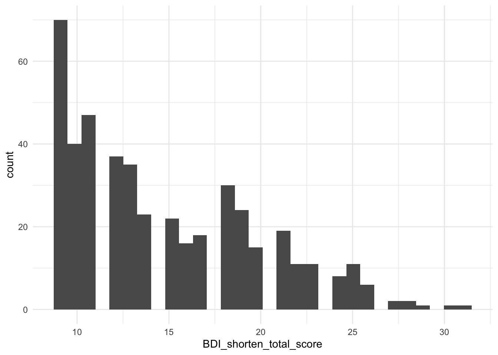
`stat_bin()` using `bins = 30`. Pick better value with `binwidth`.`stat_bin()` using `bins = 30`. Pick better value with `binwidth`.`stat_bin()` using `bins = 30`. Pick better value with `binwidth`.`stat_bin()` using `bins = 30`. Pick better value with `binwidth`.Warning: Removed 171 rows containing non-finite outside the scale range
(`stat_bin()`).`stat_bin()` using `bins = 30`. Pick better value with `binwidth`.Warning: Removed 171 rows containing non-finite outside the scale range
(`stat_bin()`).`stat_bin()` using `bins = 30`. Pick better value with `binwidth`.Warning: Removed 171 rows containing non-finite outside the scale range
(`stat_bin()`).`stat_bin()` using `bins = 30`. Pick better value with `binwidth`.Warning: Removed 171 rows containing non-finite outside the scale range
(`stat_bin()`).`stat_bin()` using `bins = 30`. Pick better value with `binwidth`.Warning: Removed 281 rows containing non-finite outside the scale range
(`stat_bin()`).`stat_bin()` using `bins = 30`. Pick better value with `binwidth`.Warning: Removed 280 rows containing non-finite outside the scale range
(`stat_bin()`).summary(df_merged_analysis) Participant.Public.ID mwq_total_score MSSB_total OCI_R_total_score
Length:451 Min. : 0.0 Min. : 0.000 Min. : 0.00
Class :character 1st Qu.:16.0 1st Qu.: 3.000 1st Qu.:10.00
Mode :character Median :20.0 Median : 7.000 Median :19.00
Mean :19.7 Mean : 8.707 Mean :20.46
3rd Qu.:24.0 3rd Qu.:13.000 3rd Qu.:30.00
Max. :34.0 Max. :32.000 Max. :58.00
AQ_total_score ASRS_total_score BDI_shorten_total_score EAT_total_score
Min. : 7.00 Min. :24.00 Min. : 9.00 Min. : 0.00
1st Qu.:15.00 1st Qu.:44.00 1st Qu.:11.00 1st Qu.: 4.00
Median :19.00 Median :50.00 Median :13.00 Median : 9.00
Mean :19.23 Mean :50.54 Mean :14.83 Mean :12.83
3rd Qu.:23.00 3rd Qu.:56.50 3rd Qu.:18.00 3rd Qu.:18.00
Max. :42.00 Max. :86.00 Max. :31.00 Max. :60.00
NA's :1
HCL32_total_score STAI_state_sum STAI_trait_sum RRS_total_score
Min. : 0.00 Min. :28.00 Min. :20.0 Min. :22.00
1st Qu.:15.00 1st Qu.:37.00 1st Qu.:40.0 1st Qu.:47.00
Median :19.00 Median :40.00 Median :47.0 Median :56.00
Mean :18.12 Mean :40.92 Mean :46.6 Mean :55.77
3rd Qu.:22.00 3rd Qu.:44.00 3rd Qu.:52.0 3rd Qu.:64.00
Max. :32.00 Max. :80.00 Max. :74.0 Max. :90.00
NA's :171 NA's :171
MAAS_total CAMSR_total_score gender.quantised age.year
Min. :22.00 Min. :17.00 Min. :1.000 Min. : 0.00
1st Qu.:47.00 1st Qu.:27.00 1st Qu.:1.000 1st Qu.:20.00
Median :56.00 Median :31.00 Median :1.000 Median :21.00
Mean :55.77 Mean :31.09 Mean :1.212 Mean :22.52
3rd Qu.:64.00 3rd Qu.:35.00 3rd Qu.:1.000 3rd Qu.:23.00
Max. :90.00 Max. :46.00 Max. :3.000 Max. :46.00
NA's :171 NA's :171 NA's :281 NA's :280 4.2.1 Check for normality of distributions
Formal test (S-W):
df_merged_analysis %>%
summarise(across(where(is.numeric), ~ shapiro.test(.)$p.value)) %>%
t() %>%
format(scientific = FALSE) [,1]
mwq_total_score "0.000276630629942459184324871"
MSSB_total "0.000000000000005277106822114"
OCI_R_total_score "0.000000024567876785278622763"
AQ_total_score "0.000059871815094370914723913"
ASRS_total_score "0.292982966618752393994640215"
BDI_shorten_total_score "0.000000000000002189483833495"
EAT_total_score "0.000000000000000000008334381"
HCL32_total_score "0.000000105260918320797753302"
STAI_state_sum "0.000000000126437929940517196"
STAI_trait_sum "0.136852723296918304951574896"
RRS_total_score "0.518705170476517651856340763"
MAAS_total "0.518705170476517651856340763"
CAMSR_total_score "0.139151539496615600510764921"
gender.quantised "0.000000000000000000001375209"
age.year "0.000000000000000014616496005"Visual inspection with QQplots:
numeric_cols <- df_merged_analysis %>%
dplyr::select(where(is.numeric)) %>%
mutate(across(everything(), ~ scale(.)))
for(col_name in names(numeric_cols)){
qqnorm(numeric_cols[[col_name]], main = paste("QQ plot:", col_name))
qqline(numeric_cols[[col_name]])
}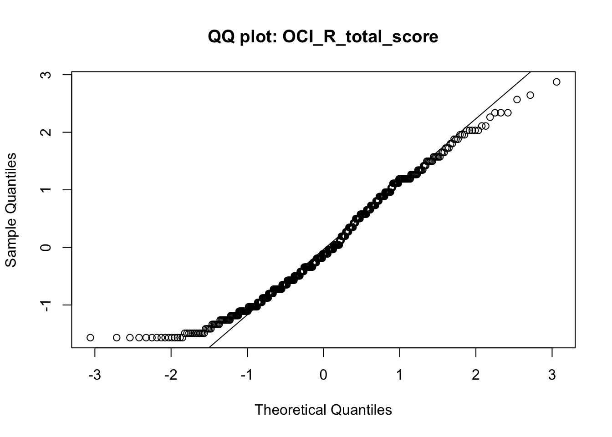
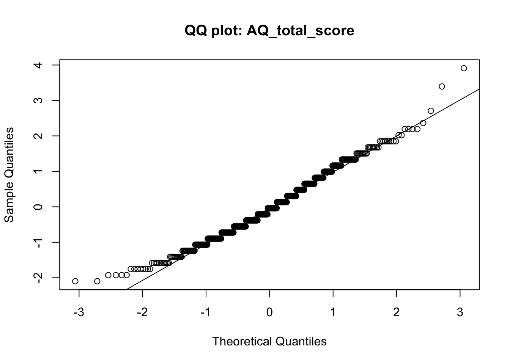
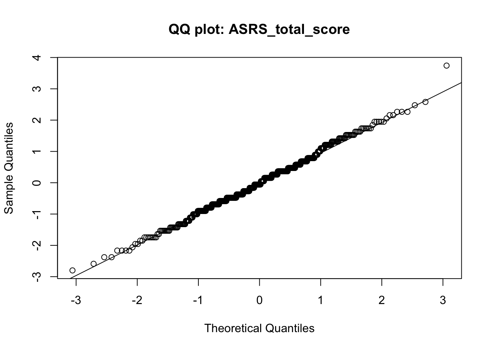
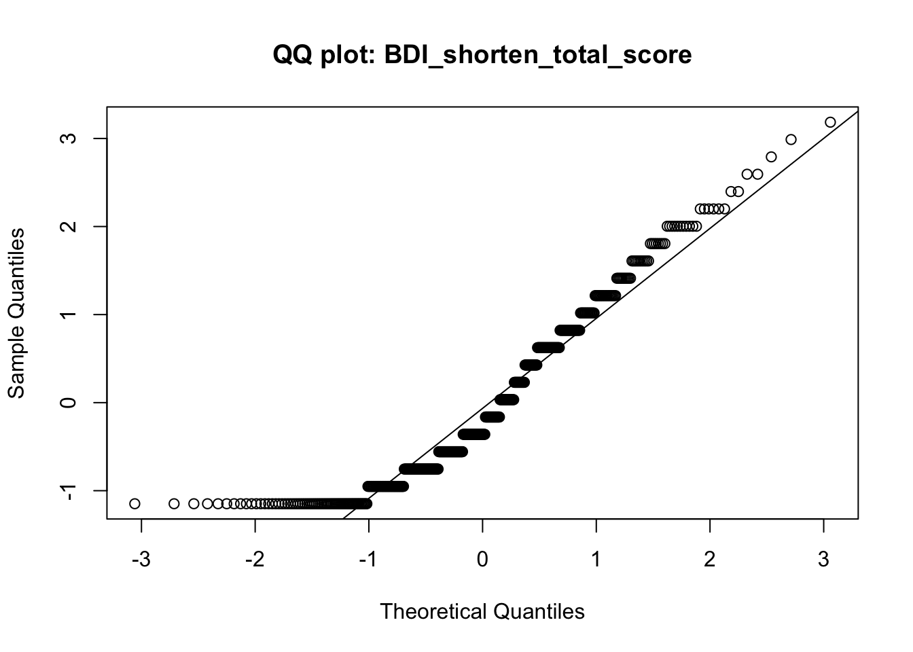

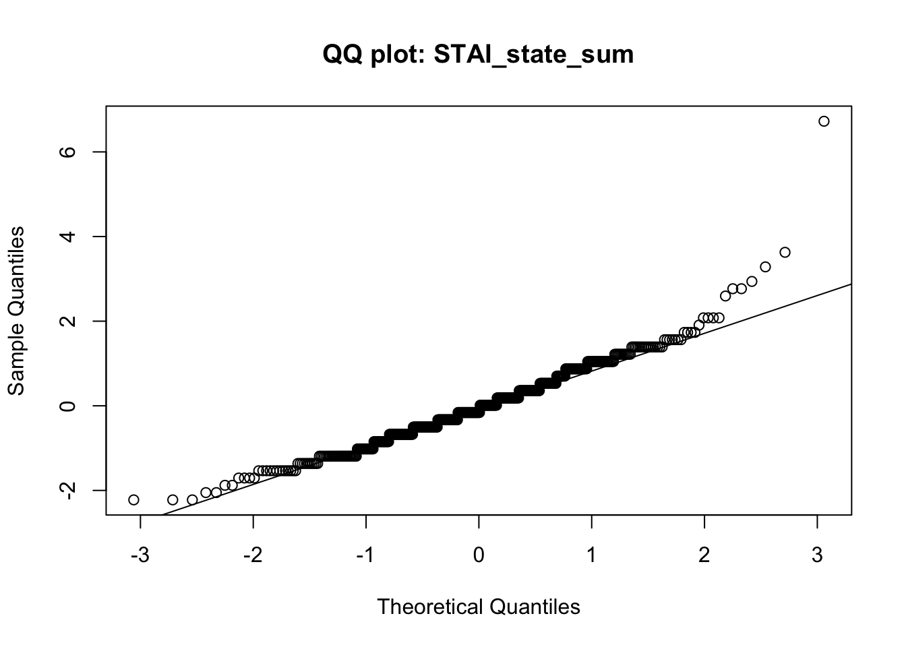
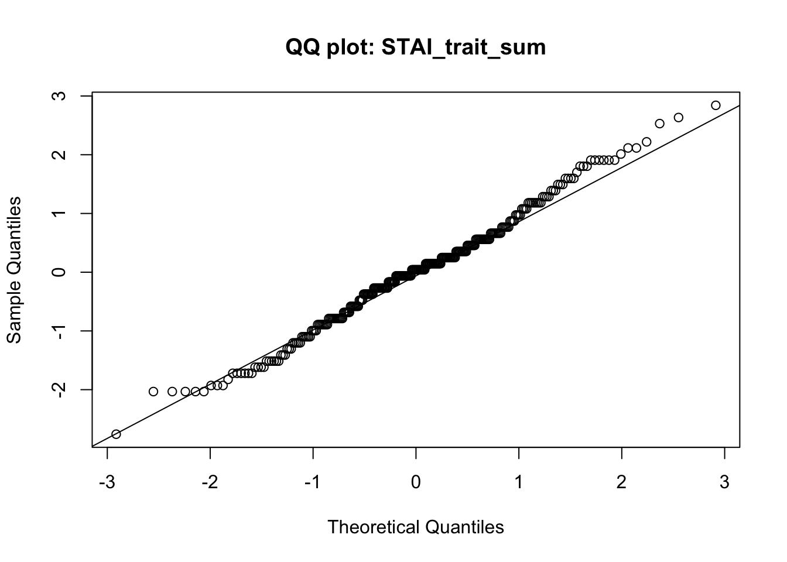
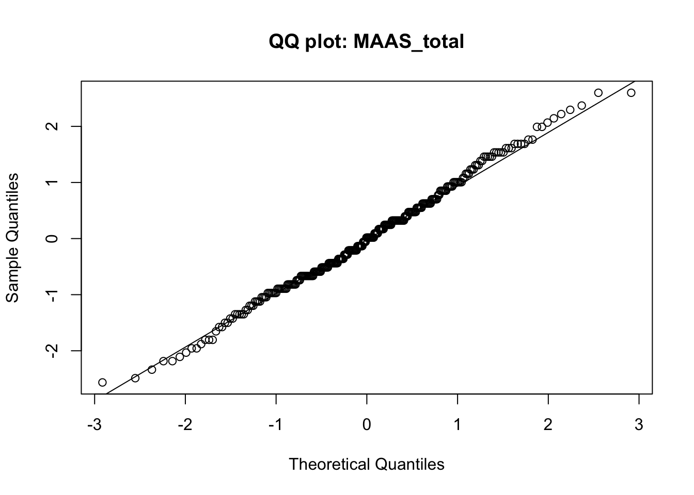
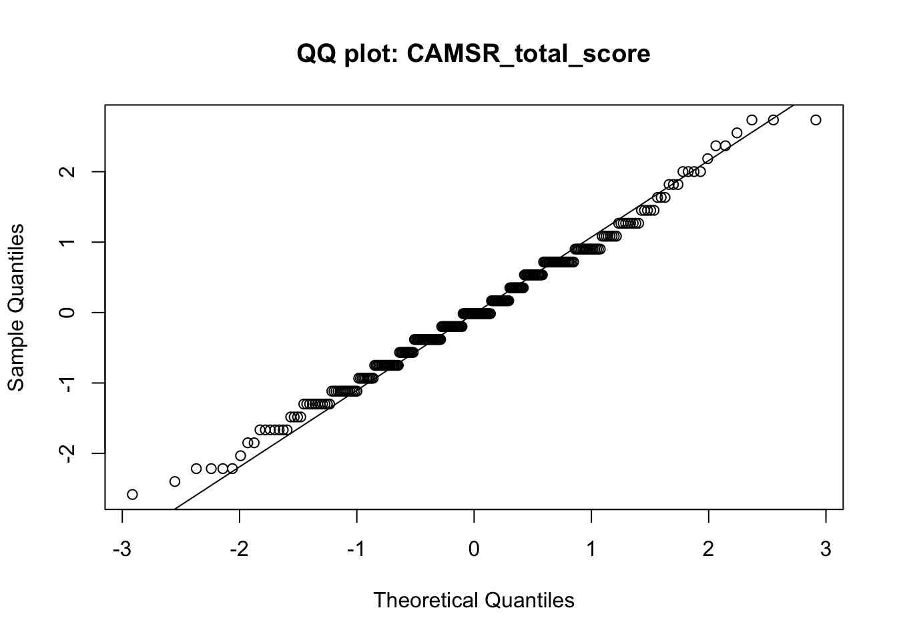
Several variables have non-normal distribution, thus we should use Spearman correlation in our bivariate correlation analyses!
Let’s visualise NAs as well. We need to transform the results to characters and plot with geom_bar used for factors/categories.
for (var in vars_to_plot) {
tmp <- df_merged_analysis %>%
mutate(
value = ifelse(is.na(.data[[var]]), "NA", as.character(.data[[var]]))
)
# Get levels in numeric order, then add "NA"
lvls <- c(as.character(sort(unique(na.omit(df_merged_analysis[[var]])))), "NA")
p <- ggplot(tmp, aes(factor(value, levels = lvls))) +
geom_bar() +
theme_minimal() +
labs(title = var, x = var)
print(p)
}

4.3 Correlations (bivariate; correlation matrix)
Create a correlation test to use for matrix:
corr_matrix <- df_merged_analysis %>%
dplyr::select(-c(age.year, gender.quantised, Participant.Public.ID, STAI_trait_sum, RRS_total_score, MAAS_total, CAMSR_total_score)) %>%
na.omit() %>%
corr.test(method = "spearman", adjust = "bonferroni")Uncorrected p-values matrix:
var_names <- c( "Mind-wandering (MWQ)", "Shizotypy (MSS-B)", "OCD (OCI-R)", "Autism spectrum (AQ)", "ADHD (ASRS)", "Depression (BDI shortened)", "Eating disorder (EAT)", "Hypomania (HCL-32)", "Anxiety (STAI state)")
colnames(corr_matrix$r) <- var_names
rownames(corr_matrix$r) <- var_names
corrplot(
corr_matrix$r,
p.mat = corr_matrix$raw, # raw p-values
sig.level = 0.05, # uncorrected alpha
type = "upper",
insig = "blank",
method = "ellipse",
addCoef.col = "black",
number.cex = 0.7,
title = "Uncorrected correlations",
tl.cex = 0.75,
tl.col = "black"
)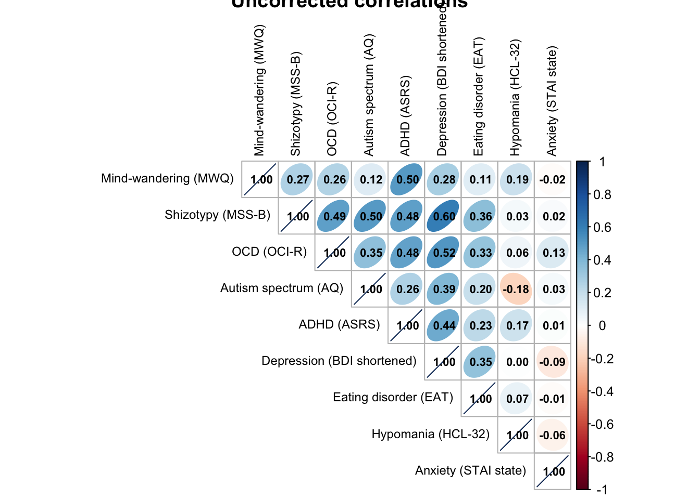
# ----------------------------
# 2️⃣ Bonferroni-adjusted correlations
# ----------------------------
corrplot(
corr_matrix$r,
p.mat = corr_matrix$p,
type = "upper",# adjusted p-values
sig.level = 0.05, # compare to 0.05 now
method = "ellipse",
addCoef.col = "black",
number.cex = 0.7,
title = "Bonferroni-adjusted correlations",
tl.cex = 0.75,
tl.col = "black"
)Warning in corrplot(corr_matrix$r, p.mat = corr_matrix$p, type = "upper", :
p.mat and corr may be not paired, their rownames and colnames are not totally
same!Trying ggcorrplot:
r_mat <- corr_matrix$r
p_mat <- corr_matrix$p
#r_mat_ordered <- r_mat[var_order, var_order]
#p_mat_ordered <- p_mat[var_order, var_order]
corr_matrix_ggplot <- ggcorrplot(corr_matrix$r,
type = "full",
lab = TRUE,
lab_size = 4,
p.mat = corr_matrix$p, # pass p-values
sig.level = 0.05,
insig = "blank", # threshold for significance,
lab_col = "black") +
theme_minimal() +
labs(x = NULL, y = NULL, title = "Correlation matrix of variable of interest", subtitle = "Below the diagonal, associations with insignificant unadjusted p-values were removed. \nAbove the diagonal, associations with insignificant adjusted p-values were removed.") +
scale_x_discrete(labels = var_names) +
scale_y_discrete(labels = var_names) +
theme(
axis.text.x = element_text(angle = 45, hjust = 1),
plot.title.position = "plot", # aligns relative to the entire plot
plot.subtitle.position = "plot", # aligns relative to the entire plot
plot.title = element_text(hjust = 0),
plot.subtitle = element_text(hjust = 0)
)
corr_matrix_ggplotWarning in plot_theme(plot): The `plot.subtitle.position` theme element is not defined in the element
hierarchy.
4.4 Regression analysis
Clean the dataset completely - at this point 1 observation is removed due to missing BDI values - not imputed in this version of the analysis!
df_merged_analysis_clean <- df_merged_analysis %>%
dplyr::select(-c(age.year, gender.quantised, Participant.Public.ID, STAI_trait_sum, RRS_total_score, MAAS_total, CAMSR_total_score)) %>%
na.omit()
glimpse(df_merged_analysis_clean)Rows: 450
Columns: 9
$ mwq_total_score <dbl> 28, 23, 15, 22, 19, 18, 20, 25, 28, 31, 21, 12…
$ MSSB_total <dbl> 14, 4, 6, 2, 5, 3, 17, 17, 23, 15, 1, 2, 30, 1…
$ OCI_R_total_score <dbl> 21, 1, 13, 20, 12, 9, 32, 12, 30, 9, 0, 1, 0, …
$ AQ_total_score <dbl> 19, 27, 17, 23, 20, 13, 22, 30, 25, 26, 15, 15…
$ ASRS_total_score <dbl> 58, 60, 50, 64, 43, 52, 69, 58, 62, 45, 58, 37…
$ BDI_shorten_total_score <dbl> 22, 9, 17, 13, 11, 11, 15, 19, 20, 31, 9, 9, 9…
$ EAT_total_score <dbl> 52, 14, 37, 17, 16, 0, 31, 6, 46, 39, 12, 14, …
$ HCL32_total_score <dbl> 14, 13, 8, 19, 21, 20, 21, 18, 12, 15, 25, 21,…
$ STAI_state_sum <dbl> 41, 50, 34, 41, 41, 43, 39, 40, 35, 32, 36, 40…Let’s scale (standardise) all the numeric variables.
df_merged_analysis_clean_std <- df_merged_analysis_clean %>%
mutate(across(where(is.numeric), ~ as.numeric(scale(.))))Check the data
glimpse(df_merged_analysis_clean_std)Rows: 450
Columns: 9
$ mwq_total_score <dbl> 1.35290677, 0.53549532, -0.77236300, 0.3720130…
$ MSSB_total <dbl> 0.77795233, -0.69296594, -0.39878228, -0.98714…
$ OCI_R_total_score <dbl> 0.04148187, -1.48858723, -0.57054577, -0.03502…
$ AQ_total_score <dbl> -0.03963268, 1.33226774, -0.38260778, 0.646317…
$ ASRS_total_score <dbl> 0.78516900, 0.99610993, -0.05859470, 1.4179917…
$ BDI_shorten_total_score <dbl> 1.41232178, -1.14797646, 0.42759169, -0.360192…
$ EAT_total_score <dbl> 3.37384626, 0.09863927, 2.08100139, 0.35720825…
$ HCL32_total_score <dbl> -0.66821924, -0.83005921, -1.63925905, 0.14098…
$ STAI_state_sum <dbl> 0.01645086, 1.56589263, -1.18867051, 0.0164508…Multiple regression:
reg_model <- lm(mwq_total_score ~ MSSB_total + OCI_R_total_score + AQ_total_score
+ ASRS_total_score + BDI_shorten_total_score + EAT_total_score + HCL32_total_score + STAI_state_sum, data = df_merged_analysis_clean_std)
summary(reg_model)
Call:
lm(formula = mwq_total_score ~ MSSB_total + OCI_R_total_score +
AQ_total_score + ASRS_total_score + BDI_shorten_total_score +
EAT_total_score + HCL32_total_score + STAI_state_sum, data = df_merged_analysis_clean_std)
Residuals:
Min 1Q Median 3Q Max
-2.8141 -0.5941 0.0475 0.5650 2.3229
Coefficients:
Estimate Std. Error t value Pr(>|t|)
(Intercept) 1.935e-16 4.041e-02 0.000 1.0000
MSSB_total -1.064e-01 5.652e-02 -1.882 0.0605 .
OCI_R_total_score 4.514e-02 5.162e-02 0.874 0.3823
AQ_total_score 1.348e-02 4.846e-02 0.278 0.7810
ASRS_total_score 4.683e-01 4.965e-02 9.432 <2e-16 ***
BDI_shorten_total_score 1.090e-01 5.587e-02 1.951 0.0517 .
EAT_total_score -2.127e-02 4.419e-02 -0.481 0.6305
HCL32_total_score 9.850e-02 4.301e-02 2.290 0.0225 *
STAI_state_sum -2.885e-02 4.176e-02 -0.691 0.4900
---
Signif. codes: 0 '***' 0.001 '**' 0.01 '*' 0.05 '.' 0.1 ' ' 1
Residual standard error: 0.8573 on 441 degrees of freedom
Multiple R-squared: 0.2781, Adjusted R-squared: 0.265
F-statistic: 21.24 on 8 and 441 DF, p-value: < 2.2e-16Create a nice tab for the results WITHOUT adjustment (for comparison):
tab_model(reg_model)| mwq total score | |||
| Predictors | Estimates | CI | p |
| (Intercept) | 0.00 | -0.08 – 0.08 | 1.000 |
| MSSB total | -0.11 | -0.22 – 0.00 | 0.061 |
| OCI R total score | 0.05 | -0.06 – 0.15 | 0.382 |
| AQ total score | 0.01 | -0.08 – 0.11 | 0.781 |
| ASRS total score | 0.47 | 0.37 – 0.57 | <0.001 |
| BDI shorten total score | 0.11 | -0.00 – 0.22 | 0.052 |
| EAT total score | -0.02 | -0.11 – 0.07 | 0.631 |
| HCL32 total score | 0.10 | 0.01 – 0.18 | 0.023 |
| STAI state sum | -0.03 | -0.11 – 0.05 | 0.490 |
| Observations | 450 | ||
| R2 / R2 adjusted | 0.278 / 0.265 | ||
Create a nice tab for the results and use bonferroni adjustment!
tab_model(reg_model, p.adjust = "bonferroni")| mwq total score | |||
| Predictors | Estimates | CI | p |
| (Intercept) | 0.00 | -0.08 – 0.08 | 1.000 |
| MSSB total | -0.11 | -0.22 – 0.00 | 0.545 |
| OCI R total score | 0.05 | -0.06 – 0.15 | 1.000 |
| AQ total score | 0.01 | -0.08 – 0.11 | 1.000 |
| ASRS total score | 0.47 | 0.37 – 0.57 | <0.001 |
| BDI shorten total score | 0.11 | -0.00 – 0.22 | 0.465 |
| EAT total score | -0.02 | -0.11 – 0.07 | 1.000 |
| HCL32 total score | 0.10 | 0.01 – 0.18 | 0.203 |
| STAI state sum | -0.03 | -0.11 – 0.05 | 1.000 |
| Observations | 450 | ||
| R2 / R2 adjusted | 0.278 / 0.265 | ||
Plot model estimates:
plot_model(reg_model, type = "est", p.adjust = "bonferroni", show.value = TRUE, value.offset = 0.35) +
theme_minimal() +
labs(title = "MWQ predicted be questionnaires") +
scale_x_discrete(labels = c("STAI", "HCL32", "EAT", "BDI short", "ASRS", "AQ", "OCI-R", "MSSB"))Scale for x is already present.
Adding another scale for x, which will replace the existing scale.4.4.1 Model diagnostics (influential points, assumptions check - normality of residuals, homogeneity, multicolinearity)
4.4.1.1 Influential points
Cook’s distance - using rule of thumb: threshold = 4/n observations.
plot(reg_model, 4)
abline(h = 4/nrow(df_merged_analysis_clean_std), col = "red") Several points are over the arbitrary threshold for Cook’s distance. Especially 3 observations have severe values (observations: 13, 116, 130). Let’s isolate these points and check their values in various questionnaires.
augment(reg_model) %>%
mutate(row_n = seq((1:nrow(df_merged_analysis_clean_std)))) %>%
relocate(row_n, 1) %>%
filter(row_n %in% c(13, 116, 130))# A tibble: 3 × 16
row_n mwq_total_score MSSB_total OCI_R_total_score AQ_total_score
<int> <dbl> <dbl> <dbl> <dbl>
1 13 -3.22 3.13 -1.57 0.818
2 116 -3.22 2.10 -1.57 0.303
3 130 -0.609 -0.105 -0.265 -0.383
# ℹ 11 more variables: ASRS_total_score <dbl>, BDI_shorten_total_score <dbl>,
# EAT_total_score <dbl>, HCL32_total_score <dbl>, STAI_state_sum <dbl>,
# .fitted <dbl>, .resid <dbl>, .hat <dbl>, .sigma <dbl>, .cooksd <dbl>,
# .std.resid <dbl>Let’s plot all the prediction plots and try to identify these points. They seem to have severe deviation in:
- Row 13: -3.22 SD below mean of MWQ, 6.73 SD over mean STAI state
- Row 116: -3.22 SD below mean of MWQ
- Row 130 3.73 SD over mean ASRS score
Plotting:
plot_model(reg_model, type = "pred", show.data = TRUE)Data points may overlap. Use the `jitter` argument to add some amount of
random variation to the location of data points and avoid overplotting.
Data points may overlap. Use the `jitter` argument to add some amount of
random variation to the location of data points and avoid overplotting.
Data points may overlap. Use the `jitter` argument to add some amount of
random variation to the location of data points and avoid overplotting.
Data points may overlap. Use the `jitter` argument to add some amount of
random variation to the location of data points and avoid overplotting.
Data points may overlap. Use the `jitter` argument to add some amount of
random variation to the location of data points and avoid overplotting.
Data points may overlap. Use the `jitter` argument to add some amount of
random variation to the location of data points and avoid overplotting.
Data points may overlap. Use the `jitter` argument to add some amount of
random variation to the location of data points and avoid overplotting.
Data points may overlap. Use the `jitter` argument to add some amount of
random variation to the location of data points and avoid overplotting.$MSSB_total
$OCI_R_total_score
$AQ_total_score
$ASRS_total_score
$BDI_shorten_total_score
$EAT_total_score
$HCL32_total_score
$STAI_state_sumPossibly non-linear relationship in MSS-B and OCI-R?
After visual inspection, I think that deviation in MWQ is not problematic. However, I suggest removing influential points 13 and possibly 130. But let’s first check other indices of the model.
plot(reg_model, which = c(5,6))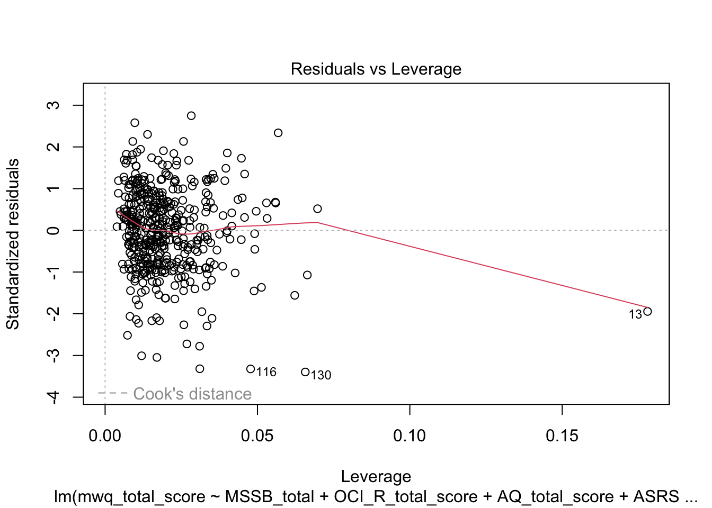

Yes, observation 13 is definitely a severe outlier and should be removed from the data as it’s influence on the model is too severe. Consider 116 and 130 as well.
4.4.1.2 Checking model assumptions
Check model for violation of assumptions:
check_model(reg_model)Check normality of residuals
Test:
check_normality(reg_model)Warning: Non-normality of residuals detected (p = 0.001).Plot:
plot(reg_model, 2)Check for homoscedasticity
Test
check_heteroscedasticity(reg_model)OK: Error variance appears to be homoscedastic (p = 0.965).check_heteroscedasticity(reg_model) |> plot()augment(reg_model) %>%
mutate(row_n = seq((1:nrow(df_merged_analysis_clean_std)))) %>%
relocate(row_n, 1) %>%
arrange(desc(.fitted))# A tibble: 450 × 16
row_n mwq_total_score MSSB_total OCI_R_total_score AQ_total_score
<int> <dbl> <dbl> <dbl> <dbl>
1 130 -0.609 -0.105 -0.265 -0.383
2 123 1.84 1.66 1.19 0.475
3 357 1.19 -0.399 0.960 -0.726
4 182 0.862 0.484 2.03 -0.726
5 207 0.372 0.484 1.11 -0.211
6 144 2.01 0.925 0.577 0.646
7 241 1.35 0.925 0.577 -0.0396
8 86 2.17 2.25 1.11 -0.383
9 361 0.699 -0.399 0.0415 0.646
10 385 -0.118 1.81 1.34 0.989
# ℹ 440 more rows
# ℹ 11 more variables: ASRS_total_score <dbl>, BDI_shorten_total_score <dbl>,
# EAT_total_score <dbl>, HCL32_total_score <dbl>, STAI_state_sum <dbl>,
# .fitted <dbl>, .resid <dbl>, .hat <dbl>, .sigma <dbl>, .cooksd <dbl>,
# .std.resid <dbl>We can see that the “problematic” point detected in visual inspection on the homogeneity of variance plot is observation 130. Again, I think that all these inspections suggest we remove 13 and 130 from the data.
Check for multicolinearity Test
check_collinearity(reg_model)# Check for Multicollinearity
Low Correlation
Term VIF VIF 95% CI Increased SE Tolerance
MSSB_total 1.95 [1.72, 2.25] 1.40 0.51
OCI_R_total_score 1.63 [1.45, 1.87] 1.28 0.61
AQ_total_score 1.43 [1.30, 1.64] 1.20 0.70
ASRS_total_score 1.51 [1.35, 1.72] 1.23 0.66
BDI_shorten_total_score 1.91 [1.69, 2.20] 1.38 0.52
EAT_total_score 1.19 [1.10, 1.37] 1.09 0.84
HCL32_total_score 1.13 [1.05, 1.31] 1.06 0.88
STAI_state_sum 1.07 [1.01, 1.31] 1.03 0.94
Tolerance 95% CI
[0.44, 0.58]
[0.54, 0.69]
[0.61, 0.77]
[0.58, 0.74]
[0.45, 0.59]
[0.73, 0.91]
[0.76, 0.95]
[0.76, 0.99]Visualise:
check_collinearity(reg_model) |> plot()Summary: based on the visual inspection and formal tests, I suggest we create another model from which two influential points are removed (observations 13 and 130), check all the assumptions and then compare model performance.
4.5 Additional regression analysis with removed influential points
Remove influential points from the dataset - rows 13 and 130.
influential_points <- c(13, 130)
df_merged_analysis_clean_std_rem_infl <- df_merged_analysis_clean_std %>%
slice(-influential_points)Repeat all the steps:
Multiple regression:
reg_model_removed_influentials <- lm(mwq_total_score ~ MSSB_total + OCI_R_total_score + AQ_total_score
+ ASRS_total_score + BDI_shorten_total_score + EAT_total_score + HCL32_total_score + STAI_state_sum, data = df_merged_analysis_clean_std_rem_infl)
summary(reg_model_removed_influentials)
Call:
lm(formula = mwq_total_score ~ MSSB_total + OCI_R_total_score +
AQ_total_score + ASRS_total_score + BDI_shorten_total_score +
EAT_total_score + HCL32_total_score + STAI_state_sum, data = df_merged_analysis_clean_std_rem_infl)
Residuals:
Min 1Q Median 3Q Max
-2.82721 -0.59017 0.03926 0.55881 2.30564
Coefficients:
Estimate Std. Error t value Pr(>|t|)
(Intercept) 0.010090 0.039929 0.253 0.8006
MSSB_total -0.098031 0.057510 -1.705 0.0890 .
OCI_R_total_score 0.017924 0.051519 0.348 0.7281
AQ_total_score 0.009021 0.047790 0.189 0.8504
ASRS_total_score 0.493376 0.049900 9.887 <2e-16 ***
BDI_shorten_total_score 0.117497 0.055410 2.120 0.0345 *
EAT_total_score -0.022486 0.043562 -0.516 0.6060
HCL32_total_score 0.097486 0.042792 2.278 0.0232 *
STAI_state_sum -0.015631 0.043374 -0.360 0.7187
---
Signif. codes: 0 '***' 0.001 '**' 0.01 '*' 0.05 '.' 0.1 ' ' 1
Residual standard error: 0.845 on 439 degrees of freedom
Multiple R-squared: 0.2847, Adjusted R-squared: 0.2716
F-statistic: 21.84 on 8 and 439 DF, p-value: < 2.2e-16Create a nice tab for the results WITHOUT adjustment (for comparison):
tab_model(reg_model_removed_influentials, show.stat = TRUE)| mwq total score | ||||
| Predictors | Estimates | CI | Statistic | p |
| (Intercept) | 0.01 | -0.07 – 0.09 | 0.25 | 0.801 |
| MSSB total | -0.10 | -0.21 – 0.01 | -1.70 | 0.089 |
| OCI R total score | 0.02 | -0.08 – 0.12 | 0.35 | 0.728 |
| AQ total score | 0.01 | -0.08 – 0.10 | 0.19 | 0.850 |
| ASRS total score | 0.49 | 0.40 – 0.59 | 9.89 | <0.001 |
| BDI shorten total score | 0.12 | 0.01 – 0.23 | 2.12 | 0.035 |
| EAT total score | -0.02 | -0.11 – 0.06 | -0.52 | 0.606 |
| HCL32 total score | 0.10 | 0.01 – 0.18 | 2.28 | 0.023 |
| STAI state sum | -0.02 | -0.10 – 0.07 | -0.36 | 0.719 |
| Observations | 448 | |||
| R2 / R2 adjusted | 0.285 / 0.272 | |||
Create a nice tab for the results and use bonferroni adjustment!
tab_model(reg_model_removed_influentials, p.adjust = "bonferroni", digits = 3, show.se = TRUE, title = "Model for full dataset with removed influential points + Bonferroni adjustment")| mwq total score | ||||
| Predictors | Estimates | std. Error | CI | p |
| (Intercept) | 0.010 | 0.040 | -0.068 – 0.089 | 1.000 |
| MSSB total | -0.098 | 0.058 | -0.211 – 0.015 | 0.801 |
| OCI R total score | 0.018 | 0.052 | -0.083 – 0.119 | 1.000 |
| AQ total score | 0.009 | 0.048 | -0.085 – 0.103 | 1.000 |
| ASRS total score | 0.493 | 0.050 | 0.395 – 0.591 | <0.001 |
| BDI shorten total score | 0.117 | 0.055 | 0.009 – 0.226 | 0.311 |
| EAT total score | -0.022 | 0.044 | -0.108 – 0.063 | 1.000 |
| HCL32 total score | 0.097 | 0.043 | 0.013 – 0.182 | 0.209 |
| STAI state sum | -0.016 | 0.043 | -0.101 – 0.070 | 1.000 |
| Observations | 448 | |||
| R2 / R2 adjusted | 0.285 / 0.272 | |||
Plot model estimates:
plot_model(reg_model_removed_influentials, type = "est", p.adjust = "bonferroni", show.value = TRUE, value.offset = 0.35) +
theme_minimal() +
labs(title = "MWQ predicted be questionnaires") +
scale_x_discrete(labels = c("STAI", "HCL32", "EAT", "BDI short", "ASRS", "AQ", "OCI-R", "MSSB"))Scale for x is already present.
Adding another scale for x, which will replace the existing scale.4.5.1 Model diagnostics (influential points, assumptions check - normality of residuals, homogeneity, multicolinearity)
4.5.1.1 Influential points
Cook’s distance - using rule of thumb: threshold = 4/n observations. As removing the points and using such visualisation is basically a recursive process, we can see that after removing 2 influential points in the previous step, there is nor much larger deviation in Cook’s distances.
plot(reg_model_removed_influentials, 4)
abline(h = 4/nrow(df_merged_analysis_clean_std_rem_infl), col = "red") Plotting:
plot_model(reg_model_removed_influentials, type = "pred", show.data = TRUE)Data points may overlap. Use the `jitter` argument to add some amount of
random variation to the location of data points and avoid overplotting.
Data points may overlap. Use the `jitter` argument to add some amount of
random variation to the location of data points and avoid overplotting.
Data points may overlap. Use the `jitter` argument to add some amount of
random variation to the location of data points and avoid overplotting.
Data points may overlap. Use the `jitter` argument to add some amount of
random variation to the location of data points and avoid overplotting.
Data points may overlap. Use the `jitter` argument to add some amount of
random variation to the location of data points and avoid overplotting.
Data points may overlap. Use the `jitter` argument to add some amount of
random variation to the location of data points and avoid overplotting.
Data points may overlap. Use the `jitter` argument to add some amount of
random variation to the location of data points and avoid overplotting.
Data points may overlap. Use the `jitter` argument to add some amount of
random variation to the location of data points and avoid overplotting.$MSSB_total
$OCI_R_total_score
$AQ_total_score
$ASRS_total_score
$BDI_shorten_total_score
$EAT_total_score
$HCL32_total_score
$STAI_state_sumMuch better, no evident extreme outliers! However, possibly non-linear relationship in MSS-B and OCI-R?
Let’s check other indices of the model.
plot(reg_model_removed_influentials, which = c(5,6))Much better.
4.5.1.2 Checking model assumptions
check_model(reg_model_removed_influentials)Check normality of residuals Test:
check_normality(reg_model_removed_influentials) |> plot()
Plot:
plot(reg_model_removed_influentials, 2)While formal test suggest non-normality, visual inspection is not that horrible. Maybe we should discuss this in more details!
Check for homoscedasticity Test
check_heteroscedasticity(reg_model_removed_influentials)OK: Error variance appears to be homoscedastic (p = 0.220).check_heteroscedasticity(reg_model_removed_influentials) |> plot()Now there seem to be some points with negative fitted values that affect homoscedasticity, however not severly. Still, let’s see which points are they (perhaps 116 from the previous dataset, which would now be 115).
augment(reg_model_removed_influentials) %>%
mutate(row_n = seq((1:nrow(df_merged_analysis_clean_std_rem_infl)))) %>%
relocate(row_n, 1) %>%
arrange(.fitted)# A tibble: 448 × 16
row_n mwq_total_score MSSB_total OCI_R_total_score AQ_total_score
<int> <dbl> <dbl> <dbl> <dbl>
1 297 -1.59 0.337 -1.34 0.818
2 394 -2.24 -0.987 -0.724 -0.726
3 446 -1.43 -0.840 -0.953 -1.58
4 418 -1.10 -0.987 -1.57 -0.726
5 253 -0.609 0.190 -1.03 -0.726
6 254 -1.92 -0.693 -0.800 0.132
7 437 -1.26 -1.13 -1.03 -0.0396
8 272 -1.59 -0.840 -1.26 0.132
9 255 -1.10 -1.28 -0.724 -1.41
10 131 -1.26 -1.13 -1.57 -1.24
# ℹ 438 more rows
# ℹ 11 more variables: ASRS_total_score <dbl>, BDI_shorten_total_score <dbl>,
# EAT_total_score <dbl>, HCL32_total_score <dbl>, STAI_state_sum <dbl>,
# .fitted <dbl>, .resid <dbl>, .hat <dbl>, .sigma <dbl>, .cooksd <dbl>,
# .std.resid <dbl>No, it is not previously discussed observation 116. I think that considering visual inspection and formal tests, there is no need to remove any additional data points.
Check for multicolinearity Test
check_collinearity(reg_model_removed_influentials)# Check for Multicollinearity
Low Correlation
Term VIF VIF 95% CI Increased SE Tolerance
MSSB_total 2.03 [1.79, 2.35] 1.43 0.49
OCI_R_total_score 1.66 [1.48, 1.91] 1.29 0.60
AQ_total_score 1.43 [1.29, 1.64] 1.20 0.70
ASRS_total_score 1.51 [1.36, 1.73] 1.23 0.66
BDI_shorten_total_score 1.91 [1.69, 2.20] 1.38 0.52
EAT_total_score 1.19 [1.10, 1.37] 1.09 0.84
HCL32_total_score 1.12 [1.05, 1.30] 1.06 0.89
STAI_state_sum 1.05 [1.01, 1.36] 1.02 0.95
Tolerance 95% CI
[0.43, 0.56]
[0.52, 0.68]
[0.61, 0.77]
[0.58, 0.74]
[0.45, 0.59]
[0.73, 0.91]
[0.77, 0.96]
[0.73, 0.99]Visualise:
check_collinearity(reg_model_removed_influentials) |> plot()Again, no issues with multicolinearity!
4.6 Model comparison
Let us now compare the initial model (reg_model) and the second model, where 2 influential datapoints were removed (reg_model_removed_influentials).
compare_performance(reg_model, reg_model_removed_influentials)When comparing models, please note that probably not all models were fit
from same data.# Comparison of Model Performance Indices
Name | Model | AIC (weights) | AICc (weights)
------------------------------------------------------------------------
reg_model | lm | 1149.4 (<.001) | 1149.9 (<.001)
reg_model_removed_influentials | lm | 1131.4 (>.999) | 1131.9 (>.999)
Name | BIC (weights) | R2 | R2 (adj.) | RMSE | Sigma
-----------------------------------------------------------------------------------
reg_model | 1190.5 (<.001) | 0.278 | 0.265 | 0.849 | 0.857
reg_model_removed_influentials | 1172.4 (>.999) | 0.285 | 0.272 | 0.836 | 0.845We can see that there is no significant difference in model performance, so we can still think about whether to stick to the model with all the datapoints or stick to the model with removed datapoints. While I did identify them as influential according to arbitrary thresholds, both models passed assumptions of multicolinearity and homoscedasticity, however both had slight issues in passing assumption of normality.
**At this point it might be sensible to try a more robust modelling approach with rlm() from MASS package.
Reason: A few extreme or highly influential points in the data can disproportionately affect the estimates in lm models.
rlm() from the MASS package implements robust regression using M-estimation. This downweights the influence of outliers automatically, producing more stable and reliable coefficient estimates without removing data points.
Difference from lm(): - lm() minimizes the sum of squared residuals; large residuals have a big effect. - rlm() minimizes a weighted sum, reducing the impact of extreme values. - Coefficients may differ slightly from lm() if outliers exist. - Standard errors and p-values are handled differently; robust SEs can be computed separately.
In short: rlm() helps ensure that a few unusual observations don’t distort the model.
4.7 Additional regression - Robust linear model using rlm()
In order to see whether it makes more sense to use robust lm or continue with the model where influential points were removed, let’s fit the robust lm on original clean dataset with all 450 observations.
rlm_model <- rlm(mwq_total_score ~ MSSB_total + OCI_R_total_score + AQ_total_score
+ ASRS_total_score + BDI_shorten_total_score + EAT_total_score + HCL32_total_score + STAI_state_sum, data = df_merged_analysis_clean_std)See the model summary:
summary(rlm_model)
Call: rlm(formula = mwq_total_score ~ MSSB_total + OCI_R_total_score +
AQ_total_score + ASRS_total_score + BDI_shorten_total_score +
EAT_total_score + HCL32_total_score + STAI_state_sum, data = df_merged_analysis_clean_std)
Residuals:
Min 1Q Median 3Q Max
-2.93793 -0.60835 0.01301 0.52896 2.29442
Coefficients:
Value Std. Error t value
(Intercept) 0.0233 0.0387 0.6015
MSSB_total -0.0680 0.0542 -1.2547
OCI_R_total_score 0.0093 0.0495 0.1888
AQ_total_score -0.0045 0.0464 -0.0978
ASRS_total_score 0.4869 0.0476 10.2330
BDI_shorten_total_score 0.1143 0.0535 2.1344
EAT_total_score -0.0312 0.0423 -0.7364
HCL32_total_score 0.1026 0.0412 2.4892
STAI_state_sum -0.0304 0.0400 -0.7602
Residual standard error: 0.8391 on 441 degrees of freedomWe have to calculate robust SEs and p-values separately.
coeftest(rlm_model, vcov = vcovHC(rlm_model, type = "HC3"))
z test of coefficients:
Estimate Std. Error z value Pr(>|z|)
(Intercept) 0.0232939 0.0391747 0.5946 0.55210
MSSB_total -0.0679570 0.0645518 -1.0528 0.29246
OCI_R_total_score 0.0093361 0.0547429 0.1705 0.86458
AQ_total_score -0.0045411 0.0473549 -0.0959 0.92360
ASRS_total_score 0.4868817 0.0496884 9.7987 < 2e-16 ***
BDI_shorten_total_score 0.1142699 0.0522340 2.1877 0.02869 *
EAT_total_score -0.0311801 0.0476834 -0.6539 0.51318
HCL32_total_score 0.1026018 0.0494208 2.0761 0.03789 *
STAI_state_sum -0.0304194 0.0503054 -0.6047 0.54538
---
Signif. codes: 0 '***' 0.001 '**' 0.01 '*' 0.05 '.' 0.1 ' ' 1robust_summary <- coeftest(rlm_model, vcov = vcovHC(rlm_model, type = "HC3"))
# optionally add corrected p-values
robust_summary_df <- data.frame(
Estimate = round(robust_summary[, "Estimate"], 4),
Robust_SE = round(robust_summary[, "Std. Error"], 4),
t_value = round(robust_summary[, "z value"], 4),
p_value = round(robust_summary[, "Pr(>|z|)"], 4),
p_bonf = round(p.adjust(robust_summary[, "Pr(>|z|)"], method = "bonferroni"), 4)
)
robust_summary_df Estimate Robust_SE t_value p_value p_bonf
(Intercept) 0.0233 0.0392 0.5946 0.5521 1.0000
MSSB_total -0.0680 0.0646 -1.0528 0.2925 1.0000
OCI_R_total_score 0.0093 0.0547 0.1705 0.8646 1.0000
AQ_total_score -0.0045 0.0474 -0.0959 0.9236 1.0000
ASRS_total_score 0.4869 0.0497 9.7987 0.0000 0.0000
BDI_shorten_total_score 0.1143 0.0522 2.1877 0.0287 0.2583
EAT_total_score -0.0312 0.0477 -0.6539 0.5132 1.0000
HCL32_total_score 0.1026 0.0494 2.0761 0.0379 0.3410
STAI_state_sum -0.0304 0.0503 -0.6047 0.5454 1.00005 REDUCED DATA ANALYSIS - SAMPLE WITHOUT DIAGNOSED/MEDICATED PARTICIPANTS
Select only relevant columns from merged dataset:
df_merged_exc_analysis <- df_merged_clean_exc %>%
dplyr::select(Participant.Public.ID,
mwq_total_score,
MSSB_total,
OCI_R_total_score,
AQ_total_score,
ASRS_total_score,
BDI_shorten_total_score,
EAT_total_score,
HCL32_total_score,
STAI_state_sum,
STAI_trait_sum,
RRS_total_score,
MAAS_total,
CAMSR_total_score,
gender.quantised,
age.year)5.1 STAI state and trait correlations
Calculate correlation between STAI state and STAI trait
cor(df_merged_exc_analysis$STAI_state_sum, df_merged_exc_analysis$STAI_trait_sum, use = "complete.obs", method = "spearman")[1] -0.05486571cor.test(df_merged_exc_analysis$STAI_state_sum, df_merged_exc_analysis$STAI_trait_sum, method = "spearman")Warning in cor.test.default(df_merged_exc_analysis$STAI_state_sum,
df_merged_exc_analysis$STAI_trait_sum, : Cannot compute exact p-value with ties
Spearman's rank correlation rho
data: df_merged_exc_analysis$STAI_state_sum and df_merged_exc_analysis$STAI_trait_sum
S = 2681599, p-value = 0.3896
alternative hypothesis: true rho is not equal to 0
sample estimates:
rho
-0.05486571 df_merged_exc_analysis %>%
ggplot(aes(x = STAI_state_sum, y = STAI_trait_sum)) +
geom_point() +
geom_smooth(method = "lm") +
theme_minimal() +
labs(x = "STAI state", y = "STAI trait", title = "Association between STAI state and trait scores (reduced sample)")`geom_smooth()` using formula = 'y ~ x'Warning: Removed 130 rows containing non-finite outside the scale range
(`stat_smooth()`).Warning: Removed 130 rows containing missing values or values outside the scale range
(`geom_point()`).5.2 Visualize distributions of the variables
Plotting distributions:
for (var in vars_to_plot) {
plot <- ggplot(df_merged_exc_analysis, aes(.data[[var]])) +
geom_histogram() +
theme_minimal()
print(plot)
}`stat_bin()` using `bins = 30`. Pick better value with `binwidth`.`stat_bin()` using `bins = 30`. Pick better value with `binwidth`.`stat_bin()` using `bins = 30`. Pick better value with `binwidth`.`stat_bin()` using `bins = 30`. Pick better value with `binwidth`.`stat_bin()` using `bins = 30`. Pick better value with `binwidth`.`stat_bin()` using `bins = 30`. Pick better value with `binwidth`.Warning: Removed 1 row containing non-finite outside the scale range
(`stat_bin()`).`stat_bin()` using `bins = 30`. Pick better value with `binwidth`.`stat_bin()` using `bins = 30`. Pick better value with `binwidth`.`stat_bin()` using `bins = 30`. Pick better value with `binwidth`.
`stat_bin()` using `bins = 30`. Pick better value with `binwidth`.Warning: Removed 130 rows containing non-finite outside the scale range
(`stat_bin()`).`stat_bin()` using `bins = 30`. Pick better value with `binwidth`.Warning: Removed 130 rows containing non-finite outside the scale range
(`stat_bin()`).`stat_bin()` using `bins = 30`. Pick better value with `binwidth`.Warning: Removed 130 rows containing non-finite outside the scale range
(`stat_bin()`).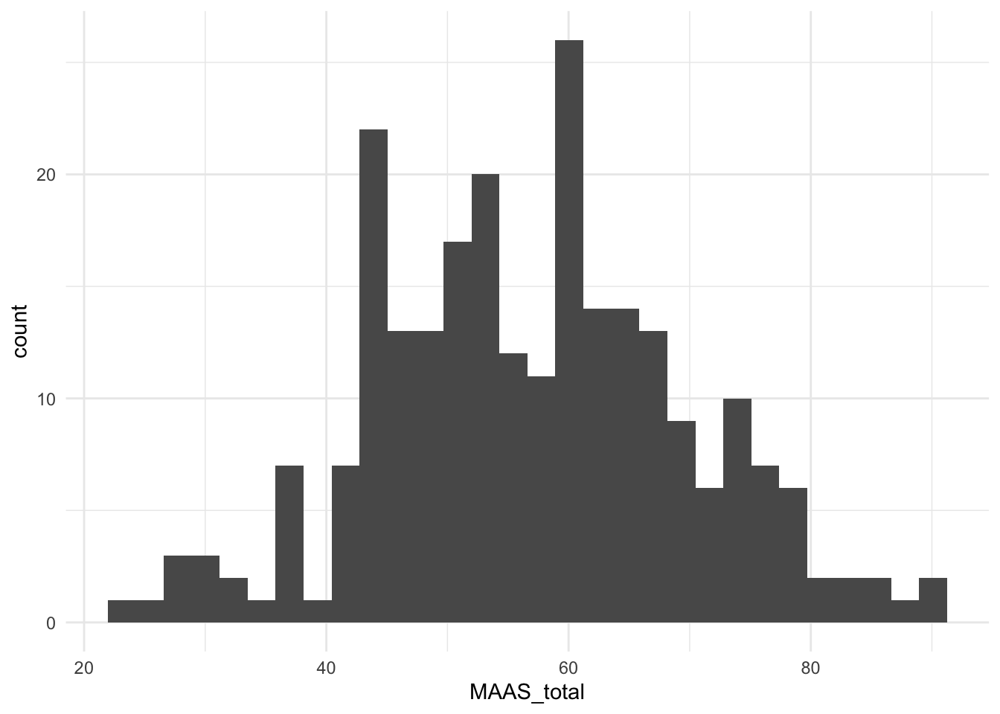
`stat_bin()` using `bins = 30`. Pick better value with `binwidth`.Warning: Removed 130 rows containing non-finite outside the scale range
(`stat_bin()`).`stat_bin()` using `bins = 30`. Pick better value with `binwidth`.Warning: Removed 249 rows containing non-finite outside the scale range
(`stat_bin()`).`stat_bin()` using `bins = 30`. Pick better value with `binwidth`.Warning: Removed 248 rows containing non-finite outside the scale range
(`stat_bin()`).summarise_data <- function(df) {
df %>%
summarise(across(
where(is.numeric),
list(
mean = ~ mean(.x, na.rm = TRUE),
median = ~ median(.x, na.rm = TRUE),
sd = ~ sd(.x, na.rm = TRUE)
),
.names = "{.col}_{.fn}"
))
}Let’s compare summaries of the two datasets (full and reduced):
bind_rows(
full_df = summarise_data(df_merged_analysis),
reduced_df = summarise_data(df_merged_exc_analysis),
.id = "dataset"
) %>%
tidyr::pivot_longer(-dataset) %>%
tidyr::pivot_wider(names_from = dataset, values_from = value)# A tibble: 45 × 3
name full_df reduced_df
<chr> <dbl> <dbl>
1 mwq_total_score_mean 19.7 19.9
2 mwq_total_score_median 20 20
3 mwq_total_score_sd 6.13 5.75
4 MSSB_total_mean 8.71 8.30
5 MSSB_total_median 7 6
6 MSSB_total_sd 6.79 6.63
7 OCI_R_total_score_mean 20.5 20.4
8 OCI_R_total_score_median 19 18.5
9 OCI_R_total_score_sd 13.1 12.8
10 AQ_total_score_mean 19.2 18.9
# ℹ 35 more rows5.2.1 Check for normality of distributions
Formal test (S-W):
df_merged_exc_analysis %>%
summarise(across(where(is.numeric), ~ shapiro.test(.)$p.value)) %>%
t() %>%
format(scientific = FALSE) [,1]
mwq_total_score "0.0095163015136107489966300"
MSSB_total "0.0000000000000459405771220"
OCI_R_total_score "0.0000001513230222264550905"
AQ_total_score "0.0004095571442978528640434"
ASRS_total_score "0.5374483889664704028277242"
BDI_shorten_total_score "0.0000000000000105687301399"
EAT_total_score "0.0000000000000000002684884"
HCL32_total_score "0.0000000867247662444414950"
STAI_state_sum "0.0028870066597668003413601"
STAI_trait_sum "0.1549983182972703710245099"
RRS_total_score "0.4602644330298278352309183"
MAAS_total "0.4602644330298278352309183"
CAMSR_total_score "0.1510657759078806172681197"
gender.quantised "0.0000000000000000002758431"
age.year "0.0000000000000012757684676"Visual inspection with QQplots:
numeric_cols_exc <- df_merged_exc_analysis %>%
dplyr::select(where(is.numeric)) %>%
mutate(across(everything(), ~ scale(.)))
for(col_name in names(numeric_cols_exc)){
qqnorm(numeric_cols_exc[[col_name]], main = paste("QQ plot (reduced dataset):", col_name))
qqline(numeric_cols_exc[[col_name]])
}Several variables have non-normal distribution, thus we should use Spearman correlation in our bivariate correlation analyses!
Let’s visualise NAs as well. We need to transform the results to characters and plot with geom_bar used for factors/categories.
for (var in vars_to_plot) {
tmp <- df_merged_exc_analysis %>%
mutate(
value = ifelse(is.na(.data[[var]]), "NA", as.character(.data[[var]]))
)
# Get levels in numeric order, then add "NA"
lvls <- c(as.character(sort(unique(na.omit(df_merged_exc_analysis[[var]])))), "NA")
p <- ggplot(tmp, aes(factor(value, levels = lvls))) +
geom_bar() +
theme_minimal() +
labs(title = var, x = var)
print(p)
}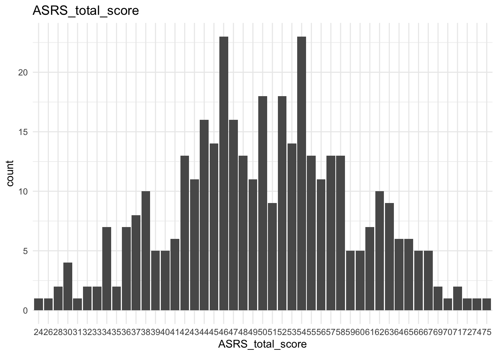

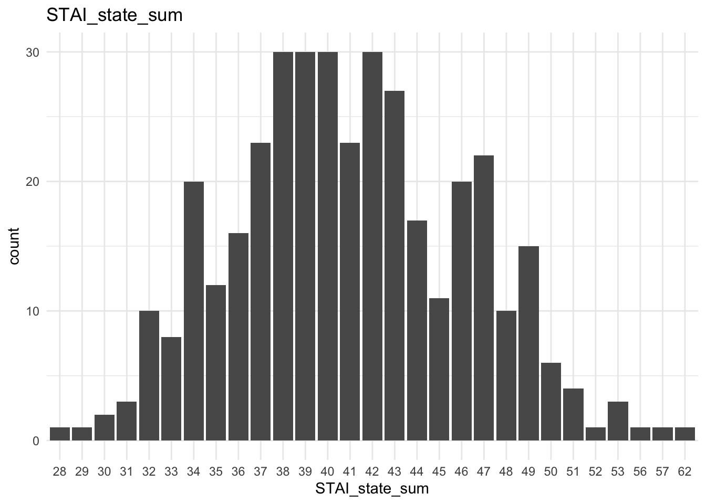
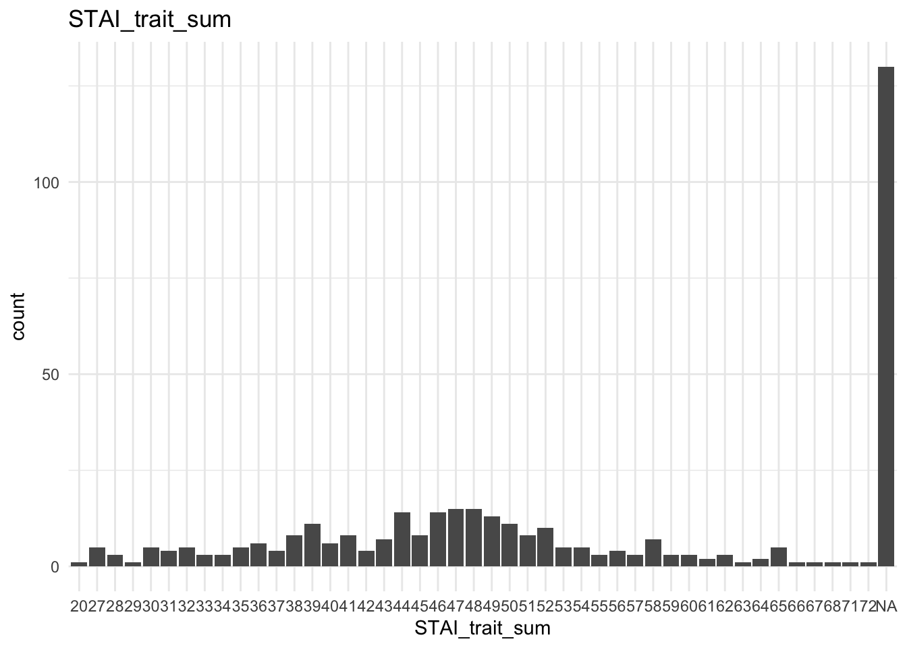
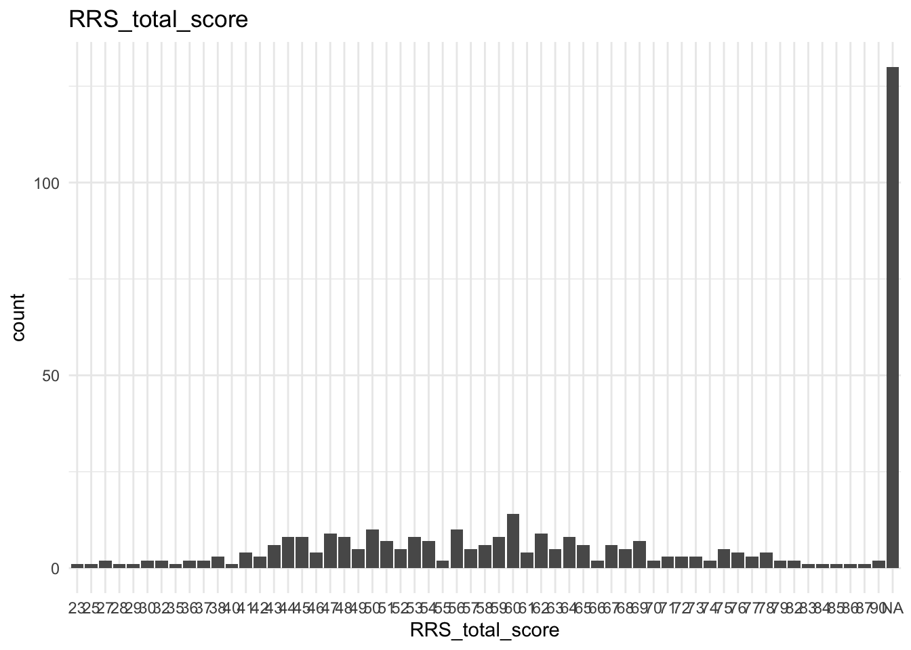
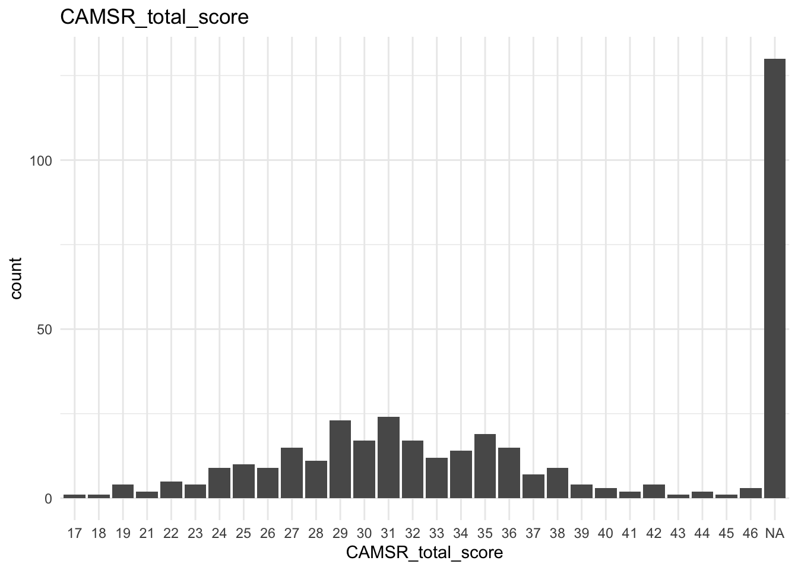
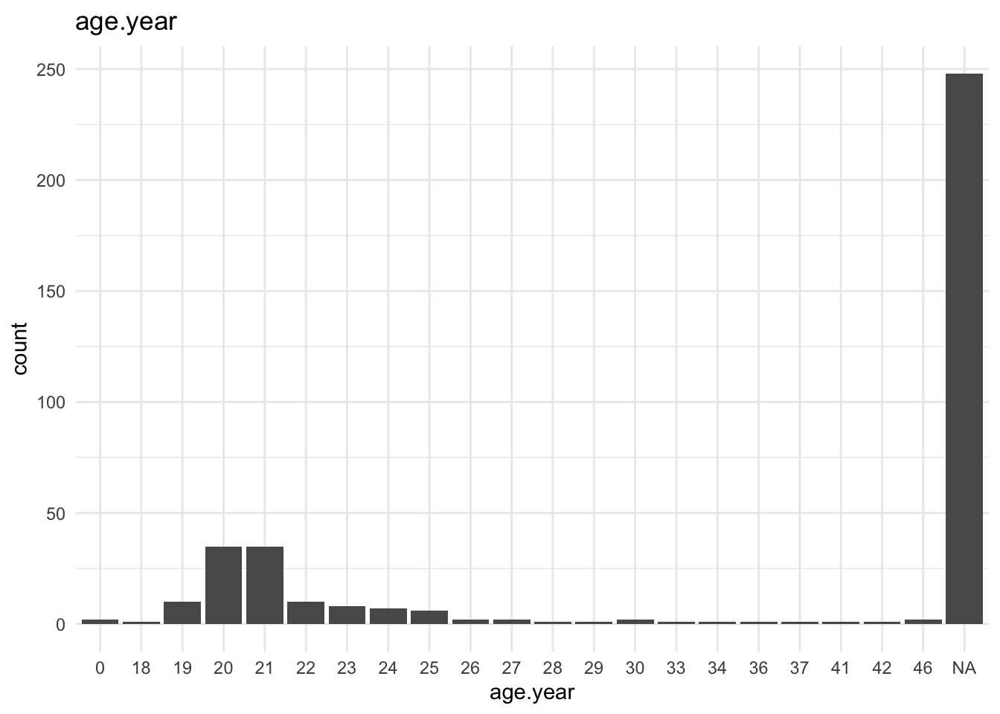
5.3 Correlations (bivariate; correlation matrix)
Create a correlation test to use for matrix:
corr_matrix_exc <- df_merged_exc_analysis %>%
dplyr::select(-c(age.year, gender.quantised, Participant.Public.ID, STAI_trait_sum, RRS_total_score, MAAS_total, CAMSR_total_score)) %>%
na.omit() %>%
corr.test(method = "spearman", adjust = "bonferroni")Uncorrected p-values matrix:
var_names <- c( "Mind-wandering (MWQ)", "Shizotypy (MSS-B)", "OCD (OCI-R)", "Autism spectrum (AQ)", "ADHD (ASRS)", "Depression (BDI shortened)", "Eating disorder (EAT)", "Hypomania (HCL-32)", "Anxiety (STAI state)")
colnames(corr_matrix_exc$r) <- var_names
rownames(corr_matrix_exc$r) <- var_names
corrplot(
corr_matrix_exc$r,
p.mat = corr_matrix_exc$raw, # raw p-values
sig.level = 0.05, # uncorrected alpha
type = "upper",
insig = "blank",
method = "ellipse",
addCoef.col = "black",
number.cex = 0.7,
title = "Uncorrected correlations",
tl.cex = 0.75,
tl.col = "black"
)
# ----------------------------
# 2️⃣ Bonferroni-adjusted correlations
# ----------------------------
corrplot(
corr_matrix_exc$r,
p.mat = corr_matrix_exc$p,
type = "upper",# adjusted p-values
sig.level = 0.05, # compare to 0.05 now
method = "ellipse",
addCoef.col = "black",
number.cex = 0.7,
title = "Bonferroni-adjusted correlations",
tl.cex = 0.75,
tl.col = "black"
)Warning in corrplot(corr_matrix_exc$r, p.mat = corr_matrix_exc$p, type =
"upper", : p.mat and corr may be not paired, their rownames and colnames are
not totally same!Trying ggcorrplot:
r_mat_exc <- corr_matrix_exc$r
p_mat_exc <- corr_matrix_exc$p
#r_mat_ordered <- r_mat[var_order, var_order]
#p_mat_ordered <- p_mat[var_order, var_order]
corr_matrix_exc_ggplot <- ggcorrplot(corr_matrix_exc$r,
type = "full",
lab = TRUE,
lab_size = 4,
p.mat = corr_matrix$p, # pass p-values
sig.level = 0.05,
insig = "blank", # threshold for significance,
lab_col = "black") +
theme_minimal() +
labs(x = NULL, y = NULL, title = "Correlation matrix of variable of interest (reduced dataset)", subtitle = "Below the diagonal, associations with insignificant unadjusted p-values were removed. \nAbove the diagonal, associations with insignificant adjusted p-values were removed.") +
scale_x_discrete(labels = var_names) +
scale_y_discrete(labels = var_names) +
theme(
axis.text.x = element_text(angle = 45, hjust = 1),
plot.title.position = "plot", # aligns relative to the entire plot
plot.subtitle.position = "plot", # aligns relative to the entire plot
plot.title = element_text(hjust = 0),
plot.subtitle = element_text(hjust = 0)
)
corr_matrix_exc_ggplotWarning in plot_theme(plot): The `plot.subtitle.position` theme element is not defined in the element
hierarchy.Let’s compare ggcorrplots of full and reduced datasets:
corr_matrix_ggplotWarning in plot_theme(plot): The `plot.subtitle.position` theme element is not defined in the element
hierarchy.corr_matrix_exc_ggplotWarning in plot_theme(plot): The `plot.subtitle.position` theme element is not defined in the element
hierarchy.
In reduced dataset there are slightly stronger correlations between MW and ASRS, OCI-R and MSS-B; however slightly weaker correlation with HCL-32. Despite these slight differences, when p-adjustment is applied, the same bivariate correlations remain significant.
5.4 Regression analysis
Clean the dataset completely - at this point 1 observation is removed due to missing BDI values - not imputed in this version of the analysis!
df_merged_exc_analysis_clean <- df_merged_exc_analysis %>%
dplyr::select(-c(age.year, gender.quantised, Participant.Public.ID, STAI_trait_sum, RRS_total_score, MAAS_total, CAMSR_total_score)) %>%
na.omit()
glimpse(df_merged_exc_analysis_clean)Rows: 377
Columns: 9
$ mwq_total_score <dbl> 28, 23, 15, 22, 19, 20, 25, 28, 21, 12, 16, 21…
$ MSSB_total <dbl> 14, 4, 6, 2, 5, 17, 17, 23, 1, 2, 12, 0, 18, 1…
$ OCI_R_total_score <dbl> 21, 1, 13, 20, 12, 32, 12, 30, 0, 1, 18, 8, 25…
$ AQ_total_score <dbl> 19, 27, 17, 23, 20, 22, 30, 25, 15, 15, 26, 16…
$ ASRS_total_score <dbl> 58, 60, 50, 64, 43, 69, 58, 62, 58, 37, 53, 49…
$ BDI_shorten_total_score <dbl> 22, 9, 17, 13, 11, 15, 19, 20, 9, 9, 18, 10, 2…
$ EAT_total_score <dbl> 52, 14, 37, 17, 16, 31, 6, 46, 12, 14, 10, 7, …
$ HCL32_total_score <dbl> 14, 13, 8, 19, 21, 21, 18, 12, 25, 21, 19, 22,…
$ STAI_state_sum <dbl> 41, 50, 34, 41, 41, 39, 40, 35, 36, 40, 38, 42…Let’s scale (standardise) all the numeric variables.
df_merged_exc_analysis_clean_std <- df_merged_exc_analysis_clean %>%
mutate(across(where(is.numeric), ~ as.numeric(scale(.))))Check the data
glimpse(df_merged_exc_analysis_clean_std)Rows: 377
Columns: 9
$ mwq_total_score <dbl> 1.41228849, 0.54001988, -0.85560990, 0.3655661…
$ MSSB_total <dbl> 0.8576170, -0.6483057, -0.3471212, -0.9494903,…
$ OCI_R_total_score <dbl> 0.04330952, -1.51914869, -0.58167377, -0.03481…
$ AQ_total_score <dbl> 0.02406817, 1.42002197, -0.32492028, 0.7220450…
$ ASRS_total_score <dbl> 0.852606901, 1.067253180, -0.005978212, 1.4965…
$ BDI_shorten_total_score <dbl> 1.57078852, -1.12285548, 0.53477160, -0.294041…
$ EAT_total_score <dbl> 3.41058071, 0.11212805, 2.10855993, 0.37253221…
$ HCL32_total_score <dbl> -0.68467290, -0.85239329, -1.69099525, 0.15392…
$ STAI_state_sum <dbl> 0.004054802, 1.723797871, -1.333523140, 0.0040…Multiple regression:
reg_model_exc <- lm(mwq_total_score ~ MSSB_total + OCI_R_total_score + AQ_total_score
+ ASRS_total_score + BDI_shorten_total_score + EAT_total_score + HCL32_total_score + STAI_state_sum, data = df_merged_exc_analysis_clean_std)
summary(reg_model_exc)
Call:
lm(formula = mwq_total_score ~ MSSB_total + OCI_R_total_score +
AQ_total_score + ASRS_total_score + BDI_shorten_total_score +
EAT_total_score + HCL32_total_score + STAI_state_sum, data = df_merged_exc_analysis_clean_std)
Residuals:
Min 1Q Median 3Q Max
-2.7726 -0.5739 0.0253 0.5605 2.3365
Coefficients:
Estimate Std. Error t value Pr(>|t|)
(Intercept) -1.802e-16 4.349e-02 0.000 1.000
MSSB_total -4.646e-03 6.231e-02 -0.075 0.941
OCI_R_total_score 3.768e-02 5.672e-02 0.664 0.507
AQ_total_score 1.254e-03 5.243e-02 0.024 0.981
ASRS_total_score 5.090e-01 5.515e-02 9.229 <2e-16 ***
BDI_shorten_total_score 4.825e-02 6.035e-02 0.800 0.425
EAT_total_score -4.959e-02 4.836e-02 -1.025 0.306
HCL32_total_score 5.464e-02 4.594e-02 1.189 0.235
STAI_state_sum -3.405e-02 4.436e-02 -0.768 0.443
---
Signif. codes: 0 '***' 0.001 '**' 0.01 '*' 0.05 '.' 0.1 ' ' 1
Residual standard error: 0.8444 on 368 degrees of freedom
Multiple R-squared: 0.3022, Adjusted R-squared: 0.287
F-statistic: 19.92 on 8 and 368 DF, p-value: < 2.2e-16Create a nice tab for the results WITHOUT adjustment (for comparison):
tab_model(reg_model_exc)| mwq total score | |||
| Predictors | Estimates | CI | p |
| (Intercept) | -0.00 | -0.09 – 0.09 | 1.000 |
| MSSB total | -0.00 | -0.13 – 0.12 | 0.941 |
| OCI R total score | 0.04 | -0.07 – 0.15 | 0.507 |
| AQ total score | 0.00 | -0.10 – 0.10 | 0.981 |
| ASRS total score | 0.51 | 0.40 – 0.62 | <0.001 |
| BDI shorten total score | 0.05 | -0.07 – 0.17 | 0.425 |
| EAT total score | -0.05 | -0.14 – 0.05 | 0.306 |
| HCL32 total score | 0.05 | -0.04 – 0.14 | 0.235 |
| STAI state sum | -0.03 | -0.12 – 0.05 | 0.443 |
| Observations | 377 | ||
| R2 / R2 adjusted | 0.302 / 0.287 | ||
Create a nice tab for the results and use bonferroni adjustment!
tab_model(reg_model_exc, p.adjust = "bonferroni")| mwq total score | |||
| Predictors | Estimates | CI | p |
| (Intercept) | -0.00 | -0.09 – 0.09 | 1.000 |
| MSSB total | -0.00 | -0.13 – 0.12 | 1.000 |
| OCI R total score | 0.04 | -0.07 – 0.15 | 1.000 |
| AQ total score | 0.00 | -0.10 – 0.10 | 1.000 |
| ASRS total score | 0.51 | 0.40 – 0.62 | <0.001 |
| BDI shorten total score | 0.05 | -0.07 – 0.17 | 1.000 |
| EAT total score | -0.05 | -0.14 – 0.05 | 1.000 |
| HCL32 total score | 0.05 | -0.04 – 0.14 | 1.000 |
| STAI state sum | -0.03 | -0.12 – 0.05 | 1.000 |
| Observations | 377 | ||
| R2 / R2 adjusted | 0.302 / 0.287 | ||
And let’s compare the basic model from full dataset (reg_model) and current model on reduced dataset (reg_model_exc).
tab_model(reg_model,
reg_model_exc,
p.adjust = "bonferroni")| mwq total score | mwq total score | |||||
| Predictors | Estimates | CI | p | Estimates | CI | p |
| (Intercept) | 0.00 | -0.08 – 0.08 | 1.000 | -0.00 | -0.09 – 0.09 | 1.000 |
| MSSB total | -0.11 | -0.22 – 0.00 | 0.545 | -0.00 | -0.13 – 0.12 | 1.000 |
| OCI R total score | 0.05 | -0.06 – 0.15 | 1.000 | 0.04 | -0.07 – 0.15 | 1.000 |
| AQ total score | 0.01 | -0.08 – 0.11 | 1.000 | 0.00 | -0.10 – 0.10 | 1.000 |
| ASRS total score | 0.47 | 0.37 – 0.57 | <0.001 | 0.51 | 0.40 – 0.62 | <0.001 |
| BDI shorten total score | 0.11 | -0.00 – 0.22 | 0.465 | 0.05 | -0.07 – 0.17 | 1.000 |
| EAT total score | -0.02 | -0.11 – 0.07 | 1.000 | -0.05 | -0.14 – 0.05 | 1.000 |
| HCL32 total score | 0.10 | 0.01 – 0.18 | 0.203 | 0.05 | -0.04 – 0.14 | 1.000 |
| STAI state sum | -0.03 | -0.11 – 0.05 | 1.000 | -0.03 | -0.12 – 0.05 | 1.000 |
| Observations | 450 | 377 | ||||
| R2 / R2 adjusted | 0.278 / 0.265 | 0.302 / 0.287 | ||||
Plot model estimates:
plot_model(reg_model_exc, type = "est", p.adjust = "bonferroni", show.value = TRUE, value.offset = 0.35) +
theme_minimal() +
labs(title = "MWQ predicted be questionnaires (reduced dataset)") +
scale_x_discrete(labels = c("STAI", "HCL32", "EAT", "BDI short", "ASRS", "AQ", "OCI-R", "MSSB"))Scale for x is already present.
Adding another scale for x, which will replace the existing scale.5.4.1 Model diagnostics (influential points, assumptions check - normality of residuals, homogeneity, multicolinearity)
5.4.1.1 Influential points
Cook’s distance - using rule of thumb: threshold = 4/n observations.
plot(reg_model_exc, 4)
abline(h = 4/nrow(df_merged_exc_analysis_clean_std), col = "red") Several points are over the arbitrary threshold for Cook’s distance. However, comparing the relative differences, no particular observation really stands out, so probably removing influential points is not necessary in the reduced dataset.
#augment(reg_model_exc) %>%
# mutate(row_n = seq((1:nrow(df_merged_exc_analysis_clean_std)))) %>%
# relocate(row_n, 1) %>%
# filter(row_n %in% c(13, 116, 130))Plotting:
plot_model(reg_model_exc, type = "pred", show.data = TRUE)Data points may overlap. Use the `jitter` argument to add some amount of
random variation to the location of data points and avoid overplotting.
Data points may overlap. Use the `jitter` argument to add some amount of
random variation to the location of data points and avoid overplotting.
Data points may overlap. Use the `jitter` argument to add some amount of
random variation to the location of data points and avoid overplotting.
Data points may overlap. Use the `jitter` argument to add some amount of
random variation to the location of data points and avoid overplotting.
Data points may overlap. Use the `jitter` argument to add some amount of
random variation to the location of data points and avoid overplotting.
Data points may overlap. Use the `jitter` argument to add some amount of
random variation to the location of data points and avoid overplotting.
Data points may overlap. Use the `jitter` argument to add some amount of
random variation to the location of data points and avoid overplotting.
Data points may overlap. Use the `jitter` argument to add some amount of
random variation to the location of data points and avoid overplotting.$MSSB_total
$OCI_R_total_score
$AQ_total_score
$ASRS_total_score
$BDI_shorten_total_score
$EAT_total_score
$HCL32_total_score
$STAI_state_sumLooking at the visualisation of predictions and raw data, no particular observations stands out as influential outlier. However, importantly, visualisation suggest that the relationship in case of MSS-B, OCI-R and possibly AQ suggest a non-linear relationship. Maybe we should consider this…
plot(reg_model_exc, which = c(5,6))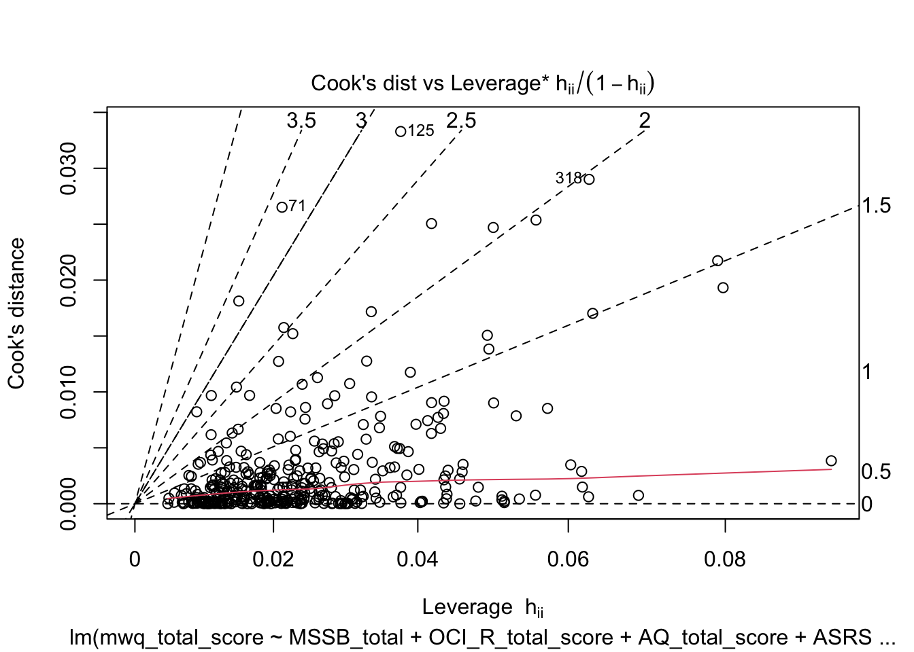
Some observations stand out - 71, 125, 318, which were also highlighted in Cook’s distance visualisation. But let’s check additional test and visualisations!
5.4.1.2 Checking model assumptions
Check model for violation of assumptions:
check_model(reg_model_exc)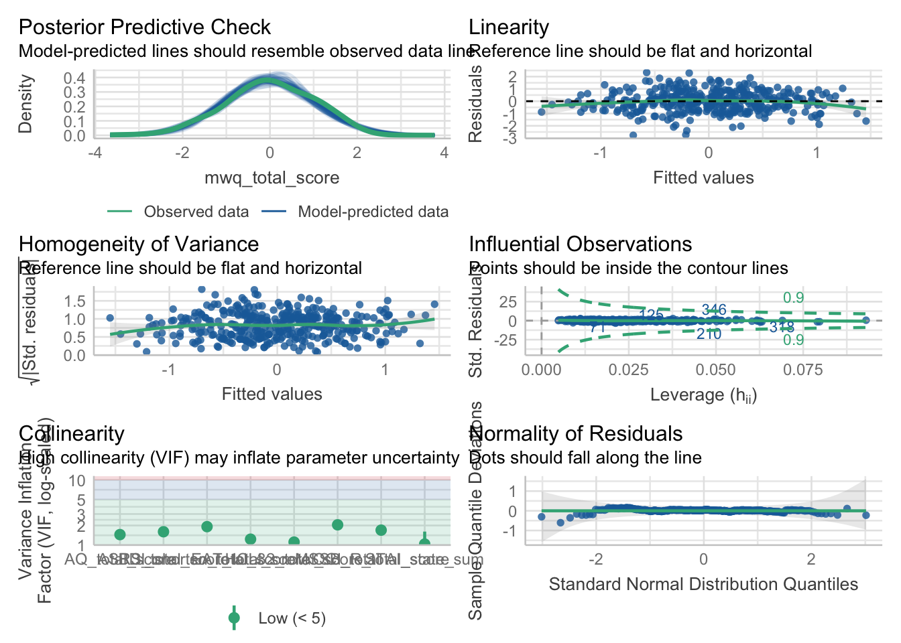
Check normality of residuals Test:
check_normality(reg_model_exc)OK: residuals appear as normally distributed (p = 0.440).Plot:
plot(reg_model_exc, 2)Check for homoscedasticity Test
check_heteroscedasticity(reg_model_exc)OK: Error variance appears to be homoscedastic (p = 0.546).check_heteroscedasticity(reg_model_exc) |> plot()augment(reg_model_exc) %>%
mutate(row_n = seq((1:nrow(df_merged_exc_analysis_clean_std)))) %>%
relocate(row_n, 1) %>%
arrange(desc(.fitted))# A tibble: 377 × 16
row_n mwq_total_score MSSB_total OCI_R_total_score AQ_total_score
<int> <dbl> <dbl> <dbl> <dbl>
1 318 -0.158 1.91 1.37 1.07
2 163 0.366 0.556 1.14 -0.150
3 291 1.24 -0.347 0.981 -0.674
4 69 2.28 2.36 1.14 -0.325
5 130 1.59 2.21 2.15 0.373
6 129 1.41 1.91 0.981 1.07
7 374 1.76 0.105 1.61 -0.150
8 87 0.714 0.255 -0.191 -0.150
9 119 1.59 1.46 0.903 1.94
10 186 0.0167 2.97 1.29 0.199
# ℹ 367 more rows
# ℹ 11 more variables: ASRS_total_score <dbl>, BDI_shorten_total_score <dbl>,
# EAT_total_score <dbl>, HCL32_total_score <dbl>, STAI_state_sum <dbl>,
# .fitted <dbl>, .resid <dbl>, .hat <dbl>, .sigma <dbl>, .cooksd <dbl>,
# .std.resid <dbl>We can see that the despite passing the formal test, visualisation suggest some points affecting homoscedasticity. Influential point at the positive extreme are observations 318 and 163 and at the negative extreme 329 and 241. However, these points are not concretely extreme and are within expected bounds, so based on visualisations and tests I again suggest no removal of observations.
check_outliers(reg_model_exc) |> plot()Check for multicolinearity Test
check_collinearity(reg_model_exc)# Check for Multicollinearity
Low Correlation
Term VIF VIF 95% CI Increased SE Tolerance
MSSB_total 2.05 [1.78, 2.40] 1.43 0.49
OCI_R_total_score 1.70 [1.50, 1.98] 1.30 0.59
AQ_total_score 1.45 [1.30, 1.68] 1.20 0.69
ASRS_total_score 1.60 [1.42, 1.86] 1.27 0.62
BDI_shorten_total_score 1.92 [1.68, 2.25] 1.39 0.52
EAT_total_score 1.23 [1.13, 1.43] 1.11 0.81
HCL32_total_score 1.11 [1.04, 1.33] 1.06 0.90
STAI_state_sum 1.04 [1.00, 1.61] 1.02 0.96
Tolerance 95% CI
[0.42, 0.56]
[0.51, 0.67]
[0.60, 0.77]
[0.54, 0.70]
[0.45, 0.60]
[0.70, 0.89]
[0.75, 0.96]
[0.62, 1.00]Visualise:
check_collinearity(reg_model_exc) |> plot()Summary: based on the visual inspection and formal tests, I suggest no removal of observations and keep this regression model as the main model for reduced dataset.
6 Tab for all models created so far
In this tab three models are plotted:
- initial model on full dataset (
reg_model) - updated model on full dateset with removed 2 influential points (
reg_model_removed_influentials) - model for reduced dataset - no diagnosed/medicated participants (
reg_model_exc)
Note: rlm() model on full dataset cannot be visualised in the same tab because tab_model() does not support rlm() models.
In order to compare them, summary of rlm() model on full dataset (no influential points removed) is pasted below.
Tab for lm() models:
tab_model(reg_model,
reg_model_removed_influentials,
reg_model_exc,
show.se = TRUE,
show.ci = FALSE,
show.stat = TRUE,
show.df = TRUE,
digits = 3,
p.adjust = "bonferroni",
dv.labels = c("MWQ predictions on full data", "MWQ predictions on full data with 2 influentail points removed", "MWQ predictions on reduced data"),
title = "3 models predicting MWQ score. p-values for all models were adjusted (Bonferroni).")| MWQ predictions on full data | MWQ predictions on full data with 2 influentail points removed | MWQ predictions on reduced data | |||||||||||||
| Predictors | Estimates | std. Error | Statistic | p | df | Estimates | std. Error | Statistic | p | df | Estimates | std. Error | Statistic | p | df |
| (Intercept) | 0.000 | 0.040 | 0.000 | 1.000 | 441.000 | 0.010 | 0.040 | 0.253 | 1.000 | 439.000 | -0.000 | 0.043 | -0.000 | 1.000 | 368.000 |
| MSSB total | -0.106 | 0.057 | -1.882 | 0.545 | 441.000 | -0.098 | 0.058 | -1.705 | 0.801 | 439.000 | -0.005 | 0.062 | -0.075 | 1.000 | 368.000 |
| OCI R total score | 0.045 | 0.052 | 0.874 | 1.000 | 441.000 | 0.018 | 0.052 | 0.348 | 1.000 | 439.000 | 0.038 | 0.057 | 0.664 | 1.000 | 368.000 |
| AQ total score | 0.013 | 0.048 | 0.278 | 1.000 | 441.000 | 0.009 | 0.048 | 0.189 | 1.000 | 439.000 | 0.001 | 0.052 | 0.024 | 1.000 | 368.000 |
| ASRS total score | 0.468 | 0.050 | 9.432 | <0.001 | 441.000 | 0.493 | 0.050 | 9.887 | <0.001 | 439.000 | 0.509 | 0.055 | 9.229 | <0.001 | 368.000 |
| BDI shorten total score | 0.109 | 0.056 | 1.951 | 0.465 | 441.000 | 0.117 | 0.055 | 2.120 | 0.311 | 439.000 | 0.048 | 0.060 | 0.800 | 1.000 | 368.000 |
| EAT total score | -0.021 | 0.044 | -0.481 | 1.000 | 441.000 | -0.022 | 0.044 | -0.516 | 1.000 | 439.000 | -0.050 | 0.048 | -1.025 | 1.000 | 368.000 |
| HCL32 total score | 0.098 | 0.043 | 2.290 | 0.203 | 441.000 | 0.097 | 0.043 | 2.278 | 0.209 | 439.000 | 0.055 | 0.046 | 1.189 | 1.000 | 368.000 |
| STAI state sum | -0.029 | 0.042 | -0.691 | 1.000 | 441.000 | -0.016 | 0.043 | -0.360 | 1.000 | 439.000 | -0.034 | 0.044 | -0.768 | 1.000 | 368.000 |
| Observations | 450 | 448 | 377 | ||||||||||||
| R2 / R2 adjusted | 0.278 / 0.265 | 0.285 / 0.272 | 0.302 / 0.287 | ||||||||||||
Summary of rlm():
robust_summary_df Estimate Robust_SE t_value p_value p_bonf
(Intercept) 0.0233 0.0392 0.5946 0.5521 1.0000
MSSB_total -0.0680 0.0646 -1.0528 0.2925 1.0000
OCI_R_total_score 0.0093 0.0547 0.1705 0.8646 1.0000
AQ_total_score -0.0045 0.0474 -0.0959 0.9236 1.0000
ASRS_total_score 0.4869 0.0497 9.7987 0.0000 0.0000
BDI_shorten_total_score 0.1143 0.0522 2.1877 0.0287 0.2583
EAT_total_score -0.0312 0.0477 -0.6539 0.5132 1.0000
HCL32_total_score 0.1026 0.0494 2.0761 0.0379 0.3410
STAI_state_sum -0.0304 0.0503 -0.6047 0.5454 1.0000